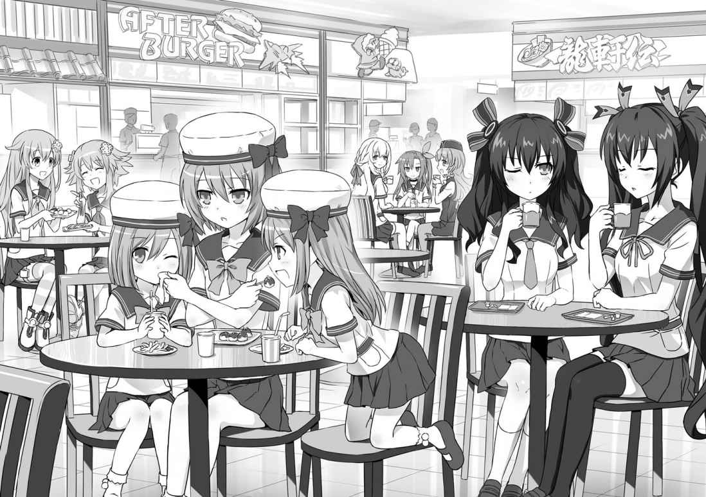

| 桜ノ杜ぶんこ 超次元ゲイム ネプテューヌ はいすくーる3 | |
| おかず | |
| (2013) | |
桜ノ杜ぶんこ
超次元ゲイム ネプテューヌ はいすくーる３
おかず
初めましての人は、初めまして！ そうじゃない人は、三度目の「こんにちは！」。
趣味はゲームで、特技は変身。愛と勇気と謎 いっぱいの主人公、ネプテューヌでっす！
さてさて、前回までの『ネプテューヌはいすくーる』はと言うと......。
「わたしが思いついたのはさ、あの教会をわたしたち専用の部室って言うか......秘密基地に改造しちゃわない？ ってことなんだけど」
わたしの手元に残った、〝異世界のパープルハート〟の剣。
そして、「理事長」と名乗った謎の〝妖精 さん〟。
マジェコンヌ先生を元に戻しても、いくつかの謎は解明しないまま。あーあ、もう一度妖精さんか、パープルハートに会えれば何かわかるかもしれないのになー。
妖精さんと出会った、学園のはずれにある林の中の小さな教会、そこに毎日通い詰めればもう一度妖精さんか、パープルハートに会える機会があるかも。
あ、そうだ！ どうせだったら毎日通うのが楽しくなるように、教会を丸ごと劇的大改造しちゃえー！
......って感じで、わたしたちだけの秘密基地が出来上がったと思ったその矢先、
「今学期末をもって、老朽化した旧校舎棟の取り壊しを決定します。また、旧校舎及び教職員棟に隣接する林についても伐採し、旧校舎跡地と合わせて敷地を整備します」
突然、学園側から発表された旧校舎取り壊し計画。まさに、〝寝耳にミミズ〟！
このままじゃ、せっかく完成した秘密基地も取り壊されちゃうよ。そうしたら、もう妖精さんにもパープルハートにも会えなくなっちゃうかも!? そんなの嫌だよー。
その上、旧校舎の教室は、色んなサークルや同好会が部室として使ってるんだって。わたしたちだけじゃなくて、旧校舎に集まっているみんなにとっても大ピンチ！
「......ようし、わかったよ！ 不肖ネプテューヌ。旧校舎取り壊し反対運動に、ドーンと力を貸してあげようじゃないの！」
そこで、同好会みんなの期待を背に受けて、学園の横暴に立ち向かうことになったわたしたち。
学園の有名人であるわたしたちが、反対運動に立ち上がれば、きっと協力してくれる人も出てくるはず......。
ノワールが反対演説会を開いたり、ベールが支援を訴えるパーティーを企画したり、ブランがルウィー州にある文化財団に訴えたり、日に日にビッグウェーブとなって学園中に広がっていく取り壊し反対運動。
そんな中で出会ったのが、
「アタイは、リンダっていいますぅ。アタイ、ネプテューヌさんの大大大ファンなんですぅ！ アタイ、ネプテューヌさんのお手伝 いがしたいんですぅ！」
わたしの大ファンだっていう女の子、リンダ。
ちょーっと見た目は不良っぽいけど、友達思いの優しい子かなーなんて思って、わたしは彼女と一緒に反対運動をもっと盛り上げていく決意を新たにしたんだけど......これが間違いの元だった......。
リンダは、仲間のワレチューと一緒になって、不思議な魔力をもった指輪でわたしのことを洗脳し、反対運動をめちゃくちゃにしてやろうと企 んでいたの。見た目も中身も本当に不良だったってわけ！
まんまとリンダにしてやられたわたしは、操られるままに大暴走。
やりすぎだって心配してくれるみんなの忠告も耳に入らず、無茶な要求を連発して、最後には学園中から白い目で見られちゃうことに。
それでも、
「ねぷねぷが悪いんじゃありません！」
「ネプ子の気持ちにつけ込んで術をかけた二人......それ以上に、ネプ子を使って反対運動を台無しにしようとしたヤツが一番悪いに決まってるわ」
うう、友達っていうのは本当にあったかくていいもんだね。
こんぱもあいちゃんも、ノワールもベールもブランも、みんなが協力してわたしの洗脳を解いてくれたんだ。
よおおっし！ ここからは、汚名返上！ 名誉挽回 だよ！
わたしの純粋な乙女心 を弄 んで、酷 い目に遭わせてくれたリンダたちと、その背後にいる黒幕にはきっちり女神のお仕置きをしてあげなきゃ！
怒れるわたしたちの反撃が始まった。
ノワールの知り合いである電算同好会会長の神宮寺ケイや、学校の保健医さんである箱崎チカ先生の協力も得たわたしたちは、旧校舎取り壊しを強引に推し進めようとしている学長代行が、裏で悪徳建設会社「マジック・カンパニー」と繋 がっているという衝撃の事実に突き当たったんだ。
そこで、学長代行とマジック・カンパニーが行っている不正の証拠をつかむために夜の教職員棟に忍び込み、証拠探しをしようとしたわたしたち。だけど、そう簡単に事は運ばないもので、
「アククク......いけないなぁ、学生さんがこんな夜中にウロウロしてちゃあ」
「アクククク。吾輩 、マジック・カンパニー専務取締役、トリック・ザ・ハード。以後、お見知りおきをといったところか？」
忍び込んだ先で、問題の建設会社「マジック・カンパニー」の幹部である、トリック・ザ・ハードに捕らえられちゃった。
しかも、このトリックを始め、マジック・カンパニーの連中は、マジェコンヌ先生と同じように異世界の悪いヤツに精神を乗っ取られちゃってたの！ ほんと、困っちゃうよねーこういうのって。
「この剣からは、微 かにだが向こう側のパープルハートの思念を感じる。これが、この場所で厳重に保管されていたということは、お前たちが向こうの女神とコンタクトを取っていた何よりの証拠」
「〝ゲート〟を開く方法を教えろ。......さもなくば、殺す」
どうやら、マジック・カンパニーの狙 いは最初からこの教会と、わたしたちだったみたい。わたしたちが、異世界のパープルハートたちと自由に連絡が取れると思い込んでるみたいなんだけど......そんなことできるなら、もうとっくにやってるってばー。
なんて言っても聞く耳持ってくれないマジック・カンパニーの面々。
でもでも、訳あって別行動を取っていたあいちゃんとノワールに何とかこっちのピンチを伝えて、手を打ってもらわなきゃ。
「...ゲートを開ける儀式を行うには、四つの神器が必要。ひとつは、今あなたが持っているパープルハートの......女神の剣」
「四つの神器だと？ あとの三つはどこだ？ 言え」
「こういった事態に備えてのリスクヘッジを考えるのは、常識よ。残りの三つは、この場にいない仲間がバラバラに持っている」
「......連絡させろ」
そこでブランの口から飛び出した、口から出任せの嘘八百 な大ボラ吹きトンデモ設定。
これをまんまと信用させて、あいちゃんたちと連絡を取ることに成功！
あいちゃんも、わたしたちの大ウソにうまーく口裏を合わせてくれちゃうところがニクいよね。以心伝心。
「悪党は卑怯 で当然。むしろ、卑怯 でない悪党など、吾輩 からすれば悪党の風上にも置けぬというもの。アクククク！」
「これでネプ子の濡 れ衣 は完全に晴れたわよ。いやー、良かった良かった。そこの気持ち悪いのが調子に乗ってぜーんぶ自分から白状してくれたおかげね」
そんなわけで、残りの神器（もちろん、そんな物最初から無い）とわたしたちの身柄を交換する取引現場で、トリック自身の口から自分たちが黒幕であることを白状させることに成功したわたしたち。証拠の映像が学園中に流されて大逆転！
そして、マジック・カンパニーの幹部、ジャッジ・ザ・ハードを激戦の末に倒したところまでは良かったんだけど......あと一歩のところで社長であるマジックと専務のトリックには逃げられちゃったの。く、悔しい！
「皆さんが戦ったのは、私たちの世界で大魔女マジェコンヌに仕えていた、マジェコンヌ四天王と呼ばれる者たちです」
「皆さんの世界を救う鍵 は、ネプテューヌさんにお預けしたその剣にあるということ......。皆さんをこちらの世界の私に引き合わせる出会いがもうすぐ......」
ところが、そう悔しがってばかりもいられない新たな展開が！
ジャッジを倒した後、突然また教会に現れた妖精 さん─ いーすんの口から、何やら世界の危機が迫っている的なとんでもない話を聞かされちゃった。
旧校舎取り壊し騒動から、一気に世界の危機って、お話の振れ幅大きすぎない？
それに、「こちらの世界の私に引き合わせる出会い」ってどういうこと？
ぷふー。どうやら、まだまだこのお話は、一件落着ってわけにはいかないみたい。
それを証明するかのように、
「やっと見つけた......お姉ちゃん！」
とりあえず、平和な日常を取り戻した学園の正門前に佇 む謎 の人影が。
これから一体どうなるのっ!?
「日常会話のきっかけって、やっぱりお天気の話題からだと思うんだよね」
わたしは言った。
あいちゃんはジト目になった。
こんぱは苦笑いした。
ノワールは超大きい＆わざとらしいため息をついた。
ある日の放課後。校舎を出てすぐ、校門へと続く広い道の真ん中に立って、わたしは言った。
その一言をきっかけに四人とも立ち止まったところで、
「んーと、今日はどういう風にツッコんだもんかしらねぇ」
ジト目のまんまあいちゃんがまず言った。
「わ、わたしはちゃんと聞いてあげるですよ」
続いて、こんぱ。
「こんぱ、そうやっていっつもネプテューヌのこと甘やかすのやめなさい。調子に乗るだけなんだから。いちいち付き合ってるとキリが無いからもう行きましょ」
で最後がノワールなんだけど、ちょっとちょっと！ ノワちゃん、そりゃいくら何でもあんまりだよ。
わたしは、本当に何事も無かったかのようにわたしを無視してスタスタ歩いて行っちゃおうとするノワールの前に回り込むと、ばばっと両手を左右に広げてノワールをブロック。
そのわたしを更に回り込んで、あくまでも無視の方向を貫こうとするノワール。
そうはさせないよ！ シャカシャカとカニさん歩きでまだまだブロック、ブロック。
「あーもー！ うっとうしいわねぇ！ 言いたいことあるんだったら、さっさと言ってちょうだい！」
「良し、勝ったカニ！」
ノワールが、友達 のことを無視するなんていう悪い子さんになってしまうところを阻止したわたしは、両手を広げたまま勝利のダブルピースで喜びを表現してみた。
チョキチョキ。ぴかりんぴかりん。
「大体、何なのよ会話のきっかけがお天気の話題とか......。知らない人同士の初めましてなご挨拶 でもあるまいし」
と、そんなわたしを見て、またまた深 ーくため息をついたノワールが言った。
「ただでさえ今日はバカみたいに暑くて気が滅入 ってるところに、ネプ子のそーいうノリを持ち込まれると、さすがにカチーンと来るのよねー」
あいちゃんもカチーンのところに力を込めて言い、チョキチョキしているわたしの両手を「ていていっ！」っとチョップではたき落とそうとする。
「それそれー。わたしが言いたいのは、そのことだよー」
わたしは、あいちゃんの攻撃をチョキチョキモードの指でパシっと受け止めながら言う。
「最近、お天気おかしくない？ 今日みたいに、真夏でもないのにこんな暑いかと思ったら、明日の予報はヘタすりゃ氷点下なんだって。異常気象だよ、いじょーきしょー」
「それぐらいのこと、変なフリ入れないで普通に言いなさい！」
あいちゃんが、わたしのチョキに挟まれていた手を無理矢理ぐりっと横に回して言った。
ふぉふぉっ!? こ、これは予想外の反撃......って、いだだだ！ 裂ける、裂けるぅ！
まったく何てことするかな、この子は。
わたしが赤くなっちゃった指の間にふーふーと息を吹きかけて涙目になっていると、
「確かにちょっと前から変なお天気が続いてるです。ちょうど、わたしが職業実習で病院に行ってた日あたりから、暑かったり寒かったり」
こんぱが、ちょっと思い出すように指をあごの下に当てて言った。
「わたしが学食でやけ食いしてた日だよねそれ。お昼の放送でも暑い暑い言ってたし、ノワールだって覚えてるでしょ？」
「そんなこともあったわね。正直、ネプテューヌのめちゃくちゃな食べっぷりにドン引きしたことしか覚えてなかったけど......」
ノワール、この五分で三度目のため息。どうも今日は、トークを膨らませようという気持ちが感じられないと言うか、イマイチ食いつきが悪いなぁ。
あーそっか、これもきっと暑さのせいだね。やっぱり、ここはかねてよりわたしが密 かに温めていた計画を実行に移すとき！
ひとり納得したわたしは、腕を組んでうんとうなずくと、
「そこでですよ、この異常気象に対抗するためにも我らの秘密基地に新たな装備......エアコンを導入するべきだと、ねぷねぷ参謀は思うわけです！」
オープニングヒットであるお天気の話題から水が流れるようなスムーズさで、本題を口にした。ビミョーにまだジンジンする指の付け根は、ささやかな犠牲ということで。
「我らが〝異世界交流委員会〟の装備を充実させることは、世界の平和と安定にも繋 がる大事な大事なことだと思うんだけど、どう？」
「また勝手に変な委員会名なんか名乗って......。何が世界の平和と安定よ。アンタがグータラしたいだけでしょうが。大体、ベールの部屋 より広い場所をまかなえるようなエアコン買うお金はどっから出てくるの？」
「どうせそのベールのお小遣いをアテにしてたんでしょうけど、多分無理ね。昨日、学園の外から教会まで光回線のケーブルとちゃんとした電線通すのに今月のお小遣い全部使っちゃったって言ってたから」
ところが、わたし渾身 のエアコン導入計画は、あいちゃんとノワールのコンビネーションアタックによって発表から十秒で崩壊してしまった。な、何たること......。
と言うか、わたしの計画以上に相変わらずベールのやることがぶっ飛んでて、そっちもびっくりだよ。まったく、どういう方法で許可もらってるんだろ。
「ねっぷっぷー。エアコンだめかー」
まぁベールのぶっ飛びセレブっぷりに毎回オーバーリアクションしていると身が持たないので、それはサクッと脇 に置いてわたしは口を尖 らせる。
「ねぷねぷの気持ちはわかりますけど、そんなにがっかりしなくても秘密基地は林の中で涼しい風も通るから平気です。寒くなっちゃった時は、寮のお部屋 に余ってるコタツを持っていけばいいです」
腕組みのまんま、残念モードになっているわたしの頭をなでなでしながら、こんぱが言った。
「んー、まあそれもそっか......」
相変わらず、こんぱからは何と言うかその〝癒 やしのオーラ〟みたいなのが出てて、それが手を通じてわたしに伝わってくるようで、ぷーっと尖 った口が自然とほどけてくる。
うん、エアコンについてはしょうがない。それに、エアコン以外にもまだまだ基地には追加したい新装備もあることだし、そっちについて考えようっと。やっぱ、第二候補としてはアイスとジュースをいっぱい入れておける冷蔵庫かな。
なんて、わたしが前向きな気持ちを取り戻した時だった。
あたりに「ぴんぽろぱんぽろ～♪」ってな感じで校内放送を知らせるチャイムが響いたかと思うと、
『学長のマジェコンヌだ。女神候補科のネプテューヌ、ノワール、ベール、ブランの四名。それと看護学科のコンパ、エージェント養成科アイエフ......今名前を呼ばれた六名は全員、至急学長室まで来るように。繰り返す......』
わぁんと広がっていった声は、最近になって退院して学長のお仕事に復帰することができたマジェコンヌ先生のものだった。
きっちり二回、わたしたちを呼び出した放送が終わると、寮なりお家 なりに帰ろうとしていた周りの生徒たちが、ちらちらとこっちを見るのがわかった。
「呼び出されちゃったですね」
「えー。さっき授業終わったばっかなのにー。これから遊びに行きたいのにー」
せっかく、こんぱの〝癒 やしなでなで〟で持ち直したわたしの気持ちに、思いっきり水を差すこの呼び出し。またまた、わたしの口がぷーっだよ。
「文句を言わない。学長が直接私たちを呼び出すんだから、きっと大事な用なのよ。ほら、行くわよ。さっき言ってた......何だったかしら？ 〝異世界交流委員会〟？ とやらの活動は、世界の平和と安定に繋 がるんでしょ」
「違うよノワール。装備の充実が大事だって言ったの」
「ネプテューヌが、学長の用事をきちんとこなせば、エアコンの話だって聞いてくれるかもしれないわよ」
「おお！ じゃあ行く。すぐ行く」
くるりと回れ右。わたしは、校舎の方に向き直った。
そんなわたしを見て、あいちゃんとこんぱがクスクス笑う。
「だいぶノワールもネプ子の操縦方法を覚えてきたみたいね」
「ノワールさんとねぷねぷが、それだけ仲良しになったっていうことです」
こらそこ、うるさいよ。秘密基地にエアコンが装備されるかどうかの重要なポイントなんだから、素早く行動する！ 駆け足、駆け足。
てな感じで、わたしが先頭に立って校舎に戻ろうとしたその時だった。
不意に背中の方からふわっと風が流れてきたような気がしたかと思ったら、
「やっと見つけたぁっ！」
さっきの呼び出し放送よりも大きく周りに響き渡る声と同時に、どーんっとわたしの背中に何かがぶつかってきた！
「ね、ねぷーっ!? 」
あまりに突然の事態に、足を踏ん張って耐えるどころの話じゃない。
このままだと両手をバンザイの格好で持ち上げたまんま一メートルぐらい吹っ飛ばされて、固い地面におでこからゴチーンいっちゃうコース！ や、それはちょっと勘弁してほしいんですけどー。けどー（脳内エコー）。
もうダメかと覚悟を決めかけたその時だった。
地面まであと三十センチというところで、わたしのおでこに急ブレーキ。無意識のうちにギリギリ踏ん張れちゃった？ 火事場のねぷ力発動？
......というわけでもないみたい。ふと気がつくと、わたしの胸とお腹 を後ろからがっちり抱きかかえている誰 かの両手が。
あいちゃん？ ノワール？ 誰 だかわからないけど、ありがとう。ありがとう。
とにかく、巨大たんこぶを乗っけたまま学長室に行かずにすんで、一安心しかけたところで、状況はまたまた急展開。
わたしの体をがっちりホールドしてくれていた誰 かさんの両手が、今度はぐいっとわたしの体を一回転。校舎の姿がすいーっと横に流れて視界から消えていく。
入れ替わりに目に飛び込んできたのは、
「ええっとぉ、アナタは......」
誰 子さんかな？
そこにいたのはあいちゃんでもノワールでもなく、ひとりの見知らぬ女の子 だった。
その女の子は、何度も何度も肩で息をしながらじーっとわたしの顔を見つめ、一度離した手を今度はガシッとわたしの両肩の上に置いてから、
「良かった、無事だったんだね。会いたかった......ずっと会いたかったよ。......お姉ちゃん！」
わたしに向かってにっこりと微笑 んで言ったんだ。
......って、その理屈はおかしい。
あなたのおでこに光ってる汗だったり、肩でぜーはー息してるところからして、あなたが後ろから猛スピードで突っ込んできて、わたしのこといきなり突き飛ばしたのは確定的に明らかでしょ。それぐらい、わたしにだって推理できちゃうから。
それでしれっと「無事だったんだね」はおかしいでしょ。
......じゃなくって。
いやいや待って待って。突っ込んできたとか突き飛ばしたとか、そういうのどうでも良くて、何か今この子もの凄 いこと言ってなかった？
「ああ、お姉ちゃん！ このちょっとツンツンした髪の毛も、くりくりした目も、ぷにぷにほっぺも全部、ぜ～んぶ何もかも、私のお姉ちゃんだよぉっ！」
ほら、また言った！ 二回言った！
〝お姉ちゃん〟って。
お姉ちゃんって......あのお姉ちゃんだよね？ お姉ちゃんに「あの」も「その」も無いっちゃ無いけども。
わたしは、わたしのことを「お姉ちゃん」と呼んだ子のことを、改めてまじまじと見た。
わたしがお姉ちゃんなんだとしたら、この子が妹ってことになるんだろうけど、その割にはわたしより背が高い......。
髪の毛の色は、似てるなぁ。あ、つけてる髪飾りは似てるような。自分で自分の顔あんまりちゃんと見たことないけど、目元とかも似てる......かな？
でも、それだけじゃ何とも言えないよ。
この設定忘れちゃってる子もいるかもしれないけど、わたしってばこんぱに拾ってもらうまでの記憶無くなっちゃってるし。あ、てことは逆に信憑性 アリ？ いやいや、だからってそんな簡単に「はいそうです」ってわけにもいかないし！
何だかあんまりなハプニングに、わたしもう頭の中ぐるんぐるんになっちゃって、思わず言っちゃったよ。
「わたしがお姉ちゃん？ あなたの？ 誰 かと間違ったりして......ない？」
って。
その一秒後、「言わなきゃ良かったー」って、思った。
だって、わたしがそう口にした瞬間、その子ってばまるで目の前で世界の終わりが来たみたいな顔になったかと思うと、
「......ひどい」
ぽつり、とつぶやいて、みるみる目の下に大きな涙の粒が溜 まりはじめて ─ 。
それでもう、わたしのパニックゲージは一気にてっぺんまで振り切れちゃった。
わー！ どうしよう、どうしよう！ 泣かせるつもりなんて、ほんとにもうこれっっっっっぽっちも無かったのに！
あわわわ、泣いちゃう。もう泣いちゃう。今すぐ泣いちゃう。こ、こういう時はどうしたらいいんだろ？ えーとえーと、初めましての子とスムーズにお話しをするには......そう、ご挨拶 が大事！ で、会話のきっかけはお天気の話題から！
「あ、あははは。え、えっと、こんにちは！ わたし、ネプテューヌ。き、今日はそのー暑くってやんなっちゃうね～」
完っ全にどうかしてたよね、わたし。
それまで、わたしとその子のそばで息を呑 んで成り行きを見守っていたノワール、こんぱ、あいちゃん、三人の口からから同時に「あー」っていう息なんだか声なんだか重たーい音が聞こえてきた瞬間、わたしはハッと我に返った。
けど、時既にお寿司 ......遅し。
もはや何のフォローを入れる余裕も無く、その子の目に出来上がっていた二つのダムが完全決壊していく様子をオロオロと見ているだけ。
「ぐすっ......お姉ちゃん......あんまりだよ......うええええんっ！」
すとん、と膝 から地面に崩れ落ちたその子は、やっぱりわたしのことを「お姉ちゃん」と呼びながら、お腹の底から絞り出すような大声で泣き出しちゃった。
この時にわたしが感じた、とてつもない罪悪感ったらないよ。
ちょっとこれは、どうにもこうにも。わたしが悪いんじゃ......悪いんだよね。でもさ、急にさ、お姉ちゃんとかさ......いやその言い訳とかじゃなくてさ......。
あーもう何なの何なの！ 泣きたいのはこっちだってば！ どーいうことなのさコレはーっ!!
Ⅰ
「ネプギア、後ろ！ 気を付けて！」
少し離れたところからお姉ちゃんの声がして、私はサッと後ろを振り返った。
振り返った瞬間、〝敵〟の持つ大きな銃口が私を狙 っているのに気付いて、
「はああっ！」
私は、手にしていた専用武装〝Ｍ．Ｐ．Ｂ．Ｌ 〟を接近戦モードに切り替え、気合いの声とともに袈裟懸 けに切り下ろす。
私を狙 っていた銃口が、ジュッと金属の溶ける音とともに足下に落ちる。
間を空けず、私は手元に引き戻したＭ．Ｐ．Ｂ．Ｌの刃を一直線に〝敵〟の本体に突き立てた。
「大丈夫ネプギア？ 油断は禁物よ」
いつの間にか私の後ろ、背中合わせに立っていたお姉ちゃんが、また鋭く尖 った声で言った。
「う、うん！」
私も、気を引き締めて答える。
普段の元気いっぱい、遊ぶの大好き、プリン大好きなお姉ちゃんと違って、今のお姉ちゃんは深い紫色の戦闘用コスチュームと、それに付属する強化パーツ─ プロセッサユニット─ を装備した、シリアス本気モードだ。
私こと、ネプギアも同じ。白と淡い紫のカラーで、私専用に調整してある〝ライラック〟型コスチュームとプロセッサユニットを装着した状態に「変身」中。加えて、Ｍ．Ｐ．Ｂ．Ｌで完全武装。
今の私は、地上に住んでいる普通の人たちと比べて、何十倍もの戦闘力を持っている。お姉ちゃんに至っては、その私よりも遙 かに強い。
自慢したいわけじゃないけれど、私たち姉妹にかなう相手は世界中探したって見つからないんじゃないかな......って、思っていたんだけど......。
「お姉ちゃん......か、数が多すぎるよぉ」
今、私たち姉妹は、これまでに経験したことのない苦戦を強いられてしまっていた。
迫り来る〝敵〟─ 大きな金属のボールの真ん中に、真 っ赤 な目玉のようにも見えるセンサーを備えたコアユニットから、移動、攻撃、防御すべてに使うポール状のマニピュレーターを何本も生やした侵入者撃退用のガーディロイド─ の大群が、私たち二人の周りをぐるりと取り囲んでいる。
その数、実に百体以上。それも、私たちが今いるフロアに集まった数だけでだよ。
この百体をすべて壊しても、フロアを出ればまだまだ何百体も、もしかしたら千体を超える数が待ち構えていると思うと......。
一体一体バラバラなら苦戦なんかしない相手だけど、さすがにこれじゃキリが無いよ......。
向こうは疲れることを知らない機械の体。対して、私たちはどんなにコスチュームとプロセッサユニットで強化されていたとしても生身 の体。いつか疲れて、動けなくなっちゃう時が来る。
「確かにこのままじゃジリ貧ね。ネプギア、ここは一旦 退 くわよ」
それはお姉ちゃんも十分にわかっているみたいだった。背中合わせのまま、私に顔だけ近づけてそっと耳打ちするように言う。
「で、でも退くって言っても......」
どこへ？ そう、私が聞くよりも早くお姉ちゃんが言葉をかぶせてきた。
「わたしたちがここでしばらく踏みとどまったことで、いーすんが少しだけどシステムのコントロールを奪い返してくれたわ。そのおかげでわたしもひとつ作戦を思いついたの。今は、わたしを信じて」
「ほんとに？ わ、わかった。お姉ちゃんがそう言うなら」
「じゃあ、わたしが合図したらネプギアの目の前にいる連中に最大出力でＭ．Ｐ．Ｂ．Ｌを発射して。射線上に隔壁があるけど、それも一緒にぶち抜きなさい」
「そ、その後は？」
「趣味じゃないけど、逃げるわ。ぶち抜いた隔壁を通って、全力で。向かう場所は、後ろからわたしが指示するわ」
「や、やってみる。最大出力、だね」
「そうよ。さあ、構えて！」
お姉ちゃんに促されるまま、私は接近戦モードにしていたＭ．Ｐ．Ｂ．Ｌを遠距離戦モードにチェンジ。出力調整をマキシマムに。
次に私がトリガーを引いた時、Ｍ．Ｐ．Ｂ．Ｌの先端から放たれるのは、さっき使ったビームの刃の比じゃない。大きな戦艦だって一撃で沈められるほどの凄 まじいビームの奔流になる。
ただし、一度最大出力で発射したらエネルギーを再チャージしない限りは、小枝すら焦がせないレベルになっちゃうけど......。
それでも、私に迷いは無かった。だって、今みたいに変身している間は世界で一番頼りになるお姉ちゃんが、「作戦がある」って言うんだから。
変身してない時は、イタズラ大好きで、朝寝坊で、ゲームばかりして、おやつもりもり食べて、満足したら幸せそうな顔でまた寝ちゃうようなお姉ちゃんだけど、変身するとまるで別人。
どんな時でも冷静で、勇気があって、スタイルも抜群で......これは、今ちょっと関係無いか。と、とにかく、そんなお姉ちゃんに何か考えがあるんだったら、私は信じて言われたとおりにするだけ。
「準備できたよ、お姉ちゃん！」
「いいわ！ 撃ちなさい！」
「わかった！ いっけえええ！」
私がトリガーを引き絞ると同時に、Ｍ．Ｐ．Ｂ．Ｌから熱と光とが迸 った！
発射の反動で体勢が崩れそうになるのを、
「もう少し！ 頑張って！」
後ろからお姉ちゃんが力強く支えてくれる。
砲身が焼け付く寸前のところまで、チャージされていたエネルギーの全 てを放ち終わった時、私とお姉ちゃんの前にいた何十体というガーディロイドは跡形もなく消え去って、そこだけぽっかりとトンネルが開いたように道ができていた。
「今よ！ 全速力！」
叫んだお姉ちゃんが、ドンと私の背中を押した。私は、フライトユニットも兼ねているプロセッサユニットの出力を一気に上げて、自分自身が砲弾になったような勢いでそのトンネルに突っ込んでいった。
「お姉ちゃんも！」
「わかってるわ！ 振り向かないで！ 前だけしっかり見て飛びなさい！」
前だけ見て飛ぶ。
お姉ちゃんの言葉どおり、私は飛び続けた。
時折、追いすがってくるガーディロイドたちのマニピュレーターから雨あられと放たれる銃弾の音に混じって、「そこを右！」「次は下！」「左へ！」という短いお姉ちゃんからの指示が聞こえてくる。
それだけを頼りに、どれだけ飛び続けたんだろうか。ふと気がつくと、私の目の前には、固く閉ざされた頑丈そうな扉がそびえていた。
「う、うそ。お姉ちゃん、行き止まりだよ！」
「大丈夫よ。......いーすん、到着したわ。扉を開けて」
扉を見上げて私が言うと、さすがに少し疲れたのか、苦しそうなお姉ちゃんの声が私の背に当たった。
同時に、目の前の扉がゆっくりと左右に開いていく。お姉ちゃんが言ったとおり、いーすんさんが遠隔操作しているんだ。
「ネプギア、急いで中へ」
「うん」
人ひとりが通れるだけの隙間 ができたところで、私は扉をくぐった。すぐ後ろをお姉ちゃんがついてくる気配がしたところで、
「いいわよ、いーすん。一度閉めて」
またお姉ちゃんの声。扉は、完全に開ききることなくズンと重たい音を立てて再び閉じられた。
と、閉じた扉の向こう側から何重にも重なり合った耳障りな金属音が聞こえてくる。
ガーディロイドたちだ。私とお姉ちゃんを追ってきたガーディロイドたちが、扉を力ずくで破ろうと体当たりをしているんだ。
そんな、せっかく一息つけると思ったのに。お姉ちゃん、次はどうしたら......。
我慢できずに私は後ろを振り返って、そこで思わず「ああっ！」と声をあげてしまった。
「お姉ちゃん！」
私が目にしたのは、コスチュームもプロセッサユニットもボロボロになって、体中傷だらけで、今にも倒れてしまいそうなお姉ちゃんの姿。
「お姉ちゃん......どうして......」
聞きかけて、気付く。
と言うか、どうして今の今まで気付かなかったんだろう。
お姉ちゃんの指示と一緒にあれだけ耳に入ってきていた銃撃の音。とんでもない数の弾丸が私の背中に降り注いでいたはずなのに、ただの一発も私の体をかすりすらしなかった。
普通に考えて、そんなことあり得るはずがない。それに、私よりずっとずっと強いお姉ちゃんの息が先にあがっちゃうなんてこともあるはずない。
だとしたら、理由はひとつ。
「何て顔してるのネプギア。まだ終わったわけじゃないのよ」
「で、でもお姉ちゃん......私のこと、ずっとかばい続けて......そんな」
「妹を守るのは、姉の役目。当たり前のことをしただけよ。それに、ネプギアだってわかってるでしょう。今のわたしには、戦うためのまともな武器は無いわ。だけど、ネプギアにはそのＭ．Ｐ．Ｂ．Ｌがある。あなたは、最後の切り札なのよ」
「だからって、そんなになるまで」
......私のために傷ついて。
ぎゅうっと胸が締め付けられるような感覚があって、こらえきれずに涙が出てきちゃう。
「泣いちゃダメ。そんな暇は無いの。しっかり、周りを見て」
片足を引きずるようにして、ゆっくりと私の近くまで歩いてきたお姉ちゃんは、固まってしまっている私の肩を抱いて言った。
「ここは、天界の最下層。大昔......もしかしたら、いーすんも知らない本当に大昔に、この天界から地上に降りるための巨大な船が格納してあった場所よ」
「ふ......ね？」
お姉ちゃん、いきなり何を言い出すんだろう。
確かに今いる場所は、前にこっそりお姉ちゃんと地上に遊びに行った時に見た大きな野球場みたいな広さだった。この広さだったら、その大昔の船とかもしまっておけたかもしれないけど、どうして今そんな話を？
「ここだったら、ガーディロイドたちをまとめて閉じ込められると思わない？ 奴 らをここに全部おびき寄せて扉を閉めてしまえば、二度と出てこられないわ」
「あっ！」
「ね？ 良い考えでしょう？」
そう言って、お姉ちゃんは少しだけ笑った。
「でも、どうやって？」
「上を見て。ずっと上、小さく窓が飛び出ている場所がわかる？」
尋ねる私に、お姉ちゃんは高い高い天井の片隅を指さした。目を凝らすと、お姉ちゃんの言うとおり小さく出っ張った窓みたいなのが確かにある。
「あそこを入った先に、コントロールルームがあるわ。あなたなら、あの窓まで飛んで行くことができる。そこで、いーすんからの指示を待って」
「じゃあ、お姉ちゃんも一緒に」
「無理を言わないで。ネプギアのプロセッサユニットだって、ここまでの戦いとさっきの全力飛行でオーバーヒート寸前のはずよ。さすがに今のネプギアがわたしを抱えて飛ぶのは無理だわ」
「そ、それじゃあお姉ちゃんはどうするの？」
「奴 らをここにすべておびき寄せるには、囮 がいるでしょう。わたしにも、まだそのくらいの余力はあるわ」
「そんな！ 無茶だよ！ お姉ちゃん、ボロボロじゃない！」
どうするのか聞いた時に、半分以上は予想していた答え。それでも私は、叫ばずにはいられなかった。
「迎え撃つって言っても、まともに戦うわけじゃない。この広さだもの、奴 らが千体入って来たところで逃げ回るスペースぐらいあるでしょう。そうやってひらひら逃げ回って、奴 らを全部閉じ込めたところで、いーすんが次の手を打ってくれることになってるの。これも作戦のうちよ。何も問題無いわ」
問題大ありだよ！ そんなの絶対ダメだってば！
喉元 まで出かかった言葉を、今度はギリギリのところで呑 み込 んだ。呑み込むしかなかった。お姉ちゃんが自分でそう決めたんだったら、私が何を言っても考えを変えないことぐらい......妹だもん、すぐにわかる。
「絶対、無茶しちゃダメだよ」
私が言えたのは、そんな気休めにもならない一言だけだった。
それでもお姉ちゃんは、もう一度にっこり笑うと、
「大丈夫よ。任せておきなさい」
ぽんぽんと優しく私の頭を叩 いて言った。
「さ、時間が無いわ。急いで行きなさい」
「......本当に無茶しないでね。約束だからね！」
「ええ、約束するわ」
私は、妹。お姉ちゃん......ネプテューヌの妹。妹だから、お姉ちゃんの言うことを聞くのは当たり前。
お姉ちゃんのこと、誰 よりもよくわかってる。お姉ちゃんは、絶対に約束を破らない。
だから私は、この時もお姉ちゃんを信じてコントロールルームに向かった。ひとりで、向かった。
「......後のことは、任せたわ......ネプギア」
お姉ちゃんの声を、背中に受けて。
でも、私はこの時だけはお姉ちゃんの言うことを聞かない、悪い妹になるべきだったんだ。反抗期だと思われてもいい、グレて不良になっちゃったと思われてもいい。
コントロールルームだって言われた場所から、あんな......あんな光景を見るぐらいだったら、オーバーヒートしようが何しようが、無理矢理にでもお姉ちゃんを引きずって行けば良かった。
私が天井の小部屋 にたどり着くのと同時に、私たちが最初にくぐったあの頑丈な扉が開いた。
同時に、一斉にガーディロイドたちがなだれ込んでくる。その数は増える一方。とても数えている余裕は無い。
お姉ちゃんが、ガーディロイドを迎え撃つ。と言うより、必死で逃げ回る。私は、祈るような気持ちでそれを見ていた。お姉ちゃんが言っていた、『いーすんさんからの指示』をじっと待ち続けた。
私はどうすればいいの？ どうしたら、お姉ちゃんを助けられるの？
いーすんさん、早く！ 早く指示を！
だけど、どれだけ待ってもいーすんさんからは何の指示も無い。私が、何度も何度もＭ．Ｐ．Ｂ．Ｌに組み込まれた通信機に向かって叫んでも、何も言ってくれなかった。
ガーディロイドの数が増える。どんどん増える。
もう、飛ぶだけの力も残っていないお姉ちゃんは、次第に壁際に追い詰められていく。
ダメ！ 見てられない！ お姉ちゃんを助けに行かなきゃ！ 今ならまだ、お姉ちゃんを抱えてここまで戻ってこられる。
そう思って、コントロールルームを飛び出そうとしたその時だった。
空が、見えた。
真 っ青 な空と、幾つもの真っ白な雲が目に飛び込んできた。
─ 私が見下ろしているその場所に、丸く切り取られた空が。
「お姉ちゃん！ お姉ちゃんっ!! 」
叫びながら、お姉ちゃんの言葉が頭の中をぐるぐると駆け巡る。
「ここは、この天界から地上に降りるための巨大な船が格納してあった場所よ」
地上に降りるための船。降りる船......。
床が開いたんだ。ここから船が地上に出発するには、床の部分を開けるしかない。
だから、真下に空なんか見えるんだ。
それじゃあ、その床に立っていたお姉ちゃんはどうなるの？ お姉ちゃん、今飛べないんだよ？
私の背中に、冷たい汗が流れた。無我夢中で、コントロールルームの入口を開けようとした。
開かなかった。出られなかった。入る時は、あんなに簡単に開いた入口が、何をどうしても開けられない。
だったら窓から！ 全力で窓を殴りつけても、びくともしない。
「こうなったらＭ．Ｐ．Ｂ．Ｌで！」
無駄なことだった。私が自分で毎日お手入れして、いつでもベストコンディションを保つようにしていた自慢のＭ．Ｐ．Ｂ．Ｌも、最大出力で発射したばかりでエネルギーが空っぽでは、ただの筒と一緒。
そうこうしているうちに、お姉ちゃんが......落ちていく。
フロアに溢 れた無数のガーディロイドたちと一緒に、空の穴へ吸い込まれていく。
お姉ちゃんは、最初からそのつもりだったんだ。
ガーディロイドたちを道連れに、自分の身を犠牲にして......。
どうして？
扉を開けたのも、床を開けたのも、きっといーすんさんだ。私をここに閉じ込めたのも。お姉ちゃんといーすんさんの間で、そういう風に決めていたんだ。
もう自分が飛べなくなることも、私にお姉ちゃんを抱えて飛ぶだけの力が残ってないだろうことも全部わかってて。
どうして？
決まってる。私を助けるためだ。このまま戦い続けて、二人とも力尽きちゃうよりも、自分を犠牲にしてでも私を守ろうとしてくれたからだ。
バカ！ 私のバカ！
お姉ちゃんのこと、何でも知ってる。お姉ちゃんが、こんな時に何を一番に考えてくれるかなんてすぐにわかる。わかる......はずなのに......。
涙で顔をぐしゃぐしゃにしながら、私は何度お姉ちゃんのことを呼んだだろう。どれだけ叫んだだろう。
いつもなら、すぐに「はいはーい」って元気な声で答えてくれるお姉ちゃん。私の、一番大切な人は、嘘 みたいに青い空の彼方 に消えていってしまった。私を残して、遠くに行ってしまった。
─ それが、今から二年前のこと。
だから、私は......。
Ⅱ
地上に降り立った瞬間、ずいぶん勢いのある風が私の髪を巻き上げた。次に感じたのは、水がどこかに当たって弾ける音と、潮の香り。
違和感を覚えて目を開くと、私は出発の前にこれっぽっちも想像していなかった場所に立っていた。
「ど、どこ？ ここ？」
思わずつぶやく。
えっと......何で目の前に海があるのかな？ 確か、地上へ向かう転送ゲートに入った時には、
「転送目標は、プラネテューヌ州の州都ハネダシティのはずれに設定しました」
って、いーすんさん言ってなかったっけ？
私も、出発する前に地上のことはできるだけ予習したつもり。目標のハネダシティは、前にお姉ちゃんと一緒に「視察」ってことでこっそり地上に行った時にも見たことあるけど、すごい大都会だったはずなのに......。
「それがどうして私、海の上に立ってるのー!? 」
そう、そこは海の上だった。
正確には、海岸からずいぶん離れた場所でぽつんと海面から突き出た岩と言うか、磯 の上だった。道理で、潮の香りも波音もするわけだよ。
いやいやいや、納得してる場合じゃないよぉ。転送座標、思いっきりズレちゃってる！
私は、慌てて肩から斜めがけにしていた、旅の道具が入ってる大きなショルダーバッグの中に手を突っ込んだ。
「あうう、パンツは今いいの！ Ｎギア......Ｎギアはどこにしまったっけ......」
Ｎギアっていうのは、携帯ゲーム機型万能デバイス......わかりやすく言うと、持ち歩ける小さな高性能コンピューターのこと。
これがあれば、通信もできるし現在位置を調べることだってできる便利な道具だ（お姉ちゃんは、ほとんど高性能ゲーム機としてしか使ってなかったけど）。
確か、地上に降りたらすぐに取り出せるように上の方にしまったと思うんだけど。
はわわ、慌ててると目的の物がすぐに見つからないって本当だね。
前に天界のライブラリーでお姉ちゃんと一緒に地上のアニメを見てたとき、主人公が、ポケットにしまってある物がすぐに出てこなくて大慌てするシーンがあって、
「一度深呼吸して、落ち着いて探したらいいのに」
なんて、おせんべ食べながら、冷静にツッコミしちゃってゴメンナサイ！
......って、んん？ あ、そうだ深呼吸！ 一度深呼吸して落ち着く、それだよネプギア！
すぅー。はぁー。
そうして落ち着いてみれば、何てことない。バッグの裏地に付いているポケットに入れたんだったと思い出して、ほっと一安心。
ふうー、良かった。まさか、過去の自分のツッコミに助けられるなんてね。
とにかく、無事に目的のＮギアをバッグから取り出して、私は電源スイッチを入れた。
ホーム画面から位置情報アプリを起動して現在位置を検索すれば、すぐに誤差がわかるんだよ......っと。
じゃーん！ はい、出ました！
『目標座標との誤差、南方四〇〇キロメートルです』
ざっぱーん！
磯 に当たって砕ける波の音が、やけに大きく聞こえたような気がした。
ええええ～っ!? よ、四〇〇キロって何かの間違いだよね？ そうだよね？
さっき深呼吸して落ち着いた気持ちもどこへやら、私は何度も何度もアプリの画面をリロードしては再計算。でも、結果は何も変わらず。
更にマップを確認してみてわかったのは、どうやらここが四方を海に囲まれた絶海の孤島らしいということ。
転送装置が壊れてた？ それとも、いーすんさんが座標入力を間違えた？
「ど、どうしよう......」
途方にくれながら、私はもう一度ぐるりと周りを見渡してみる。
沖の方から島の海岸側に目を向けると、視線のずーっと先に見える砂浜から小さな船が一艘 だけ海に出ようとしているのが見えた。
ちょっと驚いたのは、何だか妙にカラフルでゴツゴツしたシルエットをしたロボットみたいな─ そう、アニメやゲームでよく見る「正義の巨大ロボット」みたいなのが、船を海の方へ押し出していたこと。
あれは、人が乗って操縦してるのかな？ 船の方は、漁師さんか何かかも。
だとすれば、無人島っていうわけじゃなくて、ちゃんと人が住んでる島ってことだよね。
人がいるなら話も聞けるし、ここからハネダシティに行く方法もわかるかも。
後になって思い返してみると、やっぱりこの時私はだいぶ気持ちが動転していたんだと思う。
人がいるんだってことで少し安心しちゃってたわけなんだけど、そんなことに安心なんかしていないで、すぐにＮギアで天界のいーすんさんと連絡を取って、もう一度元々転送してもらうはずだった場所に転送し直してもらえば良かったんだよね。
でも、その時の私にはそこまで考える余裕が無くって......。
「よし、まずは島に上陸しよう。ちょっと飛べば、きっと町か村ぐらい見つかるよね」
自分を励ますように言って、島へ向かうために変身しようとした時だった。
不意に、さっきまで吹いていた潮風とはまるで違う、「ゴウッ！」っていうドラゴンのうなり声みたいな音とともに、沖の方からもの凄 い突風が私の背中に叩 き付 けられた。
あっ！ と思った時にはもう手遅れだった。
ただでさえゴツゴツして足場の悪い磯 に立っていたこともあって、突風でバランスを崩してしまった私は、真っ逆さまに海の中へ。
そこから先のことは、正直よく覚えていない。
何とか水面に顔を出そうともがいたんだけど、斜めにかかっていたバッグの紐 がねじれて左手を抜けなかったせいでどうにもできなかったような。
そうこうしているうちに、息が続かなくなって思いっきり水を飲んじゃったような。
目の前が、どんどん暗くなっていって。すごく、苦しくて。
ああもう、何か良く分からないけどもうダメなのかな？ 漠然とそんなことを思いかけたところで、私の意識はぷっつりと途切れてしまった。
Ⅲ
目を覚ました時、私は四角い部屋 の床に寝かされていた。
「あ、あれ？ どこだろうここ。......知らない天井が見える」
まさか私、死んじゃったんじゃ？ ここは、死後の世界!? そんなことを一瞬考えて、思わず自分の胸に手を置いてみた。
ほうっ、と口から息が漏れる。私の心臓が、トクントクンと規則正しく脈打つのが、胸に乗せた手に伝わってきた。
どうやら、死んじゃったわけじゃないみたい。だとすると、一体ここは......。
また同じ疑問が頭に浮かんだ時、遠くから波の音が聞こえた。
波の音......海？
そうだ、海！ 私、風にあおられて海に落っこちちゃったんだ！
思い出すのと同時に、私はガバッと上半身を起こした。
そこで初めて気がついたのが、私はただ床に寝ていたわけじゃなくて、ちゃんと布団の上に寝かされていたんだっていうこと。胸元からするりと落ちたのは、優しい手触りのタオルケット。
「誰 かが、助けてくれたんだ」
そのタオルケットを持ち上げてつぶやきながら、私は自分が寝かされていた部屋 の中をぐるりと見渡した。
広くはないけど、清潔感のあるお部屋 だった。その中でまず気になったのは、床。ちょっと黄色がかっていて、何かの繊維を編んだような模様。草、なのかな？
布団から手を伸ばして触れてみると、ざらっとした中にちょっとデコボコした感触があって、何だかずっと触っていたくなる感じがした。それに、触れたところから、よく晴れて気持ちの良い秋の草原に立っている時のような香りがほのかに立ち上ってくる。
床の他 に気になったのは、部屋 を支える柱も天井も、ガラスのはまった窓枠も全部木で出来ているということ。
どうやら私は、木と草で作ったお部屋 の中にいるみたいだった。こんなお部屋 、天界では一度も見たことがない。
と、物珍しさでキョロキョロしている私の目に、床や天井なんかよりも遙 かに気になる物が飛び込んで来た。
あ、あれはまさか！ 部屋 の隅に置いてあるゴロっとした箱みたいなのは、も、もしかして天界では今やロストテクノロジーとも言われているブラウン管のテレビ!?
す、すごい！ 本当に画面の下にチャンネルを回すつまみがついてる！ 私、実物見るの初めて！
ち、ちょっとだけ触ってみてもいいかな？ 大丈夫かな？
自分が今置かれてる状況を確認するのも忘れて、膝 立ちでその「形ある伝説」とすら言える博物館級の逸品に近づこうとした時だった。
不意に、
「入るわよ」
という声とともにガタガタっと、風で窓が震えるような音がした。
私はもう、口から心臓が飛び出すかっていうぐらい驚いちゃって、
「わわわわっ！ ご、ごめんなさい！ まだ触ってないです！ 壊してないです！ すごく貴重な物だっていうのはわかってるつもりだったんですけど、どうしても好奇心が抑えられなくて！ ゆ、許してくださぁい！」
つかんだタオルケットを頭からかぶって、布団の上に縮こまった。
「ちょっとアンタ」
ひ、ひいん！
声の主が部屋 に入ってくる足音がして、私のすぐ近くで止まる。わしっと、かぶっていたタオルケットを上からつかまれたのがわかった。
「ごめんなさい、ごめんなさい！ も、もしかして重要文化財とか世界遺産とか、そういうレベルの物だったりするんですか!? で、でも本当に触ってみようかなと思っただけで、まだ触ってないですからぁ！」
「な、何をわけのわかんないことを。やっぱり、海に落ちた時に頭とか打っちゃったんじゃ......。ねえちょっと、落ち着きなさいよ」
「すみませんすみませんすみません～ッ！」
「あーもう！ 落ち着きなさいよ！」
キーンと頭の先から足下に抜けていくような大声がして、タオルケットがむしり取られた。続けて、今度は両肩をがしっとつかまれたかと思うと、少し赤みがかった二つの目が私の顔をのぞきこんできた。
「しっかりして！ もう大丈夫だから！」
「ひゃい!? 」
も、もう大丈夫って言った今？ わ、私がテレビをいじろうとしたの、怒ってるわけじゃないの？
私は何度か目をぱちぱちさせてから、私の顔をのぞき込んでいる誰 かを見つめ返した。
そこに居たのは、一人の女の子。
年は、私と同じくらいなのかな。少しウェーブのかかった長い黒髪を頭の左右にふわっと流しているのを、黒と水色の地に白のラインが入ったリボンで留めている。
私の肩をつかんでいる、飾り気の無い薄い半袖 シャツからのびた白い腕も、細くてとてもしなやかそう。
髪の毛が真っ黒ツヤツヤな分、肌の白さが余計に際立っている気がした。で、今度はその肌の白さ分だけ赤みがかった目が印象的に思える。
とにかく、その黒髪白肌の女の子は、怒っているどころか少し心配そうな表情で私のことを見つめていた。
「あ、あの......テレビのことを怒ってるんじゃ」
私は恐る恐る声を出した。
女の子は、私がそう言った途端に、
「な、何でそこでテレビが出てくるのよ。もしかして、寝てる間に変な夢でも見た？ それとも、何か記憶障害とかそういうおっかないことになってたり......」
少し心配そうだった表情を、一気に険しいものに変えて言った。
その表情を見て、私はさっきまでのパニック状態がすうっと収まって、代わりに申し訳ない気持ちがむくむくとわき上がってくるのを感じた。
「だ、大丈夫です。もう平気です。落ち着きました」
私は、慌てて女の子の言葉を遮って言った。
「そう？ まぁ、あんな目に遭ったばかりだし、取り乱すのもわかるけどね。アンタ、自分で覚えてる？」
それで少し表情を和らげてくれた女の子は、私の肩から手を外すと、タタミ（だと思う）の床の上にちょこんと座り直して尋ねてくる。
私は、うなずいた。
「もうほんとビックリしたわよ。晩のおかずを獲 りに船を出したら、いきなりブレイブ先生が『そこの岩場から女の子が海に落ちたぞ！』とか叫ぶんだもん」
「ぶ、ぶれいぶ？」
「ん？ あーえっと、アタシと一緒にアンタを救助した人のこと。とにかく、それで急いで船寄せて、溺 れて気を失ってるアンタのこと引っ張り上げて。大変だったのよ」
「じゃ、じゃあその......ぶれいぶ......さんと、あなたが私を？」
「そゆこと。アタシはユニ。ブレイブさんと同じくアンタの命の恩人なんだからね。感謝しなさいよね」
ユニ。それが、この子の名前みたいだった。
あーもう、私ってばほんと馬鹿 。バカバカバカ。よりによって、命の恩人に向かって何て失礼なことを考えちゃってたんだろう。
「ご迷惑をおかけてして本当にすみませんでした。あ、申し遅れましたが、私の名前はネプギアといいます。ユニさん、助けていただいて本当にありがとうございました」
布団の上にきちっと正座で座り直した私は、手を突いて深々と頭を下げた。
せめて今からでも、きちんと御礼 をしなきゃと思ってそうしたんだけど、
「あややや......そ、そこまで改まられると逆にこっちが恐縮しちゃうわよ。アンタ、ネプギアだっけ？ 見たところ、アタシと大して年も違わなさそうだし、そんな馬鹿丁寧 なのは勘弁してくれない？ 背中がかゆくなってきちゃう」
今度は、ユニと名乗ったその子の方が大慌てで両手を顔の前でぶんぶん振りながら言った。
「で、でも、そういうわけにはいかな......」
「いくの！ 助けたアタシがそうしろって言ってるんだからいいじゃないのよ」
「じゃ、じゃあ......助けてくれてありがとう。ユニ......ちゃん」
「〝ちゃん〟ってのも何かモゾモゾするけど、まぁいいわ。そんな感じで」
まだ少し照れくさそうな感じで、ユニちゃんは首の後ろに手を回して、髪の毛をくしゅくしゅしながら言った。
（ユニちゃん、か）
その様子を見ながら、私は心の中でもう一度名前をつぶやく。すると、何故 だか急に胸がほわあっとした感じになって、自然に笑顔が浮かんできた。
「な、何笑ってんのよ！」
「え？ あ、その、何か嬉 しくって。私、今まで同じぐらいの年の友達 ってなかなかできなかったから」
「友達って、会ったばかりでいきなりそこまで行っちゃうわけ？」
「め、迷惑かな？」
「別に迷惑とか......。ああもう、何か調子狂うわね！ まぁでも、自分の名前も言えてそれだけ喋 れれば大丈夫ってことかしら。だったら、アタシだけじゃなくって他 のみんなも布団用意したりお医者さん呼んだり色々してくれたんだから、ちゃんと自分でお礼言いなさい」
「あ、うん」
ちょっとぶっきらぼうな感じもするけど、ユニちゃんって良い子だな。
私は思った。
それに、何だかずっと前にもどこかで会ったことがあるような、そんな気がする（顔も見ないまま得体の知れない怖い人だと勝手に思い込んじゃったのは、反省します）。
「それじゃ、行きましょ」
そのユニちゃんに促されて、私は立ち上がった。その時、妙に下半身がスースーしたので何だろうと足下を見て、
「きゃ、きゃあ！ 私、こんな格好で！」
思わずまた大きな声を出してしまった。
だ、だって気付いたら私ってば、上に長袖 のシャツ一枚だけで、下はその......パ、パンツだけで......は、恥ずかしいよぉ。
「や、やだもう」
「アンタの着てたワンピースも下着も、当たり前だけどずぶ濡 れになっちゃってたから今洗濯中。濡 れた服着させたままにもしておけないでしょ」
何よいきなり大声出して、と呆 れ顔 になったユニちゃんが言った。
「き、着替えもユニちゃんが？」
「そうよ。シャツはアタシの制服の替え。秋冬用だけど、とりあえずだから。下着も貸してあげたわ。お互い、似たような体型で助かったわね。スカートは、枕元 にアンタの持ち物と一緒に置いてあるわよ」
顔を真 っ赤 にしながら、言われたとおりにさっきまで寝ていた布団の枕元を見ると、二つ折りに畳まれたシンプルな紺色のスカートが置いてある。その上にあるのは、私のＮギアだ。
私は急いでスカートに足を通した。ウェスト調整用のアジャスターがついていたので、少し動かしてちょうどいいところで止める。
と、ユニちゃんがその様子を伸び上がるような感じでのぞいてきて、
「５７......６ってとこか。ふふん、そこはアタシの勝ちね」
なんて、お鼻をぴくぴくさせて言った。
「へ、変なとこ見ないでー」
ササッと上着の裾 でウェストを隠して、私は一度脇 によけておいたＮギアを手に取り、ユニちゃんに向き直った。
「あの......私の持ち物って」
「ショルダーバッグは、服と一緒に乾かしてるけど......ちゃんと閉じられてなかったみたいで、中身はほとんど海の中。さすがに、アンタを助けるのが精一杯で、そこまでは面倒見られなかったわ」
そこまで一息に喋 ってから、ユニちゃんは最後に小さな声で「ゴメンね」と付け加えた。
「謝ることなんかないよ！」
私は、思いっきり首を振って言った。
命を助けてもらっただけでもありがたいのに、荷物も拾っておいてくれればなんてバチが当たっちゃう。
「そう言ってもらえると助かるわ。あ、そのゲーム機みたいなのだけは、気を失っててもぎゅーっと握りしめてたのよ。よっぽど大事な物なんだろうと思って置いといたの」
「これだけで十分だよ」
バッグの中身は、着替えとか日用品がほとんどだった。お財布を無くしちゃったのはちょっとショックだけど、それもＮギアで天界と連絡が取れれば何とかなるレベルだ。
「ならいいんだけど。それで、準備はもういい？ やっぱりもう少し休みたいなら、それでもいいわよ。アタシからみんなに話すから」
「大丈夫。お世話になった人全員に、ちゃんとお礼言いたいし」
「じゃ、行きましょ。ついてきて」
言って、ユニちゃんは部屋 の入口にある引き戸を開けた。その引き戸は、格子状になった木の枠に磨 りガラスが何枚もはまっているというもので、ユニちゃんが「んしょ」と引くと同時にはまったガラスがガタガタと盛大に鳴った。
さっき聞こえたガタガタ音はこれだったんだ。
「あはは。ちょっとうるさくてごめんね。ここ、古い建物だから、割とあっちこっちガタが来てるのよね。さ、こっちよ」
完全に引き戸を開けきったユニちゃんが、振り返って手招きする。
私は、裸足 のままペタペタとユニちゃんの後を追った。
私が寝かされていたタタミの部屋 の外は、長い長い廊下になっていた。
廊下は深い飴色 で、見るとこれも何枚も木の板を敷き詰めて作られていた。廊下の左手側は一面壁で、その壁も廊下と同じような感じ。逆の右手側は、等間隔に大きめの窓が作られていて、そこからまぶしい陽 の光が差し込んでいる。
日差しはかなり強いみたいで、正直暑い。だけど、日が当たっていない部分の床はひんやりしてて、その冷たさを裸足 で感じるのは気持ちが良かった。
「ずいぶん、大きな建物みたい」
視線の先にずっと続く廊下を見ながら、私は言った。
「そりゃ、学校だもの。それなりに大きいわよ」
前を行くユニちゃんが答える。
「学校？」
そう言えば、さっきユニちゃん「ブレイブ先生」とか言ってたような。それに、私に貸してくれた服も「制服の替えだ」って。
「別にそんな珍しいもんでもないでしょ。こんなド田舎 の島にだって学校ぐらいあるわよ。こんなオンボロだけど、結構由緒ある名門なのよ」
「名門......」
「そ。聞いたことない？ 『イストワール記念学園』って。ここは、その学園が運営してる、言わば分校ね」
不意にユニちゃんの口から飛び出た単語に驚いて、私は足を止めた。
イストワールって......それってもしかして。
「どしたの？」
急に足を止めた私に気付いて、ユニちゃんが肩越しに振り返って私を見た。
「え、あ......その」
何て答えていいかわからずに口ごもっていると、ユニちゃんはひとり何か納得したみたいにフフっと笑って、
「こんなオンボロ校舎のくせに、大げさな名前ついてるって思ったんでしょ？ 何せ、イストワール様だからね」
イストワール......様。
「遙 か天界の高みより地上の万物をあまねく統治したもう全能の大神にして、過去・現在・未来すべての歴史を紡ぎ、すべての理を知る大いなる司書イストワール様......だもんね。そんなど偉い神様の名前をいただいてる割にコレじゃあ、普通そう思うわよ」
ぜ、全能の大神!? すべての理を知る司書!?
そ、そうなんだ......。地上の人には、そういう風に思われてたんだ。イストワール......あの、いーすんさんが。
いよいよ私は、何て言って良いかわからなくなって、
「そ、そんなことないよ。確かに古い感じはするけど、あ、味のある建物だと思うな」
なんて、当たり障りの無い感想でごまかしちゃった。
「お世辞ね。いいのよ、変な気遣わなくても。アタシたちだって、単に『オオトリイ島分校』としか呼んでないんだから」
だけど、ユニちゃんには完全に見透かされちゃったみたい。
ちょっと意地悪そうな顔になったユニちゃんは、わざとスネてみましたというような声で言った。
その言葉の中にあった、『オオトリイ島』という名前が私の心に引っかかり、私は、
「やっぱりハネダシティじゃないんだよね......」
無意識のうちにそう口に出してしまった。
「ハネダシティじゃない？」
あっと気付いて口を手で覆ってももう遅い。ユニちゃんには、ばっちり聞こえてしまっていたようで、私はまた何とかしてごまかさないととアタフタ。
ところが、次にユニちゃんが口にしたのは、
「ここだってハネダシティよ。ネプギアは学校で習わなかったの？」
という思いがけない言葉だった。
「え？」
「プラネテューヌ州ハネダシティ、オオトリイ島。たとえ本土から四〇〇キロ離れた小さな島だって、ここも立派に住所は州都なんだから。ちゃんと覚えとかないと、大人 になって人に聞かれた時笑われちゃうわよ」
結構、衝撃的な事実だよ。
出発前にいーすんさんが言っていたことが、何度か頭の中でリフレインした。
「転送目標は、ハネダシティのはずれに設定しました」
はずれに......。はずれ......。
ま、まさかそんな......ねぇ？ いくらなんでもアバウトと言うか、ねぇ？ 可能性としては微粒子レベルだと思う。思いたい。
「お、覚えておくね。あ、ありがとう」
張り付いた愛想笑いのままで、私は言った。
「今話題のプラネタワーは無いけど、代わりにプラネタワーよりも高いオオトリイ山があるんだから。......なーんてね」
ぴっと指を立ててウィンクしたユニちゃんが言った。
「な、何でもオオトリイがつくんだね」
と、私。
「何それ。バカにしてんの？」
「し、してない！ してないってば！」
「やだ、冗談よ。そんなマジになんないでってば。なーんかアンタってばからかい甲斐 があるって言うか、慌てるツボが読みやすいって言うか」
「それはヒドいよユニちゃん」
「ゴメンゴメン。......って、こんな廊下の真ん中で立ち話してる場合じゃないのよ。みんな、教室でアタシが帰ってくるの待ってるんだったわ。ちょっと急ぐけど足下ふらついたりしてない？」
「平気だよ。もう全然元気」
「オッケー、じゃあ早足！」
「廊下は走っちゃいけないんじゃないの？」
「走らない程度に早足なの。遅れるんじゃないわよ」
「はーい」
何だか、こうしてポンポンとボールを投げ合うみたいにお喋 りしてると、本当にユニちゃんとは昔からのお友達 だったような気がしてくる。
もちろん、それは錯覚なんだけど、このままどんどん仲良くなっていつかこの時のことを思い出したときには錯覚じゃなくなったらいいな......。
ユニちゃんと連れだって早足で廊下を歩きながら、ほんの一時、私は地上に降りた目的のことを忘れてそんなことを考えていた。
Ⅳ
「やったぁ！ だーいせーいこーう！」
両手を挙げてぴょんぴょんジャンプ。
「...大成功（にこっ）」
小さなお手々を胸の前で合わせて控えめにぱちぱちぱち。
それから二人で向かい合うと両手でぽーんとハイタッチ。続いて、お互いの肘 と肘 を絡めてその場でくるくる周りながらスキップ、スキップ。
キャッキャッと心の底から弾ける笑顔で、その子たちはこっちが圧倒されるようなハイテンションで大はしゃぎだった。
その子たちっていうのは、今私の目の前にいる二人の小さな女の子たち。
絶対、双子ちゃんだ。どっちも驚くほど顔が良く似ていた。しかも、二人ともユニちゃんと同じような半袖 の制服姿なので、一層見分けが付きにくい。
髪型が、違うぐらいかな？
最初に大きな声で飛び上がった子の方は背中ぐらいまで髪を伸ばしてて、可愛 らしい拍手をしていた方の子は肩のすぐ上ぐらいのところできれいに切 り揃 えている。
そんなニコニコ顔の双子ちゃん（違ったら、それはそれでスゴいと思う）とは対照的に、
「アンタらはまた......」
私の隣で、ギュッと握りしめた両手をぶるぶる震わせておっかない顔になっちゃってるのは、ユニちゃんだった。
「ユ、ユニちゃん。頭......」
そう言って私が指さしたユニちゃんの頭の上には、これも天界のライブラリーでしか見たことのないアンティークなアイテム、その名も「黒板消し」が乗っかっている。
その黒板消しには、炭酸カルシウムの粉末を水で練って成形しただけという、天界ではもはや実物を見ることはない筆記具「チョーク」のカスがたっぷり残っていたみたいで、ユニちゃんのツヤツヤした黒髪は、そのカスに塗れてひどい有様に。
一体全体、何でこんなことになっちゃってるのかを説明するために、時間をちょっとだけ巻き戻してみるね。
「ここが普段アタシが使ってる教室。みんなも、ここで待ってるわ」
長い廊下を曲がったところにあった、歩く度にきゅうきゅうと鳴くような音がする階段の先。階数で言うと三階まで上ってすぐの所にある教室の前で、ユニちゃんは言った。
「我がオオトリイ島分校の最上階。校庭側の窓から海が一望できる一番良い場所なのよ。さ、入って」
私に向かって笑いかけながら、入口の引き戸に手をかけて一気にガラっと。
次の瞬間、パフッという音と一緒にユニちゃんの頭に黒板消しが落っこちてきて、白やらピンクの粉が勢いよくあたりにまき散らされちゃったと......こんな感じ。
「......くっだらないイタズラばっかりしてぇ！ ラム！ ロム！」
「きゃー！ ユニちゃんが怒ったー！」
「...怒っちゃった（くすくす）」
頭真っ白けにしたまんまで、ユニちゃんは大声を張り上げて、はしゃぐ双子ちゃんたちを捕まえようと教室の中に突進していった。
双子ちゃんたちの方はおとなしく捕まる気は無いみたいで、
「待ちなさい！ ラム！」
「あははは！ やーだよーだ！ それー、ロムちゃん逃げろー！」
「こ、この......。ロムも逃げるんじゃない！」
「...ラムちゃんが逃げるから、わたしも逃げる」
くっついたり離れたりを繰り返しながら、そんなに広くはない教室の中を縦横無尽に逃げ回る。
私はもう、そのテンションに圧倒されちゃって、ぽつんと入口に突っ立ったまま黙ってその様子を見ていることしかできなかった。
（え、えーと。あっちの髪が長い方がラムちゃんで......短い方がロムちゃん、なのかな？）
一応、双子ちゃんのはしゃぐ声と、ユニちゃんの怒鳴り声とが混じり合う中からそんなような情報がわかったぐらい。
それにしても、いつまで続くんだろうこの鬼ごっこ。このまま黙って見てるだけだと、いつまででも続いちゃうような気がする。
さすがに、このまま私だけ蚊帳 の外で放 っておかれちゃうのも寂しいし、いっそ私も混ざっちゃう方が......なんてことを私が考えていた時だった。
「またこの子たちは......まったくもう」
私の真後ろ、ユニちゃんが開けたまんまになっていた教室の入口から、また別の声が突然聞こえてきた。
「わっ！」
私が驚いて振り向くと、ユニちゃんやラムちゃんよりももーっと長い、膝 の後ろぐらいまで伸ばしたボリューミーな髪の毛を揺らす女の人が立っていた。
「あ、あの......これはですね......」
なぜか私が、その女の人に事情を説明しなきゃとあわあわしていると、その人はかけていた赤いフレームの眼鏡 をちょんと左手の指で直し、
「ご説明には及びません。いつものことですから」
右手で私をすっと制して言った。
続いて、軽くすうっと息を吸い込んでから、
「はい、三人ともそこまでにしましょうね」
ぱんぱん、と手を叩 いて言った。そんなに大きな声を出したわけじゃないのに、その声は不思議とこの大騒ぎにかき消されることもなく、しっかりと教室の中に響いた。
途端に、それまで一秒だってその場に留まっていなかった三人が、まるでゲーム中にポーズボタンを押したみたいにピタッとその動きを止めた。チロリン♪とか、ピポン♪みたいな短いジングルまで聞こえてきそう。
「三人とも、お客様の前で恥ずかしいですよ。オオトリイ島分校の生徒は、外からいらっしゃったお客様にご挨拶 もできない子たちだと思われてもいいんですか？」
続けて、女の人が言う。すごく穏やかで落ち着いた声は、固まっている三人に語りかけるように感じられた。
「またミナちゃん、先生みたいなこと言ってるー」
ポーズ解除。そして時は動き出す？
ラムちゃんが、女の人を指さした。
「先生みたいな、じゃなくて先生です。ここでは、『ミナちゃん』じゃなくて『ミナ先生』と呼びなさいといつも言っているでしょう」
この人、先生だったんだ。
確かに、良く見ると着ている服も丸襟のブラウスにぴちっとした巻きスカートだし、足下は低めのヒールだしで、ユニちゃんたちの着ている制服とは違う。
雰囲気も大人 っぽい。
「申し遅れました。私は、このオオトリイ島分校の教員で、この子たちの担任をしております西沢ミナと申します」
ラムちゃんに軽く注意をしてから、女の人改めミナさんが私に向かって静かに頭を下げた。
「お騒がせしてすみません。すぐにきちんと挨拶 をさせますので」
「あ、いえそんな......」
年上（だと思う）の人に、いきなりこんな丁寧に頭を下げられて、私がまたアタフタしちゃっていると、
「はい、私はちゃんとお客様にご挨拶 できましたよ？ ロムもラムも、自己紹介もできないぐらいダメダメさんなちびっ子なんですか？」
顔を上げたミナさんは、ラムちゃんたちの方に向き直って言った。
と、
「むー。わたし、ちびっ子じゃないもん！ 自己紹介ぐらいちゃんとできるんだから。......ねー？ ロムちゃん」
「...できる（こくこく）」
心外な、とでも言いたそうにお口を尖 らせたラムちゃんが言う。まんまとミナさんに乗せられちゃってるところが、まさにミナさんの言う「ちびっ子」なんだけど、全力で可愛 いから許しちゃう。
「ラムでーす！ よろしくね」
「...ロム、です（もじもじ）」
うん、やっぱり私の想像したとおり、こっちの元気な方がラムちゃんだね。
ロムちゃんの方は、人見知りしちゃうタイプなのかな？ さっきまで、ユニちゃん相手にはしゃいでた時とは打って変わって、半分ラムちゃんの背中に隠れながら小さな声で名前を言った。
「はじめまして。私の名前は、ネプギアっていいます。よろしくね、ラムちゃんにロムちゃん」
できるだけ警戒されないよう、笑顔を心がけて私もご挨拶 。
「...ネプギアちゃん（じーっ）」
「そう、ネプギアだよ。仲良くしてね、ロムちゃん」
こんな感じで頑張ってみたんだけど、ロムちゃんは私と教室の床とを何度か交互に見た後で、またササッとラムちゃんの陰に隠れちゃった。
「あー、ロムはちょっとその......引っ込み思案だから。気を悪くしないで」
ちょっとしょんぼりな私に、ユニちゃんが声をかけてくる。
ま、まぁ初対面だしね。仕方ないよね、うん。
「うん。そ、それよりユニちゃん、頭大丈夫？」
気を取り直して、私が聞くと、
「大丈夫じゃないわよ、まったくもう。覚えてなさいよ二人とも！」
何とか頭についちゃった粉を払い落とそうと悪戦苦闘のユニちゃん、ロムちゃんラムちゃんの方を見てキキーッと目をつり上げる。
「ネプギアさん、でしたね。本当にもう騒々しい子たちですみません」
その様子を見たミナさんが、またまた深々とお辞儀。
「い、いえそんな。ご迷惑をおかけしたと言うなら、私の方こそ。何しろ、命を助けてもらったんですから」
私は、慌てて言った。
「ユニとブレイブ先生から話を聞いたときには驚きましたけれど、大事に至らなくて良かったです」
ミナさんは、教室に置いてある椅子 のひとつを持って来て私に勧めながら笑った。
「本当にこちらこそお騒がせしました。あの、それでブレイブ先生という方は？ ユニちゃんと一緒に私を助けてくださったとか。ぜひお礼を言いたいんですけれど」
「ブレイブ先生なら外よ」
勧められるままに椅子 に腰掛けたところで私が聞くと、その声に応 えてくれたのはミナさんではなくてラムちゃんだった。
「そ、外？」
「うん。今、呼んであげるわ」
言って、ラムちゃんはてててっと教室の窓に駆け寄って勢いよく開けると、
「ブレイブ先生ー！ 溺 れてた子が、お礼言いたいんだってー！ こっち来てー！」
開けた窓から身を乗り出して、大声で呼びかけた。
あーなるほど。そっちは校庭になってるんだね。下で何かお仕事でもしてるのかな。
気になって、座ったばかりの椅子 からまた立ち上がって私も窓の側へ。
ラムちゃんが見ている方向に顔を向けたところで、
「ひゃああっ！」
私は思わず素 っ頓狂 な声をあげてしまった。
でも、それもしょうがないと思う。
誰 だって、学校の校庭に何だか妙にハデハデな巨大ロボットがあぐらをかいて座っていたら驚くでしょ。
しかも、その巨大ロボットが、
『おお、そうか。それは良かった』
なんて、ラムちゃんの声に答えて立ち上がり、ズシンドシンと地響きを立ててこっちに近づいてきたら......。
そこで、私は思い出した。
あのロボットのシルエット、確か私が立っていた岩場から見えた、船を海に押し出していたロボットと同じ。
ということは、あの船に乗っていたのがユニちゃんってことで、ブレイブ先生って言うのは、まさかこのロボットさん!?
『意識を取り戻したか。うむ、顔色も良いようだ。いや、良かった良かった』
お、大きい。
近くで見るブレイブさんは、圧倒されるような大きさだった。
ユニちゃんが、この教室は校舎の最上階にあるって言ってたけど、窓の高さとブレイブさんの目......メインカメラと言うべきなのかな？ とにかく、同じ高さにある。
「あはは、驚いてる驚いてる」
「...ネプギアちゃんのおめめ、まん丸（くすっ）」
あまりに予想外の展開で、ぽかんと口を開けて立ち尽くす私の顔をのぞき込み、ラムちゃんとロムちゃんが笑った。
『この図体 なものでな、こんな場所から失礼する。俺はこの学校で島の子供たちに体育を教えている者で、ブレイブ・ザ・ハードという。気軽にブレイブと呼んでくれ』
「あ、あのその。わ、私はネプギアといいます。こ、この度は危ないところを助けていただいたそうで、ありがとうございました」
何とか失礼にならないように気をしっかり持って、私はその場でぺこりと頭を下げた。
『礼ならばユニに言うことだ。何しろ、俺のセンサーアイより先にキミが海に落ちたのに気付いたのだからな。ともかく、無事で良かった。安心したぞ』
「お、お世話になりました」
この声、どこから出てるのかな？ 機械で増幅されたような、エコーのかかったブレイブさんの声が教室の中に響き渡る。
ほ、本当にこの人......じゃない、このロボットがブレイブさんなんだ。誰 かが操縦してて、コックピットから喋 ってるとかじゃないんだよね。
「ブレイブ先生は、世界でも結構珍しいロボット型生命体なのよ」
そんな私の疑問は、知らないうちに顔に出ちゃってたんだと思う。
それをすぐに察した様子で、ユニちゃんが教えてくれた。
「ロボット型生命体......」
「そう。ラステイションにいるロックだかストーンだかって名前のロボット型生命体がトレジャーハンターをやってて結構有名だったような。あれ？ メガ何とかって名前だったかな？ とにかく、聞いたことない？」
残念ながら、私にはどの名前も聞き覚えがなかった。
それに、ブレイブさんのこのフォルムを見る限りだと、冒険家と言うよりは宇宙からの侵略者を相手に戦ったりしそうな気がする。
戦闘機とか超特急列車とかと合体しちゃったりして。
そのことを、素直にブレイブさんに伝えると、
『よく言われる。実際、剣やらキャノン砲やらの武装もあるしな』
そう言って、豪快に笑った。
「武装って、生まれた時からついてるんですか？」
『そういう種族なのだ。先祖の中には、魔物や怪獣と戦った猛者 もいるはずだが、俺自身はこの通りただの体育教師だ。まぁ、恥ずかしながら過去には悪友たちとつるんで少々ヤンチャもしてしまったことはあるのだが、とある人に救われて悪友たちともども更正した』
「いわゆる、〝元ヤン〟先生ね」
ユニちゃんが混ぜっ返すと、
『その呼び方は勘弁してくれ』
ばつが悪そうに、大きすぎる指でおでこの左右にバーンと張り出した立派な角（アンテナかな？）をポリポリするブレイブさん。その仕草がとても自然で、なるほど本当にロボット型生命体なんだと私は納得した。
「さて、それではお互いに自己紹介も済んだところで、少しお話をお聞きしたいのですけれど、よろしいですかネプギアさん？」
と、そこへミナさんの声。
「あ、はい」
私がうなずいたその瞬間だった。
教室中に「きゅ～」っという変な音が。......変な音って自分で言うのも恥ずかしいけれど、それは私のお腹 の音だった。
「はうっ」
気付いて、すぐにお腹 を押さえる。同時に、みんなからどっと笑い声が起きた。
「お話は、お昼を食べながらにした方が良さそうですね」
口元を手でおさえてミナさんが言い、
「わーい！ じゃあ、みんなでご飯にしよー」
「...わたしも、お腹 すいてたの（てれっ）」
ラムちゃんとロムちゃんの声がそこに被 さる。
『食欲が出てきたなら、一安心だな』
「それはいいけど、ずいぶん立派なお腹の虫を飼ってるのねネプギアは」
ブレイブさんに、ユニちゃんまで。
私は、みんなの笑い声に包まれながら、しばらくの間カーッと熱くなったほっぺを抱えて縮こまることに。
わーん！ もう、こんな時にみっともないよー。
Ⅰ
「まぁ、それではその行方不明 になってしまったお姉さんを探して旅を......」
みんなにお腹の虫が暴れるところを聞かれちゃって散々だったけど、とにかく学校の中にある家庭科実習室でミナさんお手製のお昼（島の野菜がいっぱい入った冷たいパスタだった。すごく美味 しい！）をごちそうになりながら、私は少しずつ自分の目的について話し始めた。
「はい。お姉ちゃ......姉の名前は、ネプテューヌといいます。背は私より少し低くて、髪の色は私より少し濃いめのパープルで、横にこうツンツンって跳ねてる感じで。このお揃 いの髪飾りをしているんですけど......ご存じないですよね」
ダメで元々。ユニちゃんの「ここも一応ハネダシティよ」という言葉に、ほんの微 かな望みを乗せて聞いてみたけれど、
「ご期待に沿えず申し訳ないのですが、少なくとも町で見かけたことはないですね。ここは、本当に小さな島なので」
私の隣に座るミナさんは、本当に申し訳なさそうに首を振った。
「でも、お姉さんがこの島にいるのは確かなんでしょう？ 何たって、週に一度しか来ないフェリーに乗ってまでこんな田舎 の島に来たぐらいなんだもの」
お皿の彩りに添えてあったミニトマトを手でつまんでぱくっと食べながら、テーブルを挟んではす向かいにいるユニちゃんが言った。
「フェリー？」
おうむ返しに聞いてしまってから、私はハッと口をつぐむ。
「どうしたの？」
「な、何でもないよ。お野菜が、ちょっと歯に挟まっちゃって。そ、そうだね、フェリーに乗ってね。うんうん」
あ、危ない危ない。
いくら何でも、出会ったばっかりの人たちに「私、実は天界から転送ゲートを使って地上に来たんです」なんて言えるわけないよね。もしそんなこといきなり言ったって、絶対に信用してもらえないし。
「では、昨日の便で島に着いたばかりなんですね」
と、ミナさん。
私は、うなずくしかない。仕方ないとは言え、助けてくれた人たちに嘘 をついちゃうなんて心が痛い。
「で、お姉さんの手がかりは他 に無いの？ 島のどの辺にいそうだとか」
私が内心でみんなに「ごめんなさい」と手を合わせていると、立て続けにユニちゃんがまた質問してきた。
うう、ここも何とかごまかすしかない。
「し、島にいるかどうかは......実は良く分からないの。そ、その、ハネダシティにいるかもしれないっていうことぐらいしかわからなくて」
自然に、できる限り自然な受け答えになるように私は言った。
「......なるほど。簡単に言うと手がかりはナシっていうわけね。それは困ったわね」
ちょっと間があって、ユニちゃんはミニトマトのヘタを指先でクルクルともてあそびながら言った。どうやら、うまくごまかせたみたい。本当にごめんね......。
でも、安心するのはまだ早かった。
「ああ、そうだ。もうひとつ聞いてもいい？ それでアンタ、どうしてあんな所に突っ立ってたの？」
矢継ぎ早に、ユニちゃんから三つ目の質問。
「へう!? 」
思わず、変な声が出た。そ、そうだった。もうひとつごまかさないといけないんだった。
ユニちゃんが「あんな所」と言うのは、もちろんあの岩場のことに違いない。
姉を捜してフェリーでやって来た子が、海の上に突き出た岩場にぼーっと立ってるなんて、確かにどう考えても不自然すぎるシチュエーションだよね。
「そ、それが......自分でもよく覚えてなくて......」
苦し紛れに口をついて出たのは、自分でも無理がありすぎる一言だった。
嘘 って、本当に良くないね。ひとつ嘘をついちゃうと、どんどん嘘が膨らんでいっちゃう。私自身が、どんどん悪い子になっていっちゃう。
「覚えてないんですか？」
ミナさんが、私の言葉を確認するように聞いてきた。
次いで、ユニちゃんと顔を見合わせてから、もう一度私の顔をじっと見る。
その視線が、痛い。
も、もうダメ。信じてもらえなくても、本当のことを言った方がいいんじゃないかな......そんな風に考え始めた時だった。
「食事もしっかり食べられるようなので安心していましたが、もう一度お医者様にしっかり診ていただいた方が良さそうですね」
じっと私の顔を見つめながら、ミナさんは思いがけないことを口にした。
「海に落ちた時に頭を打ったりしているのかも。一時的とは言え、酸欠になってしまっているのは間違いないですし。そういう事故が原因で、記憶障害が発生するというのは、良く聞く話ですから」
ああ、なるほど、そういうパターンも......って、納得しちゃダメ！
このままだと、どんどん話がややこしい方向に行っちゃう。もう言おう。信じてもらえなくてもいい、本当のことを話そう。
え、えーと、まずは謝ってから。その後でちゃんと説明して......。頭の中で、段取りを考える。
だけど、結局私は本当のことを言い出せなかった。言おうと思ったのは間違いなく本当だよ。でも、
「やっぱりそうだよねー。ロムちゃんもそう思うでしょ」
「...思う（こくこく）」
それまで、そんなに面白くもない私たちの会話には加わらず、ユニちゃんの隣で二人仲良くパスタを食べさせあいっことかしていたラムちゃんたちが言ったことが、さっきまで頭の中で考えていた段取りを全部吹き飛ばしちゃったんだ。
「あのさー、ネプギアのお姉ちゃんの名前......ネプテューヌ？ だっけ？ その名前、わたしどっかで聞いたことあるような気がするのよねー」
「...わたしも、そんな気がする（おどおど）」
二人がそう言うのを聞いた瞬間、私は思わず立ち上がっていた。
「ちょ、ちょっとネプギア」
あんまり勢いよく立ち上がったものだから、ユニちゃんが驚いた声をあげた。けど、この時の私には、ロムちゃんラムちゃんしか目に入っていない。
「いつ!? どこで聞いたの!? 」
ぐっと身を乗り出して、私は二人に尋ねた。
「えっと、ええっと......どこだっけ？ うーんと......ダメ、思い出せないわ。ねぇ、ロムちゃんは覚えてない？」
「...ううん。わたしも、思い出せない（ふるふる）」
「思い出して！ お願い！」
私は、ぎゅっと胸の前で両手を組んで言った。気持ちが抑えられず、声が大きくなる。
「...ひっ（びくびく）」
急に私が大きな声を出しちゃったので、怯 えたロムちゃんが、隣のラムちゃんにしがみついて私から顔を背けた。
「...ネプギアちゃん、怖い（ぐすっ）」
「......あっ」
しまった。やっちゃった。私ってば、自分のことばっかりで......。
「こらー！ ロムちゃんをいじめると、思い出しても教えてあげないんだから！」
すぐにラムちゃんがばっと両手を広げてロムちゃんをかばうと、キッと私の顔を睨 み付 けた。
「ご、ごめん。そんなつもりじゃなかったの。お姉ちゃんのこと、何かわかるかもと思ったらつい......」
その強い視線に射すくめられ、私はシュンと肩を落としてもう一度椅子 に腰掛ける。
「いじめるとか、本当にそんなこと思ってないよ。ごめんね、ロムちゃん」
ラムちゃんの肩越しに潤んだ目で私を見ているロムちゃんに向かって、私は改めて謝った。
私の気持ちをわかってくれたのか、ロムちゃんはコクッと一度うなずいて、
「...わかった」
小さな声でそう言ってくれた。しかも、それだけじゃなくて、
「...わたしとラムちゃんにも、お姉ちゃんいるの。お姉ちゃんが急にどっか行っちゃったら、わたしも悲しい」
私を気遣うような言葉までかけてくれた。こんなに小さい子なのに、私のこと心配してくれるなんて......優しさに胸が熱くなる。
「そっか、ロムちゃんたちにもお姉ちゃんがいるんだね」
私は言った。
と、
「アタシにもいるわよ、お姉ちゃん。アタシのお姉ちゃんとこの子たちのお姉ちゃん、二人とも本土にあるこの学校の本校に通ってるのよ」
固くなってしまった場の空気を和ませるように、ユニちゃんも明るい声で言った。
意外な共通点だった。私たち、みんな妹なんだ。
「ロムじゃないけど、だからアタシにもアンタの気持ちはちょっとわかるつもり。でも、こういうのは、あんまり焦ったり思い詰めたりしない方がいいわよ」
「うん、そうだね。ありがとう、ユニちゃん」
「べ、別にお礼言われるようなことじゃ......」
私がお礼を言うと、ユニちゃんは急にそっぽを向いて、まだ少し残っていたパスタをフォークでぐるぐる巻き取って口に入れた。
「ユニちゃんって、照れ屋さんなんだ」
「なっ！ ......もう！ ま、真顔でそういうこと言わないでよね」
そこで、ようやく私にも、ロムちゃんたちにも笑顔が戻った。ミナさんも、安心したようにほっとひとつ息をついて、
「それで、ネプギアさんはこれからどうするつもりなんですか？ しばらく島に留まって、お姉さんを捜すんですか？」
相変わらず、穏やかな声で尋ねてくる。
「そうですね......」
正直なところ、この島にお姉ちゃんがいる可能性は少ないと思う。間違って転送されちゃった場所に、偶然お姉ちゃんもいて感動の再会......いくら何でも、出来すぎだよね。
みんなと別れた後、どこか人目に付かないところでいーすんさんに連絡を取って、ハネダシティの都市部に転送し直してもらう方がいい。
でも、その転送ミスがきっかけで、こうしてユニちゃんにロムちゃん、ラムちゃん、ミナさんやブレイブさん......優しい人たちと知り合えたのに、このままお別れっていうのもどうなんだろうとも思う。
どうするのがいいんだろうかと、私が迷っていると、
「もし、お姉さんを捜すのに泊まる場所が無いようでしたら、しばらくこの学校にいてはどうですか？ さっき、ユニに迎えに行かせたあの部屋 でよろしければ、遠慮無く使ってくださって構いませんよ」
また、ミナさんから親切すぎる申し出。
命を助けてもらって、服も貸してもらって、お昼もごちそうになって、その上泊まる所まで面倒見てもらうなんて、ちょっと図々しいにも程がある。
「そ、そんな！ いくら何でもそこまでご厚意に甘えるわけにはいきません」
私は、ぶんぶんと手と首とを一度に振って言った。
「元々あの部屋 は、島の外から学園の関係者などのお客様が来たときに泊まっていただくためのものなんです。この先しばらく、特にそういった来客の予定はありませんので、ずっと空いていますから」
「でも......」
「そうしなさいよ。大体、ネプギアの荷物はほとんど海に流されちゃったんだし、お金とかあるの？ 着替えは？ 歯ブラシは？」
「......無い......けど」
「ここにいる分には、宿代はタダよ。着替えはアタシが貸してあげるし、ご飯の心配もいらないわ」
「ネプギアさん、ここは本土から遠く離れた小さな島で、正直、都会と比べれば不便な場所です。そういう場所で生きる私たちにとって何より大切なことは、困っている人に手を差し伸べること、お互いに助け合って暮らしていくという気持ちなんです。ですから、どうか本当にご遠慮なさらず」
私は胸がいっぱいになってしまって、すぐに返事ができなかった。
この人たちは、見ず知らずの私に対してどうしてそこまでしてくれるんだろう。
私は、ひとりぼっちを覚悟していたつもりだった。誰 も私のことを知らない地上で、お姉ちゃんを見つけるまではどんなに寂しくても我慢するつもりだった。
それなのに、こんなあったかい人たちに出会えるなんて。
「ありがとうございます。それじゃあ、お言葉に......甘えさせてもらいます」
やっとの思いで、私は言った。
涙声になってしまわないようにするのが、とっても大変だった。
Ⅱ
ユニちゃんたちとランチを食べた後、
「今は大事を取ってもう少し休んでいてください」
というミナさんの言葉に従って、私は提供してもらったあのタタミの部屋 に戻っていた。
他 のみんなは、午後から補習授業があるみたいだった。
「本当は今日お休みなのよ。だけど、ちょっと前にもの凄 い大嵐 が何日か続いてたでしょ？ それで、授業が遅れちゃってるの......ツイてないわよね」
ユニちゃんの言う大嵐 については、地上では大きなニュースになっているみたいだったんだけど、私には最近の地上がどうなっているかは何もわかっていないので、
「そ、そうなんだ。大変そうだけど、がんばって」
本当のことを言い出すタイミングを失っちゃった後ろめたさもあって、ミナさんに勧められるままそそくさと戻ってきたという流れだ。
それで、とにかくいーすんさんと連絡を取って、明日になったらもう一度転送をお願いしようとＮギアを取り出したところで、最悪の事態になっていることに気がついた。
「......え、Ｎギアが壊れちゃってる」
そう、海に落ちた時に海水に浸 かっちゃったのがいけなかったのか、それともどこかにぶつけてしまったのか、頼みの綱であるＮギアの電源が入らなくなってたの！
私はもう、頭が真っ白になっちゃって、
「そ、そんなぁ......」
全身からへなへなと力が抜けてしまい、私はタタミの上にへたりこんだ。
この部屋 に戻る前に、
「では、夕食の時にまた呼びに行かせます。それまで、テレビでも観 ながらゆっくりしてください。古いですけど、ちゃんと映りますから」
なんて、私がお願いするまでもなくお部屋 のレトロなテレビを触ってもいい許可が出て浮かれた気持ちになっていたところに、それこそ冷や水を浴びせるようなこの事態。
「やっぱり生活防水なんてレベルじゃ、海の中に落としたらこうなるよね......」
振っても叩 いても何の反応も示さない真っ黒な画面を見ながらひとりつぶやく。
放心状態のまま、せっかくのテレビも上の空で夜まで時間をつぶしてしまい、夕食後に学校にあった工具を借りて分解してはみたものの、
「ああ、やっぱりちょっと水が入っちゃってる」
故障の原因が浸水だということがわかっただけだった。
「乾かしても動かないの？」
「でしたら、理科室に鳥の卵を温める時に使う孵卵器 がありますよ」
「ドライヤーでいいんじゃない？」
心配そうに部屋 まで様子を見に来てくれたユニちゃんとミナさんが交互に言うのを、私はゆっくり首を振って遮った。
幸い、見た感じではそこまで状況はひどくない。使っている部品は代用が利く物もあるはずなので、交換すれば何とかなりそうな気配はするんだけど、
「この島に、ＩＣチップとかトランジスタとか扱ってるお店ってありますか？」
「と、トラ？ ......牛でしたら、牧場にいっぱいいますけど」
「ミナ先生、ベタなボケはやめてよね。......残念だけど、この島には商店街に一軒、おじさんがやってる電器屋さんがあるだけよ」
「だ、だよねぇ」
正直、お手上げだった。
「この機械、実はゲームができるだけじゃなくって、通信......その、電話とかにもなる複合端末なんです。これが動かないと、天......じゃない、家にも連絡とかつかなくて」
「さすがに電話ぐらいありますよ。何年か前に、携帯電話の基地局もできましたし」
「あ、いえ、電話だけじゃなくて色々大事なデータとかアプリとか......と、とにかくこれを直さないとお姉ちゃんを捜すのに困るんです」
「そうは言っても、今からネットか何かで必要な部品が注文できたとして、届くのは一週間後よ？ フェリー、来週にならないと来ないから」
私は、「仕方ないよね」とため息をつくしかできなかった。
お姉ちゃんがゲームしてるのを横で眺めてて、クリアできないステージとかに当たると、「あーんもう詰んだー」ってコントローラ持ったまんまジタバタし始めるのがしょっちゅうだったんだけど、まさに今の気持ちはそんな感じ。
「ま、そう落ち込まないで。どのみち、ネプギアも一週間はこの島から出られないんだからさ。気持ち切り替えて、少しリフレッシュするつもりでのんびりしなさいよ。本土に戻ってから、すぐに直せばいいじゃない」
落ち込む私の肩を、ユニちゃんがぽんぽんと叩 いて言った。
「ユニちゃん......」
「アンタのお姉さんだって、そのぐらいは許してくれるわよきっと」
「そう......だね」
「そうですよ。今日は大変だったんですから、まずはゆっくり休んでください。明日、ブレイブ先生にも相談してみましょう。あれだけ大きな体に色々機械が詰まってるんですし、もしかしたら、ぱかっとどこか開けて部品をわけてくれるかもしれませんよ？」
「さ、さすがにそれは無理なんじゃないでしょうか......」
ミナさんも、私のことを元気付けようと笑って言った。かなりフリーダムな発想ではあったけども......。
明けて翌朝。
外から聞こえてくる「おはようございまーす！」という元気な声で、私は目を覚ました。きっと、この学校の生徒さんたちの声だ。
......学校......そうだ、私学校に泊めてもらったんだっけ。
思い出して、私は簡単に髪だけ整えてから外に出てみることにした。生徒さんたちが登校してきているのに、私だけ朝寝坊じゃ何だか申し訳ない気がするし。
また長い廊下をぐるっと回って、下駄箱 の並んだ昇降口から外に出ると、まず目に入ってきたのは、ブレイブさんの大きな......大きすぎる足だった。
『おはよう！ みんな、今日も元気だな！』
「ブレイブ先生は、今日もでっかいな！」
その足下では、ラムちゃんやロムちゃんと同じような年頃 に見える三人の男の子が、そのまま後ろにひっくり返っちゃうんじゃないかと思うぐらいに、思いっきり上を見上げていた。さっき聞こえてきたのは、この子たちの声だった。
男の子たちはブレイブさんと「うちのヤギが赤ちゃん産んだ」とか「父ちゃんがこんなでっかい魚釣った」なんていう話をしてから、三人でじゃれ合うように私のすぐ側を通って校舎の中へ。すれ違いざまに、ちょっと驚いたような顔で私のことを見た。
そんな三人の背中を見送ってから、私も、
「おはようございます、ブレイブさん」
男の子たちと同じように上を見上げて挨拶 すると、
『ネプギアか。おはよう、よく眠れたかな？』
わざわざ片膝 立ちになって視線を落としてから（それでも、顔ははるか上にあるんだけど）挨拶 を返してくれた。
「おかげさまで」
『そうか。西沢先生から話は聞いた。しばらくここに滞在することになったらしいな。歓迎するぞ。まぁ、色々と事情があるようだが、骨休めと思ってのんびり過ごしてくれ』
「ありがとうございます。でも......」
ただで泊めてもらうわけにはいきません。何か学校のことでお手伝 いできるようなことはありませんか？ 昨日、寝る前に考えていたことを言おうとした時だった。
「あら、ネプギア。早いじゃない」
不意に横合いからユニちゃんの声がして、私は顔をそちらに向けた。
「あ、おはようユニちゃん。......って、その格好は!? 」
と、ユニちゃんが着ていたのが昨日の制服ではないことに気付いて私は尋ねた。
「ウェットスーツだけど？」
事もなげに、ユニちゃんは答える。ゴムのような質感で、全身にぴちっとフィットしているスーツは、私やお姉ちゃんが変身した時の姿にも似ているけど、まさかそんなはずもなく。
「そうじゃなくて、なんでそんな格好してるのかなって。頭も濡 れてるし......あ、ユニちゃんもしかして水泳部？」
「水泳部はウェットスーツなんか着ないわよ。前にも言ったかしら？ 食材集めよ、食材集め。手が空いてる時にちょこちょこっとね」
「し、食材？」
「そうよ。これを使ってね」
これ、と言ってユニちゃんは手に持っていた槍 のようなものを持ち上げて見せた。
いや、違う。良く見ると槍じゃない。細長い筒の先から、確かに槍のように尖 った金属が突き出ているけど、筒の方の根元は銃のグリップのようになっている。
「水中銃よ。引き金を引くと、先っちょの銛 が勢いよく飛び出るの。で、こっちは仕留めた獲物。美味 しそうでしょ」
こっち、で持ち上げたのは紐 でひと繋 ぎにされている何匹もの大きなお魚だった。
「アタシ、射撃にはちょっと自信あんのよね。こうやって構えて、ズドン！ 『狙 い撃 つわ！』ってね」
「し、食事の材料を自分で獲るの!? 」
「そうよ。この島では自給自足が基本なの。それに、これも授業と言うか......訓練の一環だからね」
「は、はあ。そうなんだ」
授業って、その水中銃っていうのでお魚獲るのが授業？ ユニちゃん、漁師さんになりたいのかな？
後ですごい的外れだったのに気付くことになる感想を、私が頭の中で思い浮かべていると、
『これもこの島流 の教育法というわけだな。そうだ、もし興味があるならユニと一緒にしばらくこの学校の授業を体験してみたらどうだ？』
ブレイブさんが言った。
と、それを聞いたユニちゃんの目が輝く。
「それいいわね！ そうしなさいよ。アタシ、ここに来てから同い年ぐらいの子と一緒に授業受けたことないのよね。うん、決まり！」
「ええっ!? 」
「じゃあアタシ、向こうで着替えてくるからここでちょっと待ってて。あ、教科書もノートもアタシの使わせてあげるから心配しないで」
「えっと、そういうことじゃなくて......ユニちゃん！ ユニちゃーん！」
ユニちゃんは、もの凄 い勢いで走り去ってしまった。
途方に暮れて、私はもう一度ブレイブさんを見上げた。
『迷惑な申し出だっただろうか？』
「そんなことはないですけど......いいんですか？ 私みたいな部外者が」
『もちろんだとも。ユニも言っていたように、この学校で最上級生はユニひとりだけでな。同年代の子と机を並べることは、彼女にとっても良い刺激になるだろう。俺からも、ぜひお願いしたい』
地上の学校の授業がどんなものなんだろうという興味があるのも確かだった。
そもそも、天界にいる時はお姉ちゃんと二人だけで過ごすのが当たり前で、学校なんて通ったことなかったし。
元々、泊めてもらうお礼に何かお手伝 いをしようと思っていたんだし、これも考えようによってはお手伝いかもしれない。
「じゃあ、せっかくなんで私もみんなと一緒にお勉強させてもらいます」
何より、とっても楽しそう！ そう思って、私は大きくうなずいて言った。
『よろしい。では、これよりネプギアをオオトリイ島分校の特別転入生として迎え入れよう。大いに楽しんでくれ』
「はい！ よろしくお願いしますブレイブさん......じゃなくて、ブレイブ先生」
Ⅲ
「今日からしばらく、皆さんと一緒にお勉強することになりました、特別転入生のネプギアさんです。それではネプギアさん、自己紹介をお願いします」
「ネ、ネプギアです。趣味はえーと、お姉ちゃんのお世話をしたりとかで、得意なことは機械を改造したり修理したりとか......あとはえっと......そうだ、す、好きな食べ物は甘い物です」
授業が始まる前のホームルーム。
ミナさん......っとと、ミナ先生に促されて、ガチガチのまま自己紹介を終えると、
「ちょっと固いけど、初日だし合格にしてあげるわ。はいみんな、拍手！」
教室の一番後ろにある席に座ったユニちゃんが言うと、教室に集まっている他 のみんなからパチパチとあったかい拍手の雨が降ってきた。
ほっと一安心した私は、改めて生まれて初めてできた〝クラスメート〟たちの顔を見渡してみる。
一番後ろには、今言ったようにユニちゃん。逆に一番前の席には、ロムちゃんとラムちゃんが今日も仲良く座っている。
他 には、朝すれ違ったあの男の子三人もいる。それから、私よりちょっとだけ年下に見える女の子が二人。ロムちゃんやラムちゃんよりも小さな男の子がひとり。
これが、私のクラスメート。
そして驚いたことに、このオオトリイ島分校にいるすべての生徒だった。
特別転入生という扱いの私を入れても、全校生徒十人！
後で聞いた話では、昔はもっとたくさん生徒さんもいたみたいなんだけど、過疎化っていうのが進んでいつの間にかこの人数になっちゃったんだとか。
それでも、みんな元気いっぱいで寂しい感じはこれっぽっちもなかった。
授業も、ただ先生の話を聞くだけじゃなくて、島のあっちこっちに出かけていっては色んなことを体験する中に、お勉強が混ざっている感じ。
例えば、学校の裏にある畑に行って新鮮な野菜をいっぱい採れば、
「キュウリが三本にトウモロコシが三本、それからナスが三つ採れましたね。全部合わせていくつでしょうか？ はい、ラムさん」
「そんなのかーんたん！ 全部で九個！」
「よくできました。じゃあ、これをこの間お勉強した九九で言うとどうなりますか？ それじゃあ、ロムさん」
「...さざんがきゅう...です（もじもじ）」
「大正解！ それでは最後に、一番お姉さんのユニさんとネプギアさんには、トウモロコシが全体の約何割を占めているかパーセントで答えてもらいましょう！ さあどうぞ」
「約三三パーセントでしょ？」
「もう少し正確に言うと、三三・三パーセントじゃないかな」
「はい、いいですね。さすがに算数の問題だと、ちょっとお姉さんたちには簡単すぎましたね。では、次はもう少し難しい数学の問題を......」
っていう具合に、そこで算数の授業が始まっちゃったり。
それに、こうして野菜を育てて観察日記をつけるのも立派な理科の授業なんだって。
他 にも社会の授業なら、島で一番長生きのお婆 さんに島の歴史を聞いたり、島の真ん中にある小さな商店街でお店のお手伝 いをしたり......。
私にとって勉強って言うと、ひとりで机やライブラリーに向かってするもののことだったから、体験することのすべてが新鮮で面白かった。
ただ、そんなに楽しい思いを私だけがしているっていうのが、どうしても心の中で引っかかっているのも確かだった。
（お姉ちゃんと一緒なら、きっともっと何倍も何十倍も楽しいんだろうな......）
瞬く間に一日が過ぎ、二日が過ぎ、私が分校の「転入生」になってから三日目の夜。
島に湧 いている温泉にみんなで浸 かってから、部屋 に戻ってぼんやりと外を眺めながらそんなことを思っていると、
「...ネプギアちゃん、どうしたの？（じーっ）」
可愛 らしいパジャマ姿のロムちゃんが、上目遣いに見つめてきた。
「ロムちゃん......。ううん、何でもないよ」
気を遣わせたら悪いと思い、私は笑って答えた。見ると、お風呂上 がりにざっと乾かしただけで髪の毛がくしゃっとなってしまっていたので、
「あ、ちょっとこっち来て。私が髪の毛梳 かしてあげる」
言うと、ロムちゃんは少し恥ずかしそうにしながらも、すぐに持って来ていたポーチの中から柄 の部分にクマちゃんの顔があしらってある可愛 いヘアブラシを持って来た。
「それじゃあ、ここに座って」
正座した私が、ぽんぽんと自分の膝 を叩 いて勧めると、すぐにロムちゃんの小さなお尻 が上に乗っかってきた。
「あー！ ちょっとネプギア！ わたしのロムちゃん取らないでよ！」
その様子を見たラムちゃんが、大きな声をあげる。
「こらっ、いきなり動かないでよね」
続けてユニちゃんの、ラムちゃんに負けない大声。
ロムちゃんとお揃 いのパジャマを着たラムちゃんの肩を、やっぱり同じクマちゃんブラシを持ったユニちゃんが押さえつけている。
「んもー、ユニちゃんへたっぴ。ミナちゃんは、もっと上手 にやってくれるよ」
「うるさいわねぇ。文句言うなら自分でやんなさいよ」
今夜は、私が使わせてもらっているお部屋 でお泊まり会っていうことで、夜になってもずいぶん賑 やかだ。
「ロムちゃんは大丈夫？ 痛くない？」
「...平気。ネプギアちゃん、上手 （にこにこ）」
「ありがと。お姉ちゃんの髪もね、こうやってお風呂上 がりに梳 かしてあげてたんだよ。お姉ちゃんの髪の毛、ブラシを入れたそばからツンツン跳ねて大変だったんだけど、ロムちゃんのはサラサラ真 っ直 ぐでやりやすいよ」
「...お姉ちゃんなのにネプギアちゃんにやってもらってたの？」
「うん、そうだよ。私がやってあげたかったっていうのもあるけど、お姉ちゃんも自分でやるより私がやった方がきれいに仕上がるからって」
そうやって話していると、また脳裏 にはお姉ちゃんの笑顔が浮かんでは消えていく。
お姉ちゃん、今どこで何してるんだろう。
「なるほど、またお姉さんのこと考えてたのね」
と、お姉ちゃんと同じくらい落ち着きなく動き回っていたラムちゃんの髪の毛を、悪戦苦闘の末に何とか梳 かし終わったユニちゃんが言った。
「え？」
何でわかったの？ 私がそう聞くよりも早く、
「ネプギアって、考えてることすぐに顔に出るタイプよね」
ユニちゃんはそう言っていたずらっぽく笑った。
「かなわないなぁ、ユニちゃんには」
「さすがに行方不明 ってわけじゃないけど、アタシたちだってお姉ちゃんとは離れて暮らしてるわけだし、まぁたまに寂しく思ったりするからね。でも、前も言ったでしょ。今はあんまり思い詰めないこと」
そうだねとうなずいてから、私は前から気になっていたことを尋ねてみた。
「ユニちゃんたちもお姉ちゃんと離れて暮らしてるって言ってるけど、どうしてなの？」
他 の子 たちと違って、ユニちゃん、ロムちゃん、ラムちゃんはこの島の出身じゃないってことはこの三日の中で聞いていた。
三人のお姉さんは本土にいるっていう話だし、同じ学校に通うとまでは言わなくても、普通は近くで暮らすんじゃないかなって気がするんだけど。
「わたしとロムちゃんは、ミナちゃんがこの島の先生になるからって一緒についてきたの。ねー、ロムちゃん」
「...うん。わたしたち、まだ小さいから大人 の人と一緒じゃないとだめだって」
「ミナ先生は、この二人の親代わりでもあるのよ。アタシのお姉ちゃんもそうなんだけど、この子たちのお姉ちゃんは学校で寮に入ってるの。それで、学校を卒業するまではちびっ子たちのことはよろしくねってことで」
「そうなんだ。じゃあ、ユニちゃんは？」
ユニちゃんが二人の説明を補足してくれて納得したところで、私が改めて水を向けると、
「アタシの場合は......まぁ色々あったのよ。色々ね」
ユニちゃんは急に言葉を濁して視線をそらしてしまった。
「もしかして、お姉さんとうまくいってない......とか？」
「アンタって、意外と食い下がるタイプでもある？」
「ご、ごめん。無神経だったかな」
いけない。私ってば、つい調子に乗って立ち入ったこと聞いちゃった。
「そ、そんなわかりやすくヘコまなくてもいいじゃない。これじゃ、アタシが意地悪したみたいじゃないのよ」
「...ユニちゃん、ネプギアちゃんに意地悪しちゃダメ」
「し、してないわよ。......まあ、ネプギアにお姉さんの話振っちゃったのはアタシだし、隠すことでもないから話してあげてもいいわよ」
部屋 の壁に寄りかかるように座り直したユニちゃんが、手に持ったままのクマちゃんブラシを所在なさげに振りながら言った。
「何て言うか、アタシのお姉ちゃんってエリートなのよ」
「エリート？」
「秀才タイプって言うのかしら？ 勉強でもスポーツでも、小さい頃 から一等賞が当たり前。今も、本校でずーっと成績トップなの」
「それは、確かにエリートかも」
「でしょ？ で、アタシはそんなお姉ちゃんに憧 れてて、同じ学科に入りたかったんだけど、寮まで行ってそのことをお姉ちゃんに相談したら『私と同じことをしようとしてもダメよ』なんて言われちゃって」
そこまで話して、ユニちゃんは目を伏せた。
「正直、悔しかったわ。アタシじゃお姉ちゃんには追いつけない、お姉ちゃんみたいになれないって言われたみたいで、ショックだった」
そう続けて、唇を噛 む。だけどすぐに「でもね」と顔を上げ、
「その時、たまたま分校から出張で本土に来てたブレイブ先生に会ったのよ。落ち込んでるアタシに、ブレイブ先生は言ったわ。『だったら、違うやり方で姉を超えてみせたらいい。道はひとつじゃない』って」
力強く言った。
ブレイブ先生が、そんなことを。
「それで、ブレイブ先生と一緒にこっちへ？」
「平たく言えばそういうことね。まぁ、あの見た目でわかると思うけど、ブレイブ先生ってばシャレにならないぐらい強いのよ。で、まずはお姉ちゃんよりも強くなろうって思ったの。ブレイブ先生に鍛えてもらえば間違いないだろうって」
「そうだったんだ......」
「違うやり方って言うなら、思いっきり環境を変えてみるのも有りじゃない？ この島だったら、都会じゃ経験できないことが山ほどあるもの」
最後には笑顔を見せてくれたので、私はほっと胸をなで下ろした。
なるほど、確かに色々だね。
「だからお姉ちゃんと仲悪いとか、そんなの全然ないわよ。たまにメールで連絡したりとかもするしね。最近も、何かえらいキャラの濃い新入生がいて振り回されてるとか」
「へぇ、どんな人なの？」
ここは変にしんみりするより、私も明るくしておこうと思って、少し大げさに驚いてみせると、
「それが、とんでもない人っぽいのよ」
身を乗り出してユニちゃんがメールの内容を説明し始める。
その新入生っていう人は、もうとにかくテンションが高くて、周りを巻き込んでは我が道を突っ走って行く、底抜けに明るい人らしい。
聞いた限りでは、まるで私のお姉ちゃんみたいな人だった。
「後は何だったかしら。そうだ、ラムたちのお姉さんからもその人のこと書いたメール来てなかった？ アンタたちが持ってる、あのペンで操作するゲーム機でやるやつ」
「メールじゃないってば」
ユニちゃんに話を振られ、ラムちゃんが「間違えないでよね」と抗議しながら説明した。
聞けば、付属のペンで描いた絵を添えて絵日記を交換できる機能が、ゲーム機についているんだって。
「あーそれそれ。それに書いてあったの、教えてあげなさいよ」
「しょうがないわねー。まーどうしてもって言うならいいわよ」
おませな感じで梳 かしてもらったばかりの髪の毛をさっと払ったラムちゃんは、お泊まりグッズの中からコンパクトな携帯ゲーム機を取り出してきて、
「じゃ、読むわよ。えーっとね、『元気にやっていますか。ミナに迷惑をかけていませんか。好き嫌いせずご飯を食べていますか』......もー、お姉ちゃんってば子供扱いして」
そんな感じで交換日記の内容を私たちに読んで聞かせ始めた。
最初は、お姉さんらしく二人のことを心配するような内容から始まって、いよいよ話題の新入生のお話に。
「あ、これだ。『一年後輩に、とんでもない新入生が入って来ました。名前は、ネプテューヌといいます』......ん？」
ん？
んん？
んんん!?
「ラムちゃん！ 今のところもう一回！」
「名前は、ネプテューヌといいます。......あ、これだよロムちゃん！ お姉ちゃんの日記に書いてあったんだ！」
「...うん。びっくり（ぱちぱち）」
びっくりは、私の方だよロムちゃん！
まさか......まさかこんなことが......。
あ、何かちょっとあまりのことに私急にめまいが。
「...あ、ネプギアちゃん！」
ふらっと後ろに倒れかかった私の体を、ロムちゃんが抱きかかえるようにして支えてくれた。
「あ、ありがとロムちゃん。大丈夫、大丈夫だから」
「ちょっと待って、ちょっと待って！ ええと、お姉ちゃんたちのいる本校に入ってきた新入生の名前が、ネプギアのお姉さんと同じ名前だってことよね？ ここまでは、ＯＫ？」
ＯＫ、オーケーだよユニちゃん。
「それで、アタシがもらったメールに書いてあったその新入生の性格は、ネプギアのお姉さん......ネプテューヌさんとそっくりと。おｋ？」
おｋ、全然おｋだよぉ。
意識を持ち直した私が、壊れたおもちゃのように何度も繰り返しうなずくと、
「今何時!? 」
ユニちゃんは、部屋 にある壁掛け時計 に目をやって時間を確認した。
「夜九時！ ブレイブ先生はアウトだけど、ミナ先生ならまだ起きてるわね。アタシ、ちょっと行ってくる！」
「行くって、ユニちゃんどこに!? 」
「ミナ先生の家に決まってるでしょ！ ネプギアは、ちびっ子たちをお願い！」
お、お願いって言われても。
戸惑う私に、
「九時までには寝かせてってミナ先生に言われてるの！」
のー、のー、のー、と廊下に山びこのような残響音を残して、ユニちゃんは疾風のように部屋 を飛び出して行ってしまった。
残された私は、こちらも急展開に目を丸くして興奮気味のロムちゃんラムちゃんを振り返って言った。
「......だ、だってさ。もう二人には遅い時間だしね、寝よっか？」
『いや！』
一分の狂いもなく、きれいに二人の声がハモった。
だ、だよねー。
「......ミナ先生のお家 、二人ともわかるかな？」
『ついてきて！』
九時までに二人を寝かせてっていう言いつけだけど、だけど......ごめんなさい！ ミナ先生！
Ⅳ
「本校学生課の話では、確かにネプテューヌという名前の女子生徒が高等部にいます」
翌朝、授業が始まる前に職員室に呼ばれた私たちは、そこでミナ先生が朝一番に本校へ問い合わせてくれた結果を教えてくれた。
その日は、昨日まで比較的過ごしやすかったのが嘘 みたいに、朝からうだるような暑さで、こうして話を聞いているだけで私の全身からは汗が噴き出てくる。
この分校にはエアコンが設置されていないようで、職員室の窓という窓は全開。それでも、外から容赦なく入ってくる熱気で、ミナ先生も何度となくハンカチで額や首元を押さえながら話を続けた。
「ブランさん......ロムとラムのお姉さんのことですが、彼女からの日記にもあったように女神候補養成科に在籍しているようですね」
「やったじゃないネプギア。これは、ほとんど決まりでしょ」
「...ネプギアちゃん、良かったね」
「わたしとロムちゃんが、お姉ちゃんと交換日記してたからわかったんだからね。感謝してよね！」
私を心配してついてきてくれたユニちゃんたちが、私が何か言うよりも早く、まるで自分のことみたいにはしゃいだ声をあげた。
何しろ、昨日の夜みんなしてミナ先生のお家 に押しかけて本校にお姉ちゃんだと思う生徒さんのことを問い合わせるようにお願いしてから、もう結果が気になって気になって仕方がない様子だったし。
逆に私の方が、何だか現実感が湧 かないぐらい。
単なる偶然か......それとも私のお姉ちゃんに会いたいっていう強い思いが神様とか、創造主様とか、そんな感じの〝大いなる存在〟的なものに通じて引き合わせてくれたのか。
いつまで経 っても夢の中にいるようなフワフワした気持ちのまま、私は、
「ありがとうございます！」
と、ミナ先生に頭を下げるしかできなかった。
「電話一本かけただけですから、そんな改まらないでください。......それに」
ただ、そのミナ先生の様子が少しおかしいことに気付いて、私は顔を上げる。
てっきり、他 のみんなと一緒に喜んでくれるのかなと思っていたのに、どこかミナ先生の声は硬かった。
「それに......何ですか？」
気になって私が聞くと、ミナ先生は両手を自分の膝 の上に置いて、すっと背筋を伸ばしてから、すごく真剣な目つきで改めて私を見た。
「まだこのネプテューヌという生徒が、本当にネプギアさんのお姉さんかどうかの確証はありません。同じ名前の別人、ということもあり得ます」
「そ、そんな！」
今にも宙に浮いてしまいそうなフワフワモードから一転、私は悲鳴に近い声をあげてしまった。
「ユニちゃんのお姉さんが送ってくれたメールも見せてもらいました！ そのメールに書いてあった......その、何て言うか、ハチャメチャな感じは間違いなく私のお姉ちゃんです！ 確かめてもらえればわかります！」
「そうですね。確かめればわかることです。......ですから、そのために私はもう一度ネプギアさんから色々お話を聞かなければなりません」
今まさに声をかけられるぐらいの所にまで近づいたお姉ちゃんの背中が、また一気に遠くなってしまったように感じて焦る私と対照的に、ミナ先生は静かに言った。
「こんな言い方になってしまうこと、どうか許してください。ネプギアさん、私にはあなたが本当にネプテューヌさんの肉親であるのかを、どうしてあなたがネプテューヌさんのことを捜しているのかを確認する必要があります。それが、教師としての......いえ、大人 としての責任です」
「ミナ先生......」
「この数日一緒に過ごしてきて、あなたが本当に素直で心の優しい素敵な子であることは十分にわかりました。その上で、あえて聞きます。ネプギアさん、そろそろあなたが隠していることを教えてくれませんか？」
ミナ先生は、私に向ける真剣な眼差 しを一ミリも動かさなかった。
その眼差 しが、鋭く私の胸をえぐったように思えた。
気付いている。
ミナ先生は、初めて会ったあの日に私が嘘 をついちゃったこと、気付いているんだ。
どう答えたらいいんだろう。私は、思わずミナ先生から視線をそらし、目を伏せてしまう。心の底でずっと燻 っていた罪悪感が、また大きくなるのを感じた。
きちんと話をしなきゃいけないと思った。
私は分校のみんなに、こんなにもお世話になっている。こんなにも良くしてもらっている。そのあったかい気持ちに甘えて、いつまでも「正体不明の旅人」のままじゃいられない。......まぁその、まだ旅は全然していないんだけど。それも含めて、話をしなきゃダメだよね。
私は話し始めた。
二年前のあの日、天界で起きたこと。
二年後の今、ようやく地上に降りてお姉ちゃんを捜しに行けるようになったこと。
そして、あの日私が何かのミスでこの島に転送されたのだということ。
今度こそ、すべてを嘘偽 りなく。
どう思われても構わない。そう覚悟は決めていたけれど、それでもやっぱり、
「......天界、ですか」
「またスゴイ名前が出てきたわね」
ミナ先生とユニちゃんの、呆 れたような（少なくとも私にはそう聞こえた）声と表情とを見るのは辛かった。
同時に訪れた重たい沈黙が、余計に私の胸を締め付ける。
嘘 じゃありません！ そう叫びたい気持ちをぐっとこらえた。
誰 だって、いきなりこんな突拍子もない話をされても「はいそうですか」って信じてもらえないのは当たり前だよね。
だから私は、誰 にも頼らずにひとりでお姉ちゃんを捜すつもりだったんじゃない。
そう自分に言い聞かせる。だけど、そうやって頭では冷静に考えているつもりでも、私の感情の部分はそう簡単に納得はしてくれなかった。
「やっぱり......信じてもらえないですよね。こんな話」
自分でも情けないくらいに震える声で、私は言った。
返事は、無い。沈黙が続く。
ああ、ダメだ。私は弱虫だよ。覚悟を決めてなんて、それこそ嘘 。この沈黙が怖い。
それ以上に、この沈黙が破られてユニちゃんやミナ先生が何かを私に言うのを聞くのが怖い。
「......っ！ ごめんなさい！」
気付けば私は、ほとんど無意識のうちにくるりとその場で回れ右をして、職員室から逃げ出してしまっていた。
Ⅴ
目の前には一面の砂浜。その奥には、コバルトブルーの海がどこまでも広がっている。
視線を遮る物は何も無い。水平線が、くっきりと見える。
私は砂浜の一角に立っていた大きな椰子 の木陰で膝 を抱えて、ただぼうっと海の方を眺めていた。
辺りは、相変わらずの強烈な暑さだったけれど、日差しを遮ってくれる椰子 の葉、海から吹き付けてくる風、寄せては返す涼しげな波の音のおかげで、サウナのようになっている職員室よりはずいぶんと過ごしやすい。
そのおかげもあって、いくらかは冷静さを取り戻したものの、代わりに「うああ」と情けない声をあげて嘆きたくなるような自己嫌悪の感情がジクジクと心を傷つけてくる。
一体私は、ここで何をやってるんだろう。
もうこれ以上は我慢できません！ 私ひとりででもお姉ちゃんを捜しに行きます！ そう威勢良く啖呵 を切って地上に降りてきたものの、いきなり海で溺 れかけて、Ｎギア以外の荷物はぜーんぶ波にさらわれちゃって。
Ｎギアは壊れてしまって、今は修理もできなくて。
一文無しじゃご飯も食べられなくて。寝るところも見つけられなくて。ひとりでフェリーに乗ることもできなくて。
人の親切をただ受け取るばっかりで、自分では何ひとつ努力していないのにお姉ちゃんの居場所だけわかっちゃって。
でも、最初についてしまった嘘 のせいで、本当のことを話しても信じてもらえなくって。
挙げ句には、こうしてみんなの前から逃げ出しちゃって。
「私ひとりででも」なんて偉そうなこと......こんな情けない子が、どうやってお姉ちゃんのこと捜すつもりでいたんだろう。
今の私にできることと言ったら、こうして膝 を抱えて海を眺めることだけ。
あの水平線の向こうにお姉ちゃんがいるとわかっていても、どうしようもない。
そう思って、何度目かわからないため息をついた時だった。
不意に、ふっと目の前が真っ暗になって何も見えなくなってしまったかと思うと、
「...だーれだ？（こしょこしょ）」
耳元をくすぐるような、小さな声が聞こえてきた。
「え？ ロムちゃん？」
反射的に私が答えると、
「...えへへ。当たりー（にこにこ）」
またぱっと目の前が明るくなって、今まで見ていた景色 が戻ってきた。
ひとつ違うのは、
「じゃーん！ 見て見て！ わたしのタコさんビーチボール！」
私と海との間に、リボンのついたフリフリパレオが目に付くビキニを着て、すごい大きなビーチボールを頭の上に持ち上げているラムちゃんの姿があることだった。
「タ、タコさん？」
確かに、ビーチボールは見たまんまタコさんっぽい形をしてるけど......いやいや、注目するところはそこじゃなくって！
置かれた状況が飲み込めずに、私が目をぱちくりさせていると、
「...はいこれ。ネプギアちゃんの」
さっき私を手で目隠ししたロムちゃんが、横からひょこっと顔をのぞかせて、口をきゅっと巾着 みたいに絞るタイプのスイミングバッグを差し出してきた。
「わ、私のって......」
「水着よ、水着。海で泳ぐのに、制服ってわけにはいかないでしょ」
受け取ってしまってから、もごもごと言うと、今度は反対側からユニちゃんが顔を出して言った。い、いつのまに？ それに、やっぱり水着姿なの？
「そこの茂みでササッと着替えてくるといいわ。早くしないと、男子が来ちゃう。のぞかれちゃってもしらないわよ」
「え？ え？」
まったくわけがわからない。
「あーもう！ いいからさっさと行くの！」
「は、はいぃ！」
ユニちゃんは、私の腕をつかんで無理矢理立たせると、どーんと乱暴に肩を押した。
その勢いに負けて、私はヨタヨタとユニちゃんが指さした茂みに分け入っていく。
「な、何なの一体？」
頭の中に「？」を山ほど浮かべながらスイミングバッグを開けると、中に入っていたのは、私好みの派手すぎない水着。これを着ろってこと......だよね？
「あ！ もう来ちゃう！ 早く早く！」
「え？ あ、はい！ はい！」
急 かされるままに、私は借り物の制服と下着を脱いで水着を身に付けた。脱いだものはくしゃっと丸めてバッグの中へ。
そうして、元いた場所に私が戻ると同時に、離れたところからズシーンズシーンと地面を揺らすような足音とともに、何人ものはしゃいだ声が聞こえてきた。
『全員いるか？ ......ん、ネプギアもちゃんといるな』
足音の主 は、言うまでもなくブレイブ先生だった。
ブレイブ先生はお腹 の前で両手をお皿のような形にしていて、そこにクラスメートのみんなを乗せてここまで歩いてきたみたいだった。
「あ、あの......これはどういう......」
『どういうも何も、授業だ授業。こう暑くては、教室で机に向かったところで集中力などもたないからな。というわけで、西沢先生とも相談して今日は一日体育だ。ネプギアは、泳ぎに自信はあるか？』
「と、得意とは言わないですけど......ふ、普通......だと思います」
『そうか。お望みなら、俺が一日つきっきりで指導してやるぞ。そうすれば、この間のような緊急時でも溺 れることなど二度と無くなる。この島にユニを連れてきた時も、そうして徹底的に特訓したものだ』
ゆっくりとしゃがんで手に乗せた子たちを地面に降ろしてあげながら、ブレイブ先生は言った。
横を見ると、ユニちゃんが、
「......あれは、今思い出してもゲンナリするほどハードだったわ。情け容赦が無いっていうのは、あのことね」
遠い目になってブレイブ先生を見上げている。
「き、気持ちだけありがたく......」
小刻みに顔の前で手を振って私が言うと、
『ふはは！ 冗談だ、冗談！ あまり無茶をさせると、また西沢先生にこっぴどく叱 られてしまう。......さて、ではちゃんと俺の前で準備体操をした者から海に入って良し。いつものお約束は覚えているな？ ラム、言ってみろ』
ブレイブ先生は空気をびりびり震えさせるように笑ってから、ビーチボールを持ち上げたままのラムちゃんの方に顔を向けて言った。
「せんせーの指示があったら、すぐに海から上がってきゅーけーすること！ 勝手に遠くに行かないこと！ 具合が悪くなったらぜーったいムリをしないこと！ 仲間はずれをしないで、みんな仲良くすること！」
『よろしい。......ユニ、それにネプギア。君たちは上級生だ。きちんと下級生たちの面倒を見てやるように』
言って、ブレイブ先生はその場でズズーンと砂煙を上げながらあぐらをかいて座った。すぐに何人かがわーっとその前に並んで、準備体操を始める。
私が、その様子を呆然 と眺めていると、トンと肩に手を置いたユニちゃんが言った。
「さ、ネプギアも体操して泳ぎましょ。せっかくこの分校の生徒になったんだし、分校名物〝海の体育〟もしっかり体験してもらわなきゃね！ ここの海は、すごいわよ。ここで泳いだら、本土にあるリビートリゾートとかセプテントリゾートなんかじゃ満足できない体になっちゃうんだから」
「で、でも......」
私は......と言いかけた時、肩に置かれたユニちゃんの手にぐっと力がこもった。
「大丈夫、わかってるから」
その言葉に、私はハッとしてユニちゃんを見た。
「ネプギアが着てるその水着、ミナ先生がネプギアにナイショで買ってくれた物なのよ。島にいる間、一度はみんなで海に遊びに行くだろうからって言ってね」
「ミナ先生が？」
「ええ。......さっきはその......ちょっと驚きすぎてアタシも先生も固まっちゃったけど、誰 もアンタのことを嘘 つきだなんて思ってないわ。て言うか、アンタが嘘ついて平気でいられるような器用な性格じゃないのなんて、すぐにわかるわよ」
ユニちゃんはもう片方の手も伸ばして今度は私の肘 をつかむと、そのままぐっと私を自分の方に抱き寄せた。
「誤解させちゃって悪かったわね。ミナ先生も、『私の聞き方がいけなかったんです』ってしょげちゃってたから、許してあげて」
私のことを抱きしめながら、ユニちゃんは話してくれた。
最初に私を助けて話を聞いたときにはもう、きっと何か複雑な事情があるんだろうと察してくれていたこと。
私がみんなと打ち解けて自分からそのことを話してくれるまでは、できる限り待つようにしよう。そうミナ先生と、ブレイブ先生と、ユニちゃんとの間で決めていたこと。
「ネプギアってば、どう考えてもフェリーのこととか知らないっぽかったし。アタシが、どうしてあんな岩場にいたんだって聞いた時もえらくうろたえてたし」
「ユニちゃん......ユニちゃぁん......」
「あと、悪い子じゃないってのもすぐにわかったわよ。あの人見知りのロムが、すぐに懐いちゃったってミナ先生驚いてたわ。アタシだって、まともに口きいてもらえるまでしばらくかかったのに。そんな子が、悪い人のはずがないって」
私はもう、何も言えなかった。
ただただ涙が溢 れてきて、ユニちゃんの肩に顔を埋めてしゃくりあげるだけだった。
「アンタ、お姉さんと離ればなれになっちゃってからずっと独りで頑張ってきたのよね。そりゃ肩肘 も張るし、テンパりもするわよ。でも、もう大丈夫よ。これからは、このアタシがついていてあげる。だからもう泣 き止 みなさいよ」
そう言って、ユニちゃんは私の目に溜 まる涙を指でぬぐってくれた。
と、
「もー！ ネプギアもユニちゃんも、いつまで二人で喋 ってるのよー！ 早くこっち来て！ ボール遊びして、砂でお城作って、やることいっぱいあるんだから！」
もうとっくに準備体操を終えたらしいラムちゃんの声が、砂浜から聞こえてきた。
「......だってさ。ほら、行きましょ！」
「うん......うん！」
ユニちゃんが、私の手を引いた。
泣き笑いでうなずいて、私が後についていこうとする。そこへ、
『待て二人とも』
ブレイブ先生の声がかかって、私たちは振り向いた。
「何よ。放っておくとラムのかんしゃくが爆発しちゃうじゃない」
『ちゃんと準備体操をしてからだ。一応、これはただの遊びではなく体育の授業だぞ』
あ、そうだった。
私たち、上級生だもんね。まず、私たちがルールを守らなきゃ。
ラムちゃんの「早く早く！」と急 かす声を背に受けながら、私はさっきまでの暗い自分は何だったのかと思うほど、ちょうど今のお天気のように晴れ晴れとした気持ちで、ユニちゃんと二人でかけ声も軽く体を動かし始めた。
はい、じゃあまずは足を開いて背伸びの運動から！
～再びの旅立ち～
残りの日も瞬く間に過ぎ、次の週になった。
私の初めての学校生活は、今日でおしまい。
「お世話になりました」
今日までの感謝を目一杯込めて、私はミナ先生に深々と頭を下げた。
その後ろでは、出港を知らせるフェリーの汽笛が低く響いている。
「本校には、もう話が通っていますから。到着したら、学長のマジェコンヌ先生を訪ねてください」
「あの、ミナ先生......」
「はい、何ですか？」
「この間は、すみませんでした。私、ミナ先生やみんなの気持ちも知らずに、ひとりで勝手に......」
旅立つ前に、どうしてもちゃんと謝っておかなければと思っていたことを私が伝えると、ミナ先生は笑って首を振った。
「ネプギアさんが謝ることは何もありませんよ。この島にあなたが来たのも、きっと何かの運命だと思うんです。あなたが私にとって掛け替えのない教え子のひとりになってくれたことを、私はとても嬉 しく思っています」
ミナ先生の声は、本当にどこまでも優しかった。その声を聞いただけで、私はまた胸が一杯になってしまった。
「ふふ、ネプギアさんは意外に泣き虫さんですね。でも、その涙はお姉さんと再会できた時のために取っておいてください」
ハンカチでちょんちょんと私の目を押さえて、ミナ先生は「それから」と持っていたポーチの中から何かを取り出し、私の手に握らせた。
見れば、それは大きめのお財布だった。
「これは......」
「少ないですが、旅の資金とあなたが持っているＮギア......でしたか？ あの道具の修理代です」
「そんな！ それだけで、こんなにたくさんもらえません！」
中を開けて私は驚いた。とても「少ないですが」なんていう額じゃない。
私がお財布を返そうとするのを制したミナ先生が、
「いえそれはネプギアさんだけのではなく......」
そう言いかけた時だった。
ズシーン、ズシーン。また、聞き間違えようのないあの大きな足音が波止場に響いて、
「待って、待って！ まだ出港したらダメ！」
昨日砂浜にみんなを運んできた時と同じように、お皿の形にしたブレイブ先生の手に乗っかっていたユニちゃんが、大きな声で叫ぶのが聞こえた。
「ああ、やっと来ましたね。間に合わないかと思ってヒヤヒヤしました」
ミナ先生が言うそばから、
『少々、支度に手間取った。水中戦装備はしばらく使っていなかったので。申し訳ない、西沢先生』
相変わらず大きすぎる体をガシャコンと動かして、私たちのすぐ近くまでやってきたブレイブ先生が手を下ろす。
その手から降りてくるのは、もちろんユニちゃんをはじめクラスメートのみんなだ。みんな、わざわざ見送りに来てくれたんだね。とっても嬉 しいよ。
ただ、ちょっと......ううん、すっごく気になるのがブレイブ先生の格好。
さっき「水中戦装備」って言ってたけど、腰の左右におっきなスクリューがくっついている。これ、アレだよね。いわゆるオプション装備っていうやつ。
もしかしてブレイブ先生って、こんな風にオプションを付け替えて色んなところで戦えるようになってるとか？ 水中戦だけじゃなくて、空中戦とか地中戦とか、もっと言ったら宇宙戦装備とかもあったり？
うう、そんな凄 い機能があるんだったら全部見せてもらいたかったな。
なんて思ったりしたところで、ふと気付いた。
何で今そんな装備を？ まさかわざわざ見せびらかすためだけに装備したとも思えないし......。
そう言えば、とユニちゃんたちの方を見てみると、
「ほんと勘弁してよね。乗り遅れたら、どうするつもりだったのよ」
ただの見送りにしては、何だか妙に物々しい大きなバックパックを背負ったユニちゃんが進み出てきて言った。
制服も着ていない。腰のリボンがキュートな黒いワンピース姿だ。
それに今、「乗り遅れたら」って言ったよね？
「ミナちゃーん、この格好すごい暑いんだけど......」
「...汗でベタベタする（ふうふう）」
続いて、ロムちゃんとラムちゃん。二人も、制服姿じゃない。今日はこの間ほどの猛烈な暑さじゃないとは言え、この南の島では見ているだけで汗が出てきそうなモコモコのコートを着ている。
「ニュースで本土の天気は氷点下になるかもしれないって言っていましたから。今は暑くても、海に出ればすぐに涼しくなります」
コートの襟元を開けて、少しでも風を送ろうと手でパタパタしているラムちゃんに向かって、ミナ先生が真面目 な声で言う。
そのセリフも、何だか変な雰囲気。本土は氷点下？ 海に出れば涼しい？
「も、もしかしてユニちゃんたちも一緒に？」
もしかしなくても、そうとしか考えられなかった。案の定、
「そうよ。あ、ミナ先生から旅費はもらったかしら？ アタシたちの分も入ってるはずだから、無くさないでね」
さも当然とばかりに、ユニちゃんがうなずく。すかさずミナ先生が、
「ネプギアさんが一番無駄遣いをしないと思ったので。特にロムとラムはすぐお菓子だジュースだと言ってくると思いますけど、一日一回までにしてくださいね」
信用してます、と私の手を取った。
「それは......はい。って、はいでいいのかな？」
「言ったでしょ。アンタひとりじゃ心配だから、アタシもついていってあげるって。何？ それともアタシが一緒じゃご不満？」
「そ、そんなこと言ってないって！ う、嬉 しいよ。でも、学校は？ 三人とも、島を離れちゃって平気なの？」
またまた急なことで、私はオロオロとみんなの顔を見回した。
「前々から一度三人とも本土に戻して、お姉さんたちに会う機会を作ろうと思っていたんです。目的地は同じですしちょうどいいかなと。それに、マジェコンヌ学長からもぜひにという申し出だったので」
ミナ先生が言った。
な、なるほど。それはそれは......。
「では、ブレイブ先生、引率の方よろしくお願いいたします」
『お任せください西沢先生。こちらこそ、分校の方はお任せします』
「ええ。わかりました。どうかお気を付けて」
って、ブレイブ先生も一緒!? いや、先生が引率するのはわかるけど、ブレイブ先生の大きさじゃフェリーに乗れないと思うんですけど。
私が言うと、
『俺は船にくっついて泳いで行くから心配するな。なに、たかだか四〇〇キロ、一昼夜程度だ。大した距離じゃない。そのための水中戦装備だしな』
お、泳ぐんですか!? 四〇〇キロが大した距離じゃないんですか!?
......私たちとは、スケールが違うなぁブレイブ先生は。
「どうせだったら、飛んで行ったらいいのに」
『無茶を言うなユニ。空中戦装備の航続距離は二〇〇キロだ。ムダにエネルギーだけ食って途中で落ちるぐらいなら最初から泳いだ方がいい。体も鍛えられる』
き、鍛えられるんだ。ロボットなのに。あ、いやロボット型生命体だから？
あとやっぱり、空中戦装備もあるんだ。それは、いつか見せてほしいな。後でお願いしてみようかな。
なんて、また私が色々考えていると、後ろのフェリーから汽笛の音が立て続けに響いた。
『間もなく出港のお時間となります。乗船の方はお急ぎください』
なんてアナウンスも流れ始めたところで、
「......ネプギアさん、さっきも言いましたが、あなたも私の大切な教え子です。そして、この島で過ごした以上、大切な家族でもあります。ですから、あなたの旅が無事に終わったら、またいつか島に戻ってきてくださいね。オオトリイ島分校の全員で、あなたのことを待っていますから」
ミナ先生が、ぎゅっと私を抱きしめて言った。
「はい！ 必ずまた来ます！」
涙は、お姉ちゃんと再会した時に取っておく。
約束を思い出して、私はミナ先生を安心させるためにもぐっと堪 えて元気よく返事をした。
「ネプギアさん元気でね」
「また遊ぼうね！」
「次は都会で流行 ってるゲームとかも教えてくれよ！」
口々に見送りの言葉をくれるクラスメートのみんなとも、ひとりずつ再会の日を約束してから、私たちは島を離れるフェリーへと乗り込んだ。
出港の時が来る。
堤防の先っぽまで走って大きく手を振ってくれるみんな。じっと静かに私たちの船出を見送ってくれるミナ先生。
「みんなー！ ありがとうー！ 元気でねー！ 必ずまた来るからねー！」
みんなの姿がどんどん小さくなって、やがて見えなくなるその瞬間まで、私は何度も何度も声を限りに叫んだ。
この島に私が来たのは、何かの運命だってミナ先生は言った。
本当は装置の故障か、いーすんさんの手違いか......そんなところだと思う。だけど、この島に来たおかげで、生まれて初めて学校に通うっていう経験もできた。
ユニちゃんをはじめ、素敵なお友達 がいっぱいできた。
困っている時に誰 かが差し伸べてくれる手の温 かさを知ることができた。
だから今は、たとえどんな理由であってもオオトリイ島に転送されて良かったと思う。
心の底から、そう思える。
あとは、お姉ちゃんに会うだけだ。
そして、お姉ちゃんに会ったら、地上で素敵な出会いがあったことを教えてあげよう。きっとお姉ちゃんは、
「ねぷっ!? 南の島!? いいなー、わたしも行きたいなー」
そう言って羨 ましがると思うから、今度島に戻ってくるときはお姉ちゃんと一緒に来ようっと。お姉ちゃんも、絶対に島のことが好きになってくれるはず。
だから待っててお姉ちゃん。今すぐ会いに行くからね！
Ⅰ
わたしの妹だと名乗るネプギアって女の子のお話が、ようやく一区切りついた。
長い、とっても長いお話だった。
「うう、健気 です。いじらしいです。ゲイムギョウ界ウルウル滞在記です」
すっかり感情移入しちゃったこんぱが、わたしの横で制服のポケットからティッシュを取り出し、ちんとお鼻をかんだ。
あ、どうも。二章ぶりだね！
みんなのアイドルにして、不動の主人公ネプテューヌでっす。
ここからは、いつものようにわたしが進行役として進めていくんで引き続きよろしくね。
じゃまぁ、そーいうことでストーリーイベント再開しまーす。
......って、いつもどおりのノリでかる～く進行していきたいのはやまやまなんだけどさ、どうにもそういうふいんき（なぜか変換できない）じゃないよね。
前代未聞、ほぼパロディ＆ネタ無しの真面目 進行だったのもびっくりだけど、語られた内容の方はもっとびっくりだよ。
この場に集まったみんなも、話を聞き終わったところでどういう反応をしていいものやらわからないみたいで、「えー」とか「はー」とか言葉にならない声を出しては、お互いに顔を見合わせるばっかり。
あーっと、順番間違えちゃった。まずは、〝この場〟ってどこなのかってこととか、今がいつで誰 がいるのかとか、その辺を説明しないとだね。
いや、わたしも今すっごく混乱しちゃっててさ。進行役としてはこういうのはよろしくないってわかってはいても、もーほんとどこから手をつけていいかって感じで。やーあれだよねー、どうしようかなー。
これはその、えーなんだ、とにかくアレですよ。あはは、あはは......。
「......あははは！」
「わぁびっくりした！ 何よいきなり！ ネプ子、ちょっとネプ子！」
「ど、どうやらネプギアちゃんのお話が衝撃的すぎて、完全に処理能力を超えてしまっているようですわ。ねぷねぷ、しっかりしてくださいまし。気を確かに！」
「み、耳から煙出ちゃってるじゃない。コンパ、ちょっとそこの麦茶取って。このままじゃネプテューヌがオーバーヒートしちゃうわ」
「はいです。ねぷねぷ聞こえますか？ これ飲んでくださいです。氷の入ったつめたーい麦茶ですよ」
あ、うん。麦茶ね、麦茶いいね。美味 しいね。
こんぱが差し出すコップをひったくるようにして手にとって、わたしは一気に中身を飲み干した。
んぐんぐ......っぷはぁ！
「あ、ありがとこんぱ」
入ってた氷も全部バリバリと噛 み砕 いて飲み込むと、すっとお腹の中が冷えていく感覚。それでようやく、わたしは落ち着きを取り戻した。ちょっとだけだけど。
それじゃ、改めてここがどこかと言うと、ここはイストワール記念学園の学長室。
ちょっと前に学長代行が働いた悪事の証拠をつかもうと夜中に忍び込んだあの部屋 ね。
部屋 の奥にどーんと置かれている立派な机の向こうには、お仕事に復帰したばかりのマジェコンヌ先生が座っていて、やれやれって感じの顔でわたしたちを見ている。
わたしたち......えっと、わたしとこんぱ、ノワールにベール、んでもってあいちゃんの五人は、マジェコンヌ先生を左に見る形で部屋 の真ん中に置いてある、お客さん用の革張りソファーに並んで座っている。
ソファーはわたしたちの前にあるガラスのテーブルを挟んでもう一脚あって、そっちにはその......わたしの妹だっていうネプギアって子と、ノワールの妹のユニって子がやっぱり並んで腰掛けていた。
ブランと、その妹の双子ちゃんはと言うと、
「...こんなに暑い日にコート着てるなんて、見てるだけでしんどいわ。ちょっと着替えさせてくるから」
「...ミナちゃんが着て行きなさいって（ぐすっ）」
「全然ひょーてんかじゃないし！ てんきよほー大ハズレだよー！」
「...わかったわ。とにかく、こっちに来なさい」
ってなやり取りがあってから一度寮に戻って行ったので今はここにはいない。後で、合流することにはなってるけどね。
とりあえず場所についてはこんな感じ？
ええっと次は......ああ、そうそう。マジェコンヌ先生からの呼び出し放送があって、ネプギアがわたしにタックルしてきて、わたしの大ボケで泣かせちゃった後どうなったかって話ね。
まーあの瞬間の、周りの視線が冷たかったこと......は、脇 に置いておいて。
泣きじゃくるネプギアを何とかなだめてすかして、追いかけてきたノワールとブランの妹たちともども一緒にその場から逃げるように学長室へ駆け込んだら、ベールとブランはもう先に来てて、
「とにかく、詳しく話を聞いてみないと何もわからないわね。落ち着いて、ゆっくりでいいから話してごらん」
同じく学長室でわたしたちを待ってたマジェコンヌ先生がネプギアを促して、それからネプギアの長い長い話が始まって、終わって、こんぱがウルッと来て、わたしがちょっと逝 きかけて、麦茶飲んで、落ち着いて、ようやく今に至ると。
はあ疲れた。
「大丈夫ですか、ねぷねぷ？ わたしの分も麦茶飲んでいいですよ？」
「どもども。じゃあ遠慮なく」
ぐびぐびっと、また一気にあおってから空っぽのコップをテーブルに置くと、
「ネプテューヌさん、あんまりのんびりお茶ばかり飲んでないで、もう少し真面目 に聞いて下さい」
わたしに向けられた声があった。
声の主は、ノワールの妹。名前は確か、ユニちゃんだったかな。
「さっきから何だかコントみたいなリアクションばっかりで。もう少しネプギアの気持ちも考えてあげても......」
わわ、怒っちゃってるよ。どうやらユニちゃんには、わたしのテンパり具合がふざけているように見えちゃったみたい。
わ、わたし的にはそんなふざけてるとかいうつもりはないんだけど、弱ったな。
「ユニ、だったわね？ ネプ子の態度にイライラする気持ちはわかるわ。だけど、さすがに今回に限っては、ネプ子的にはこうでもしないと心のバランスが取れないぐらいに気持ちが参っちゃってるのよ。だから、そっちも落ち着いて......」
そんなわたしの弱り具合を察してくれたあいちゃんが、代わりにうまいこと説明してくれた。そう、まさにそういう感じなんだってば。
「大事な友達 がこんなに傷ついてるの見たら、落ち着いてなんかいられません。友達のために怒るのは、当たり前だと思います」
ところが、ユニちゃんは一向 に怯 まない。お姉ちゃんであるノワールそっくりのキリキリッとした目つきであいちゃんをひと睨 み。
「うあ......ご、ごめんなさい」
その視線に気圧 されちゃったのか、あいちゃんもコロッと態度を変えて謝ってしまった。
「ちょちょっ！ あいちゃん、そこは踏みとどまって」
「いやその、何て言うか、私今ガラにもなくキューンときちゃって思わず......。これっぽっちも素直じゃない姉と違って、こんなにストレートに〝友達 〟だって。〝当たり前〟だって。......これが若さかしら」
「ど、どうしてそこで私を引き合いに出すのよ！ ......ユニ、先輩に対して失礼よ。マジェコンヌ先生もいらっしゃるのに。それに、ネプテューヌの事情は説明したわよね？」
若い二人の友情にキューンときて優しい目になっちゃったあいちゃんから更にバトンタッチで、今度はノワールが言った。
さすがにお姉ちゃんの貫禄 と言うか威厳の前には、
「......す、すみませんでしたネプテューヌさん、アイエフさん。アタシ、つい......」
ユニちゃんもはっと我に返って、その場で肩を縮こまらせた。
と、それを見たネプギアが、
「ありがとう、ユニちゃん。私なら大丈夫だから」
弱々しくユニの袖 を引いて言う。
「......きゅーん」
あいちゃんは、完全にやられちゃっている。これは、しばらく頼りにならなそうな予感。
しょうがない。ここはわたしが自分で話を......と思った矢先、ユニちゃんの方を向いていたネプギアが、急にわたしの方に向き直った。
「お姉ちゃん......」
その目の、悲しそうなこと。
ううん、悲しいだけじゃなくて、何だかもっと色んな感情がぐちゃぐちゃに混ざったその目を見て、やっぱりわたしは自分からは何も言えなくなってしまった。
「お姉ちゃん、記憶喪失って本当なの？ 本当に、私のこと忘れちゃったの？」
そうなんだよー、参っちゃうよねー。まぁ、そんなに困っちゃいないからあんまり気にしないようにしてるんだけどさ。
今でもたまーに別のクラスの子とかに「ねぷねぷって記憶喪失だって聞いたんだけど、本当なの？」なんて聞かれる時と同じように、ほとんど笑い話みたいに流せたらどんなにいいか......。
でも、この目を見ちゃったら、さすがのわたしでもそれは無理ってもんだよ。
「う、うん。そういうことみたいなんだ。ネプギアのお話を聞く前に少し説明させてもらったけど、この隣にいるこんぱに助けてもらって一緒に暮らし始める前のことは何も覚えてないの」
できるだけ丁寧に、本当のことだっていうのがきちんと伝わるようにわたしは言った。
「あなたの気持ちはわかりますわ......なんて軽々しく言えませんが、ねぷねぷ......いえお姉さんに悪気は無かったのだということだけは、どうかわかってあげてくださいまし」
続けて、ベールがいつもの柔らかい感じでフォローしてくれた。
それでも、
「それはわかって......でも......わたふぇ......うゅ......ひぐっ」
ユニちゃんには大丈夫だって言ったものの、やっぱりどうしても感情を抑えられない様子で、ネプギアは肩を小刻みに震わせてまたさっきのように泣き出してしまった。
それを見ているわたしの気持ちも複雑。
悪いなって思う気持ちは当然あるんだけど、どうしても自分のせいでこの子が泣いちゃってるんだっていうことに実感が持てないのも確かだった。
「ごめんね」とか言葉だけで謝るのはきっと簡単なんだろうけど、そんなことじゃ何の慰めにもならないのもわかっちゃうし、もうどうしたらいいのか。
しばらくの間、学長室にはネプギアのすすり泣く声だけが響くことになっちゃったんだけど、
「全員、そこまでにしときな。これは一旦 、時間をおいた方が良さそうだ。今は、ネプテューヌとネプギアは一緒にいない方がいいね」
そこで、それまで黙って成り行きを見守っていたマジェコンヌ先生が口を開いた。
「誰 か、ネプギアとユニを来客用の休憩室に案内してやって」
マジェコンヌ先生が言うと、
「わたしが連れて行ってあげるです。しばらく二人にはわたしがついていてあげますから、安心してくださいです」
すぐこんぱが案内役に立候補して席を立った。
「悪いね。そうしてもらえるかい」
「はい、マジェコンヌ先生」
こういう時って、本当にこんぱの存在は助かるよ。
「ギアちゃんって呼んでもいいですか？ 遠いところを大変だったですね。さ、少し向こうでお休みしましょう」
癒 やされ指数３００％の、どこまでも果てしなく優しい天使の声でネプギアに呼びかけ、そっと優しく肩を抱いてネプギアを立たせてから、ユニちゃんと一緒に学長室を出て行く。
「こんぱ......」
「大丈夫ですねぷねぷ。わたしに任せてくださいです」
入口のドアが閉まり、完全に三人の姿が見えなくなったところで、
「遠いところを大変だった、か。ネプギアがどっから来たのかってこと考えると、遠いとか近いとかってレベルじゃないわよね」
握 り拳 をこつんとおでこに当てるようにしながら、あいちゃんが言った。
「ねぷねぷと一緒にいると、毎日イベントだらけで退屈しないですむのはいいのですけれど......今回はまた、格別ですわね」
と、ベール。
「まさかユニやブランの妹たちまで関 わってくるとは思わなかったわ。ネプテューヌいる所に事件有り。どうなっちゃってるのよもう」
ノワールも困惑顔。
「妹......わたしの妹かぁ」
そして相変わらず、実感の湧 かないわたし。
「とりあえず、ここに残った者だけで情報を整理しておくとしようか。まず最初に言っておきたいのは、ネプギアの話の信憑性 は非常に高いってことだね」
一度深く椅子 に座り直したマジェコンヌ先生が言った。
「なぜそう言い切れるんでしょうか？」
尋ねるあいちゃんに、
「詳しいことは追々説明するけどね、私とネプギアの言う『いーすんさん』......つまり天界にいるイストワールとは旧知の間柄なんだよ」
あっさりさらりと、マジェコンヌ先生は爆弾発言をぶちかましてくれた。
「マジェコンヌ先生と、イストワール様が知り合い!? 」
「そう大きな声を出すなノワール。地上の一般市民たちは、ノワールが今言ったようにイストワールを大いなる神のように認識しているが、実際はそうじゃない。まぁこの辺の話についても、ブランも一緒にいるときに改めてするとして、今の問題はネプテューヌだ」
言って、マジェコンヌ先生がわたしを見た。
同時にあいちゃんもノワールもベールも、一斉にわたしに注目。
「や、やだな。何よみんなしてそんなジロジロと」
「もう一度聞くけどネプ子、アンタってば『空から流れ星みたいにぴゅーって降ってきた』ところをこんぱに助けられたのよね？」
「......って話だよ？」
あいちゃんの質問にわたしがうなずくと、
「ネプギアの話では、記憶を失う前のネプテューヌは、ネプギアを守るために囮 になって、ナントカいうロボットたちを道連れに地上に落ちたと」
「こんぱさんがこの学校に入るための受験勉強を始められたぐらいの時にねぷねぷを助けたということになると、時期も合いますわね」
ノワールとベールも口々に言った。
「つまり、ネプ子が元々天界人だというのは間違いなさそうだと。......何だか、頭痛くなってくる話ねぇ」
「どーしてよー。わたしが天界出身だったら何か問題あるわけ？」
「何も覚えてないくせに偉そうに言うんじゃないの」
ぴしゃりと言ったあいちゃんが、マジェコンヌ先生の方を見た。
「マジェコンヌ先生、私たちが以前クレイドル......じゃない、あの学園のはずれにある教会で二回ほど会ったのは、異世界のイストワール様ということでいいんでしょうか？」
マジェコンヌ先生が、すぐにうなずく。
「そういうことだ。私は、断片的ではあるものの、私に取 り憑 いていた〝魔女〟である私の記憶も共有しているから、そこは確信を持って断言できる」
「確か、ジャッジ・ザ・ハードを倒した後で二度目にお目にかかった時には、『こちらの世界のわたしに会って話を聞け』というようなことを仰 っていましたわね」
「もうひとつ、『皆さんを、もうひとりのわたしに引き合わせる出会いがある』とかそんなようなことも言ってたわよ。それが、ネプギアっていうことなんじゃないかしら」
「ノワールの言うとおりだと思いますわ。ネプギアちゃんとの出会いが、異世界のイストワール様が仰 る〝世界の危機〟を救うポイントのひとつということですわね」
「その肝心のネプギアだけど......ネプ子の記憶喪失が相当ショックだったみたいね。恐らく今は何にも手に着かないと思うわ」
一通りみんなが喋 って、また同時にわたしを見た。
みんなが言いたいことは、わかるつもり。
わたしだって、あんな話を聞いちゃった以上、これまでみたいに「まーそのうちナントカなるでしょー」とのほほんやってるわけにはいかないと思ってる。本当だよ？
それに世界がどーとか、もうひとりのいーすんがこーとか言う前に、ネプギアのあの悲しそうな目が頭にも心にもこびりついて離れない。
記憶、記憶かぁ。
ネプギアの話を聞く限りでは、記憶を失う前のわたしは、ネプギアとはとっても仲良しの姉妹だったみたい。お互いのこと、いっつも思い合っているような。
そんな風にわたしのことを慕ってくれる妹がいて、わたしがそのことをすっかり忘れちゃってるなんて、これはどう考えても良くないよね。もし逆の立場だったら、わたしだって取り乱して泣いちゃうよきっと。
「今までは本人が大して気にしてないみたいだったから、特にこれといって何かするようなことなかったけど、そうも言ってらんないわよね。ネプ子、アンタ自身はどうなの？」
「記憶を取り戻したいかってこと？ そりゃ、取り戻せるものなら取り戻したいよ。そのためだったら、何だってするよ。正直、わたしがネプギアのお姉ちゃんだとか今は実感無いけど......このまま泣かせたままにしておくのは、頭じゃなくてハートでダメだって思う」
あいちゃんの質問に、わたしはハッキリと答えた。
「そういうことなら、まずはそちらを優先するべきだろう。学園の施設や人員が必要だと思ったら、私が許可するから自由に使うといい」
マジェコンヌ先生がそう言ったところで、一度わたしたちも休憩を挟もうということになった。
マジェコンヌ先生は、オオトリイ島って所からネプギアたちを引率してきた先生と何か話があるみたいで、わたしたちはマジェコンヌ先生を残して学長室を出る。
「休憩室、のぞいちゃダメかな？」
学長室を出たところでわたしが言うと、ノワールがゆっくり首を振った。
「今はやめておきましょう。コンパが任せてくれって言ってたし、今会ってもまたネプギアを刺激するだけだわ。それより今は......」
「わたしの記憶を取り戻す方法を考える......だね」
「やれるだけのことはやるわよ。ケイや箱崎先生にも協力してもらいましょう」
「うん」
ごめんね、ネプギア。
上手 くいくかどうかはまだわかんないけど、わたし頑張ってみるから。
心の中でそう言って、わたしはひとり密 かに気合いを入れた。
ようし！ 記憶、取り戻すぞ！
Ⅱ
とまぁそういうわけで、まずはみんなそれぞれ何か良い方法がないかを考えましょうということで一旦 解散し、明けて翌日。
放課後、わたしは学園の保健室に呼び出された。
結局、ネプギアたちはプラネテューヌ寮の空 き部屋 に泊まったみたいなんだけど、今は会わない方がいいっていうノワールのアドバイスもあって、今日はまだ見かけていない。
それより今は、わたしの記憶を何とかして取り戻す方が大事だねってことで、
「主人公に二言は無い！ 何でもするって言ったら何でもするよ！」
保健室でわたしを待っていた『ねぷねぷの記憶を取り戻し隊』のメンバー......まぁ要するにいつもの顔ぶれを前にして、わたしは確固たる決意を込めて言った。
「どうもセリフが軽いんだけど、大丈夫なの？ 事態が事態だけに、妹を見習ってちょっとはシリアスモードになるかと思ったのに」
「...真面目 にやらないなら、帰っていいかしら？ ロムとラムまでコンパに面倒見てもらうのも悪いから」
なになに、あいちゃんもブランもわかってくれないわけ？ このわたしの、溢 れんばかりのやる気と決意を（倒置法）。
「ガッツ足りてる感じするでしょ？ やる気満々だよ。どんな難題でも、このゴッドなハンドで受け止めてみせるよ的な」
「あんまりふざけてると、強制的に顔面でシュートブロックさせるわよ？ キック力を増強してくれるシューズをミステリー研究会から借りてくるわよ？」
「とにかく、記憶を取り戻せるならどんなことでも協力するよという気持ちでいることをわかってもらえれば何でもいいの。それで、何したらいいの？」
あいちゃんの目がだいぶマジになってきていたので、ここは空気を読んで一時退却。
それにしても、どーしてミス研がキック力を増強するシューズなんて物を持っているんだろうかっていう疑問は脇 にのけてわたしは言った。
「あれから、わたくしたちも色々考えてみたのですけれど、ひとつ考えがあると仰 る方がおりますの」
「誰 それ？」
わたしがベールに聞き返すのとほぼ同じタイミングだった。
「お待たせしましたベールお姉様。準備ができましたわ」
ベッドを目隠しするカーテンがシャシャッと開いて、中から出てきたのはベールをお姉様と慕う保健医のチカ先生。
ということは、ベール推薦の「考えがある人」っていうのはチカ先生のこと？
「ではネプテューヌさん、こちらのベッドに横になってちょうだい」
「な、何でもするとは言ったけど、できるだけ痛いのとかはナシにしてよねチカ先生」
「大丈夫よ。さあ早く」
言われるままにベッドに上がって横になると、何だかふんわりと甘い香りがわたしの鼻をくすぐった。
「ふあ、何だか良い気分」
「精神をリラックスさせる効果のあるお香を、布団や枕 に焚 き込 めたのよ。いわゆる、アロマというやつね」
言いながら、チカ先生は着ていた白衣のポケットから長いチェーンの先に長細い独楽 のような形をした透明な石がくっついたペンダントを取り出し、寝ているわたしの目の前にそれをぷらんと垂らした。
あ、このシチュエーション見たことある。あれでしょ？ 「あなたはだんんだん眠くなーる」っていう。
「これって、いわゆるひとつの催眠術ってやつ？」
わたしが言うと、
「その通り。もう少し詳しく言うと、退行催眠というものをかけて、心の奥に眠っている過去の記憶を呼び覚ますというわけ」
自信たっぷりにチカ先生は答えた。
催眠術、ねえ。
どうもこの手のものには、苦手意識のあるわたし。悪徳建設会社の下っ端アルバイトに変な術をかけられてまんまと洗脳されちゃったせいで大変な目に遭っちゃったのが、微妙にトラウマって言うか。
でもまあ、いきなりチカ先生が頭に穴の開いた紙袋かぶって、超巨大メスを持ち出して、「オペしましょう」とか言い出すよりはいいかと思い直し、
「じゃ、じゃあよろしくお願いしまっす！」
何だっけかな国語の授業で習ったことわざ、まな板のマグロだっけヒラメだっけ？ そんなような気持ちで全部をチカ先生に任せることにした。
「では、始めるわよ。気持ちを楽にして、この水晶をじっと見つめて......ゆっくり揺らすから、目で追って......そう」
右に左に、水晶が揺れる。わたしは、言われたとおりにそれを目で追う。
「これからアナタの意識は、高くたかーく昇っていくわ。体が羽根のように軽くなって、空の彼方 へと持ち上げられていく様子をイメージして」
体が羽根......。空の彼方 ......。
「アナタの目の前に優しい光が見えてくるわよ。その光の中へ向かうの。そこに、求める答えがあるわ」
光......光ね。はー、何か大きな星が点 いたり消えたり......彗星 かなぁ？ ううん、違う。彗星 は、もっとバーって動くようなそうでもないような。
「光がアナタを包み込んでいくわ。さあ、その向こうに何が見えるかしら？ 見えた物を教えてちょうだい」
見える物......光の向こうに見える物......それは......。
＊
「あ......ありのまま今思ったことを話すよ！ 『わたしはチカ先生の揺らす水晶を見ていたと思ったらいつの間にか次の日の朝になっていた』。催眠術とか超スピードだとかそんなチャチなもんじゃあ断じてないよ。もっと恐ろしいものの片鱗 を味わったね」（ＡＡ略）。
「催眠術よ」
興奮して話すわたしを前に、目を閉じてこめかみを指で押さえたノワールがずばっとバッサリ言った。
「そうだった。催眠術だったんだった」
「催眠術にかかった瞬間、ねぷねぷがだらしなくヨダレを垂らしながら、そのまま熟睡してしまうまでの時間も超スピードでしたわね」
相変わらず大きな胸の前で腕を組んだベールも、トホホな心境を隠さずに言う。
「...チカ先生、あきれ果ててたわ。どんなに揺さぶっても叩 いても起きないから」
「あの下っ端リンダごときにイージーモードで洗脳されちゃうような子だって時点で、お察しだったってことよねぇ」
やーもう、ブランとあいちゃんの声もいつにも増して冷ややかだなぁって。
「おかげさまで今日は一日お目々ぱっちりの頭シャッキリで、授業に集中できたけどね。ほんと、良く寝たよあははは」
「あはははじゃないでしょ！ ネプテューヌがそんな調子だから、私たちまでマジェコンヌ先生に『真面目 にやれ』って怒られちゃったじゃないの！」
「痛い痛い！ ノワール、耳引っ張りながら怒鳴らないで！ 伸びる！」
良く集合場所に使っている学園中庭のカフェテリアに、わたしの悲痛な叫びが響いた。
周りでお茶飲んだりお喋 りしていた他 の生徒たちが驚いてこっちを見る気配がしたけど、すぐに「何だいつものあいつらか」みたいな感じになって気配が散っていく。
すみませんねー、毎度毎度お騒がせして。
「あいたたた。ゲームに出てくるエルフっ子とかみたいなとんがり耳になっちゃうところだったよ。偉大なる風の精霊王なんかを召喚しちゃっても知らないよ？」
「そのよく動く口を引っ張ってやればよかったかしらね。......とにかく、今日は私の作戦に従ってもらうわよ。はい、その桃ジュース飲み終わったら旧校舎に移動！」
保健室の次は旧校舎？
それでノワールの作戦ってことはつまり......わたしが想像したとおり、連れ立ってぞろぞろと旧校舎に移動した先で待っていたのは、
「話はノワールから聞いているよ。時間がもったいないから、すぐに始めよう」
これまた前の旧校舎取り壊し事件で随分とお世話になった、電算同好会会長の神宮寺ケイだった。ケイくんだと思ったらケイちゃんだったあのケイね。
「またナントカシミュレーターを使うの？ そっか、数あるデータを駆使して、わたしの過去をシミュレーション！ だね？」
そうわたしが言うと、
「実に君らしい、非論理的で突飛な発想だね。その思考方法は、非常に興味深いよ」
ケイはニコッと微笑 んで、同好会の部室にいくつも並んでいるパソコンの前にわたしをエスコートしてくれた。
肘掛 のついた、社長さんが座るみたいな立派な椅子 を勧められる。
「えへへ。褒められちゃったよ」
「...皮肉が通じない子って、ある意味最強ね」
「ブラン、今は余計なことを言わない方がよろしいですわ。この後に待っていることを考えると、ご機嫌のよろしいうちに騙 して......」
「...しっ！ ベールこそ、うかつなこと言わない」
「あら、口が滑ってしまいましたわ」
ん？ 後ろで何か言ってる？
聞き間違いかもしれないけど、騙 すとか言ってなかった？
わたしが振り向いて確かめようとすると、わたしの左右を固めたあいちゃんとノワールが、
「ケイも言ってたでしょ、時間がもったいないの」
「これもネプ子のためだから」
まるで、捕まえた宇宙人を連行するみたいにガシッとわたしの両腕を押さえ込んで動けなくしてしまった。
「わーっ！ い、いきなり何するの!? 」
「ケイ！ 早くやって！」
ノワールが声を張り上げた。え？ え？ おおう？
うわなにをするやめ！
─ ゲション
「うおおい！ 何ですかこれー！」
次の瞬間、椅子 から飛び出して来たベルトみたいな物がわたしのお腹 にがっちり巻き付いた。そのベルトでもって、完全に私の体は、謎 の社長さん椅子 に括 り付 けられちゃう。
う、動けないいい......。
「退行催眠の有用性についてはある程度認めるけれど、やはりボクの主義 には合わないね。ここは、脳科学的なアプローチを試してみるのがいいと思う」
パニクるわたしの横で、こっちは普通の椅子 に腰掛けたケイが、自分の前にあるパソコンの電源を入れて言った。
それと連動するように、わたしの前に置かれているパソコンの電源もオン。大きな液晶モニターに光がともったところで、わたしは「うへぇ」と声をあげて体をのけぞらせた。
画面には、首から上だけがモデリングされた人の顔がデーン。
『こんにちは、ネプテューヌさん。早速、今日のトレーニングを始めましょう』
で、その画面の中の首だけキャラがいきなり、いかにも「コンピューターで合成しましたー」って感じの声で言った。
「ト、トレーニング？」
わたしの背中を、いやーな汗がたらりと流れる。
「これはルウィー州で脳の活動と仕組みについて画期的な研究成果を挙げているカワトリ教授の理論を基にした脳活動活性化プログラムに、ボクなりの理論をプラスした特別仕様のものだ。これでネプテューヌの脳を最大限に活性化させ、脳の奥に埋もれているはずの失われた記憶を強制的に引っ張り出す」
カタカタとキーボードに何かコマンドを打ち込みながら、ケイが大真面目 に言った。
脳活動活性化プログラムって......一体、何をするつもりなのかな？
汗の量はどんどん増して、じっとりと背中が冷たくなるごとに嫌な予感は増大の一途。
そのわたしの予感は、ものの見事に的中することになる。
「カワトリ理論の基本は、単純な計算問題などを継続的に行うことで脳を活性化させるというものだ。本来は一日十分程度を目安にするようだけど、今回は八時間一本勝負で一万問を一気に解いてもらう」
「いいよ！ 十分でいいって！ そんなサービスいらないよ！」
「心配しないでいい。答えが合っているとか間違っているとかいうことよりも、問題を解くという行為そのものが重要なんだ」
誰 もそこ心配してないから！ あのね、記憶喪失を治すのに、計算問題一万問とか聞いたことないよ!?
「問題にすべて解答したら自動的に拘束は解けるようになっているから、まぁ気楽にゲーム感覚で楽しんでくれ」
楽しめるかー！
いやーっ！ 外して！ 今すぐこのベルト外してえぇっ！
「じゃ、終わった頃 に迎えに来るからがんばって」
やけにニコヤカな笑みを浮かべた（珍しく歯まで見せちゃってる）ノワールが、動けないわたしの手を握って言った。
「終わった頃 にって......何時間後の話なの!? 」
「私も辛いけど......これも、あなたのためよ」
「...そう、ネプテューヌのため」
「ファイトですわ、ねぷねぷ！」
「まぁこれでダメでも、次の作戦もあるから心配しないで」
あのさ、面白がってるでしょ？ ノワールもブランもベールもあいちゃんも、絶対みんな面白がってるよね？
マジで、本当にわたしだけ置いて行っちゃうの？
『準備はいいですか？ リラックスして臨みましょう。では、第一問』
良くない！ 断じて良くない！
「いやーっ！ 寮に帰してーっ！」
たったひとりモニターの前に取り残されたわたしの絶叫が大して広くもない電算同好会の部室に虚 しく響き渡った。
それが、後で思い出すだけで震えが来る一万問地獄の幕開けだった。
Ⅲ
「いつも授業前に行ってる計算テストだけど、前回のノワールさんに続いて今回も満点が出ました。今回満点を出してくれたのは、女神候補科のネプテューヌさんです。はいみんな拍手～」
ぱちぱちぱちー。
以下、クラスメイトの当たり障り無い反応。
わーすごーい。ネプテューヌちゃん、意外とやるー。ノワールがライバル認定してるだけはあるなー。いつもは手抜いてたとかー？
「いやー、こう言ってはなんだけど、先生はネプテューヌさんを見直しました。やっと数学の楽しさに目覚めてくれたのかな？ だとしたら、先生嬉 しいなー」
「ええまぁその、今回はイロイロ事情がありまして......。主にノワールのせいで」
我ながら虚 ろな目で満点の答案用紙を数学の先生から受け取ってわたしが言うのを、
「なるほど、そうか！ みんなの言うとおり、ノワールさんに触発されたんだね？ そっかー。うん、そういう理由でも全然有りだよ！ お互いに競い合う仲間がいるっていうのは、とても良いことだね」
先生は、勝手に超ポジティブな方向に捉 えてうんうんと何度もうなずいた。
もはやわたしに否定する気力も体力も残っていようはずもなく。あははと力なく笑うだけだった。
その後も、催眠術でぐっすり熟睡したおかげで元気はつらつだったはずの昨日とは打って変わって、一日中ずーっと目の焦点が合わなかったような気がする......。
それでも、「何でもやる！」と大見得切って宣言してしまった以上は逃げ出すわけにもいかず、完全にグロッキーになっている体を引きずり引きずり、今日も待ち合わせのカフェテリアに向かうわたしなのであった。
えらい！ 泣ける！ 主人公の鑑 ！ ゲイムギョウ界名作劇場でアニメ化したら、視聴率二十パーセント超え間違いなし！
へこたれそうになる気持ちを何度も奮い立たせてテーブルにたどりつき、せめてもの救いにと、いつも頼んでいる特製プリンにスプーンを突っ込んだところで、
「ま、まさか私がネプテューヌに小テストとは言え遅れを取るなんて。く、屈辱だわ。どうしてこんなことに......一問、たった一問差......ああ......」
完全に当初の目的を見失っているノワールが、こっちはこっちで数学の授業から割と立ち直れてない感じでボーゼンとしてる。
「あのね......」
プリンの糖分のおかげで、止まりかけていた脳の回転を辛 うじて保ったわたしは言った。今日はいつもと違って、ツッコミ逆転デーだよ。
「問題はそこじゃないでしょ！ あんだけ酷 い目に遭わされて、結局これっぽっちも記憶が戻る気配ナッシングってのはどーゆーことなの！」
ノワールをと言うより、全員を問い詰めたい。小一時間問い詰めたい。そんなわたしの熱い訴えに対し、
「普段私たちがネプ子に振り回されているのに比べれば、そう目くじら立てることでもないでしょう。どうどう、落ち着いて」
あいちゃんが、やんわり取りなすように言った。
「異議あり！ それは論点のすり替えです！」
すかさずわたしは、ビシーッとあいちゃんに指を突きつけて返す。
「うわ、こういう時だけそんな言い方しちゃって、たち悪いわねー」
ピューと口笛を吹くポーズであいちゃんは目をそらした。こら、誤魔化すなー。
「...じゃあ、もうやめる？」
と、そこへ横合いからブランが口を挟んできた。
ウーロン茶入りの紙コップから生えたストローをずずっとやってから、
「...ネプテューヌに記憶が戻ろうが、戻るまいが、わたしたちの関係は変わらないわ。決めるのは、ネプテューヌ自身」
いつものクールな眼差 しのままそう言って、すとんと紙コップをテーブルに戻す。
「そ、そう言われちゃうと......」
わたしも弱い。学長室で見たネプギアの悲しげな顔が脳裏をよぎる。
「...やめるなら、コンパに任せてる妹たちを迎えに行くわ。少しは、遊んであげたいし」
そ、そうだよねー。ブランもノワールも、久しぶりに再会した妹たちとゆっくりお話したり遊んだりしたいところを、わたしのために付き合ってくれてるんだよね。
そう思うと、この友情をありがたいと感じこそすれ、迷惑とか思っちゃダメダメだし、小さなことでぷんすかぽんするのも良くないような気もする。
「お、怒ってすみませんでした。続行でお願いします」
うん、そうだ。みんなだって悪気があってやってるわけじゃないんだし。
思い直したわたしは、素直にぺこりと頭を下げた。
「...そう。わかったわ」
うなずいたブランは、じっとわたしの目を見ていった。
どうもその目に何やら良くない輝きを見てしまったように思うわたし。
「あ、あの、ブランさん？」
「...わたしのプランを説明するわ。高名な忍者の修行を基にしたものよ」
ストップ、やっぱりストーップ！ また何を無茶なこと言い出してるのこの子は！
「...わたしが投げる鉄アレイとちくわとを瞬時に判別して......」
「却下！ 却下ですー！ 鉄アレイもそうだけど、ちくわって何？ 意味わかんないし！」
「...それはわたしじゃなくて、昔の忍者に言ってほしい」
「遊んでるでしょ？ やっぱりみんな、わたしで遊んでるな!? 」
「じゃあネプ子、こういうのはどう？ これは簡単よ。ちょっと電気を使うんだけど......」
「電気っていうだけで何だか危ない感じしかしないよ！ お願いだから、もう少しマイルドなヤツを考えてよー」
「でしたらわたくしの案はいかがですか？ 七千段の階段を上った先にある寺院で、ドラゴンの言葉を習うのというものなのですけれど」
「全然マイルドじゃない！ あと絶対それ記憶どうこう関係ない！」
「元ネタ的にはかなり関係があることですわよ」
「元ネタとか今いいから！」
それからもまぁ出るわ出るわ。
危なっかしいのとか、危険そうなのとか、それから危険が危ない感じが匂 いまくる「わたしのかんがえたいちばんいいさくせん」の数々。って、全部危ないんじゃないの！
昨日の一万問計算地獄のダメージがまだ残ってるのと、そもそも普段ツッコミ入れるのには慣れてないのとで、さすがのわたしももう限界寸前。
ああもう、刻 が見えそう。誰 かわたしを正しい方向へと導いて......と、変なことを口走りかけたその時だった。
「も、もうやめてくださーい！」
背中に、ドンという衝撃。続いて、ぎゅうっと抱きしめられる感触。
あれ？ この感触は、何日か前に味わったような。
「ネ、ネプギア!? 」
驚いたあいちゃんの声がした。
それで思い出した。ああそうそう、ネプギアが後ろからわたしにタックルをぶちかましてくれた時と同じ感触だよ。
「ねぷっ!? ネプギア、どうしてここに？」
ということは当然、さっきの「やめてくださーい！」という声の主もネプギアってことになるわけで。
抱きしめられたまま、何とか首だけ動かして確認したわたしが言うと、ネプギアはわたしの質問には答えずに、
「もう......もうお姉ちゃんに無茶なことさせるのはやめてください！」
呆気 に取られてこっちを見ているあいちゃんたちに向かって言った。
それからやや時間があって、
「ギ、ギアちゃん、待ってくださいですー」
「もー、いきなり走るんじゃないわよ。何かと思うでしょ」
「鬼ごっこするんだったら、ちゃんと最初に言いなさいよー！」
「...かけっこ、苦手（ぐすっ）」
やっぱり後ろの方から、こんぱや他 の妹たち三人の声が近づいてきた。
「コンパさん、一体どうしたんですの？」
予想外の大集合になっちゃったのを見て、ベールが尋ねる。
「お邪魔してごめんなさいです。みんなでお散歩でもしませんかって、わたしが誘ったです」
急いで走ってきたみたいで、ふうふうと息を弾ませながらこんぱが答えた。
「それでカフェでお茶でもご馳走 しようと思ったら、鉄アレイがどうとかドラゴンがこうとかお話ししてるみんなの声が聞こえてきて、そうしたら急にギアちゃんが走り出して。凄 いスピードで追いつけなかったです......ふう......」
「お話って言うより、アタシには大ゲンカしてるように見えましたけど」
と、そこで息が切れちゃったこんぱの後を引き継いでユニちゃんが言った。
「ご、誤解よユニ。私たち、ケンカなんかしてないわ。ネプテューヌの記憶を取り戻すためにどうすれば良いか話し合ってただけで」
ケンカと言われて焦った様子で、ノワールが弁明するように言った。
それを聞いたネプギアが、わたしを抱きしめる手に更に力を込める。
「コンパさんからそのお話は聞いてます。でも、さっき話してたみたいな危ない方法は無しにしてほしいんです。それでもしお姉ちゃんがケガでもしちゃったら、元も子もないじゃないですか！」
丁寧な話し方ではあるけれども、きっぱりとネプギアは言った。
その言葉が、じーんとわたしの胸に染みこんでくる。よくぞ、よくぞ言ってくれたよネプギアちゃん。
「お姉ちゃんの記憶が戻ったら、もちろん嬉 しいです。でも、たとえ記憶が無くったって、お姉ちゃんがお姉ちゃんであることに変わりはありません。だから、もうこれ以上お姉ちゃんを辛い目に遭わせるのはやめてください」
この子は、良い子だ！ 超良い子だ！ 真 っ直 ぐで素直で良い子すぎるよネプギア。
ほら、その証拠に、
「きゅーん」
またあいちゃんが、やられちゃってるし。
いやいや、あいちゃんのやられっぷりを見るまでもなく、わたしを後ろから抱きしめる手に自分の手を重ねてみれば、理屈じゃなくて本能的にわかっちゃう。
これってやっぱり、わたしたちが本当の姉妹だから......だよね。
その時、わたしは思った。
みんなは「ネプギアを刺激するから今は会わない方がいい」って言うけれど、ちゃんとネプギアとお話ししてみたいって。
そうだよ。考えてみればさ、無くした記憶のことを......つまり、わたしの過去をいっちばん良く知ってる人に話を聞くのって、すごく大事なことなんじゃない？
それが一番、記憶を取り戻す近道になるんじゃないかな？ うん、きっとそうだよ。
「ネプギア......」
「お姉ちゃん......」
わたしは、もう一度しっかりとネプギアの手に自分の手を重ね合わせてから、ここに集まっている全員に向かって言った。
「お願い。ちょっとネプギアと、二人っきりにしてくれるかな？」
Ⅳ
「え、えーっと」
「うん？」
「あのーそのー」
「なぁに？」
だ、ダメだ。
わたし自分では、初対面の子相手でもスラスラペラペラお喋 りして仲良くなれる自信あったし、実際こんぱとはすぐ仲良くなったし、あいちゃんやノワール、ベールにブラン、チカ先生にケイ......うん、ちゃんと誰 とでもすんなり打ち解けられてるし今回も大丈夫かなーとか思ってたんだけど、
（で、出てこない......。会話のネタが出てこないっ！）
ねぷねぷ、ピンチ！ 何でこういう大事な時に限っていつもの調子が出ないかな。
どうする？ どうするのねぷねぷ!? 頭の中には、「たたかう」「じゅもん」「どうぐ」「にげる」とか書いてあるカードを手にして焦りまくる自分の姿。
ノーノー！ 「にげる」は論外だし、「たたかう」選んでどうするつもりなのよ。
大体、姉妹ってどんな話したらいいわけ？ ほら、友達 と話すのとはちょっと違う感じするじゃない？ 何かこう、家族にだけ打ち明けられる悩みを相談するとか？
他 の姉妹はどうやってコミュニケーションしてるんだろ。そうだ、そこを参考にしようと思い立ち、わたしは何となく空とか花とか見たりするふりしながら、近くに居るはずの身近な姉妹に目をやってみた。
まずは、ブラン・ロム・ラム姉妹から。
「お姉ちゃん見て見てー！ これ、こないだゲットしたスーパーレアカードだよ。すごいでしょー！」
「...わたしのオシャレカードもキラキラだよ。こっちも見て（にこにこ）」
「...甘いわね二人とも。わたしは、どっちも全種三枚ずつコンプリート済みよ」
うわ、大人 げない。
風に乗って聞こえてくる会話から察するに、どうもゲーセンにあるゲーム機用のカード自慢を聞いてもらいたい妹たち相手に、ブランがガチで自慢返ししてるところみたい。
小さい子相手に何をそんな......二人とも機嫌悪くしちゃうよ？ と思いきや、
「ほんとにー!? すごい、超すごーい！」
「...さすがお姉ちゃん（きらきら）」
あらら、ロムちゃんもラムちゃんも逆に大興奮しちゃってるよ。どういうことなの？
「何で？ 何でそんなに全部集められちゃったの？」
「...色んなお店行ったの？（どきどき）」
「...わたしがお姉ちゃんだからよ」
「おぉー！」
「...おぉー！」
おぉー！ と、わたしも心の中で真似 っこしてから、ふと気付く。
それってつまり「わたしがお姉ちゃんだから（使える金額が違うの）よ」ってことだと思うんだけど、双子ちゃんたちは素直にブランを尊敬の眼差 しで見つめている様子。
な、なるほど。どんなに頑張っても姉には追い付けないと思わせて、姉としての威厳を高めて尊敬を集める......というコミュニケーションか。
よーし。これはこれで参考にするとして、次はっと。
ぴゅーぴゅーと口笛なんか吹いてみたり、背中の筋をストレッチしてるように見せたりして体を動かし、今度はノワール・ユニ姉妹の方を観察。
「こうして二人で話すのも久々ね。そっちはどうなの？ いきなり、島の分校に行くなんて言い出した時は驚いたけど、もう慣れた？」
「ま、まぁボチボチってところかな。ア、アタシのことよりお姉ちゃんはどんな感じなの？」
ありゃりゃ。何だかこっちは、わたしたちともまた違った空気で妙に会話がぎこちないような。
「私？ 私は、毎日充実してるわよ」
「た、例えば？」
「例えばそうね......この間、全校生徒の前で学園の横暴を訴えて、一緒に立ち向かいましょうみたいな演説をしたんだけど、あれは中々貴重な体験だったわ」
「全校生徒の前で演説......。」
「ユニの話も聞かせてほしいわ。島の生活ってどんな感じなのかしら？」
「え、えっと。都会じゃ味わえないことばかりで退屈しない......かな。自然が豊富だから、山の峰から昇る朝日を見て、海に沈むきれいな夕日を見るだけでも心洗われるっていうか。島の人たちもみんな、とっても親切だし、友達 もいっぱいできたわ」
「と、友達だったら私にだっているわよ！」
「ど、どうしたのお姉ちゃん急に大きな声出して。ネプテューヌさんたちのことだよね？ ちゃんと、わかってるよ？」
違う、これぎこちないんじゃない。
お互い素直じゃないって言うか......間違いなく、血の繋 がった姉妹だねこの二人。端 から見てると、ほんと良く似てる。笑っちゃうぐらい。
あーそっか、このパターンも有るか。
なーんかどうもネプギア見てると、話し方とか性格とかわたしと全然違うけど、姉妹なんだから何か共通点とか似てるところとかあるはず。そこを見つけるといいかも。
えーと、まとめてみると、
１・お姉ちゃんの方が得意なことを挙げて、ソンケーされる。
２・どこか共通点や似てるところを見つけて、そこをきっかけに話を膨らませる。
よしよし、これで何とかいけそうだよ。
わたしは、あっちへウロウロこっちへウロウロさまよわせていた視線を、もう一度ネプギアの方に向け直した。
とそこで、何がおかしいのかネプギアが口元をおさえて笑いを堪 えるようにしているのに気がついた。
「な、何？ わたし、何かおかしい？」
「あ、ごめんごめん。おかしいんじゃなくって、お姉ちゃんはやっぱりお姉ちゃんだなぁって思って」
わたしが聞くと、ネプギアは可愛 らしく手を振って答えた。
「お姉ちゃん、どうやって私とお話ししたらいいんだろうと思ってるでしょ？ それで、ブランさんやノワールさんがどんなお話してるのか参考にしようとしてた。違う？」
「ち、違わない......」
見事にバレてるよ。ま、まぁそりゃあれだけあっちこっちキョロキョロしてたらバレるよねぇ。
観念してわたしが正直に言うと、ネプギアは更に続けた。
で、その言葉にわたしは驚くことになる。
「そうだなー、お姉ちゃんと私が同じように好きなもので、ちょっとお姉ちゃんの方が得意なものって言ったら......やっぱり、ゲームかな」
そ、そこまでわかっちゃうの!? って。
「ふふ、『どうしてそんなことまでわかるの？』って顔してる。すぐわかっちゃうよ。だって、私ずーっとずーっとお姉ちゃんのこと見てたし、ずーっとずーっとお姉ちゃんと一緒だったし......ずーっとずーっとお姉ちゃんのこと考えてたし」
「ずーっとずーっと......」
「そう、ずーっとずーっと」
ネプギアは、わたしの目を真 っ直 ぐ見て何度も繰り返した。
それから、かたわらに置いてあった肩掛けバッグの中から「ほら、これ」と携帯ゲーム機を取り出してわたしに見せる。
「そのゲーム機って......」
わたしも、通学鞄 をゴソゴソやって、いつも持ち歩いているゲーム機を取り出した。
「わたしと同じヤツ。Ｎギアだよね」
「そうだよお姉ちゃん。お姉ちゃんも、それだけは無くさなかったんだね」
「無くさなかったって言うか、これは......」
Ｎギアは、わたしがこんぱに助けてもらったと言うか拾ってもらった時にずっと握りしめていた物なんだ。
記憶喪失になっちゃったわたしだけど、使い方は割と簡単だったしすぐに覚えられた。
で、どうやらネットに繋 いでダウンロード販売してるゲームも遊べるらしいことがわかって、ひゃっほうって大事にしてたんだよねー。
そんな話をネプギアにすると、
「お姉ちゃんが『地上の面白いゲームを遊びたい！』って言うから、私が設定してあげたんだよ」
ネプギアは笑って言った。
「ネプギアが？」
「うん。この間も話したけど、私も海で溺 れちゃった時にこれだけは手放さなかったみたいなんだ」
「そっかぁ。あ、でも壊れちゃったって......」
「もう修理したよ。この学校すごいね。コンパさんに相談したら、旧校舎っていうところに連れてってくれたんだ。そうしたら、欲しいパーツとか道具とかすぐに揃 っちゃった」
あー、確かに電算同好会やロボット研あたりに行ったら何でもすぐに揃 うかもね。
それにしても、こんなフクザツそうな機械をパパッと直しちゃうとかネプギアってかなり凄 い子かも。
ま、でも今はそんなことより、
「じゃー、ちょっと一緒に遊んでみようか」
やっと見つけた共通の話題を膨らませる方が大事。それが、嬉 しいことにわたしが大好きなゲームだっていうんだから、尚更 だよ。
「うん、いいよ。どのゲームで遊ぶ？ やっぱり、流行 ってる狩りゲーかな？」
「んーそれもいいんだけど、わたしコレの二人プレイやってみたいんだよねー」
コレと言って、わたしがタイトル画面を呼び出したのは後からダウンロードで買ったんじゃなくって、最初からＮギアの中に入っていたアクションゲームだった。
「これさー、ひとりでも遊べるんだけど、本当は二人で協力プレイするやつらしいんだー。ネプギアのやつにもコレ入ってる？」
「もちろんだよ！」
うなずいたネプギアも、自分のＮギアを操作して同じタイトル画面を呼び出して見せてくれた。
「おー！ やっぱり姉妹だから、ゲームの趣味も似てるのかな？」
「え？ ......うん、そうだね」
「よーし！ じゃあ姉妹の力を合わせて、ちょちょいと攻略してみよっか」
ようやくいつもの調子が戻ってきて、わたしは言った。
出会ってからと言うべきか、再会してからと言うべきか、とにかくようやくわたしもネプギアもお互いが笑顔になってお話しすることができた。ゲームの力は偉大だね！
そんでもって、肝心のプレイの方はと言うと、これがもうびっくりするほど息ピッタリ！
「よっ、ほっ！ このこの！」
「またそんな無理矢理突っ込んで。ちょっと待ってね、今わたしが後ろから援護して」
「おお、おお!? ナイスサポート！」
「えへへ。あ、次は落とし穴がいっぱいあるから気を付けて」
「オッケー！ 任せて！」
ネプギアってば、まさにかゆいところに手が届くってやつで、わたしが「ここ厳しいなー」とか「あそこの敵だけやっつけてくれないかなー」とか思ってると、まるでわたしの心を読んでるみたいに的確なサポートをしてくれるの。
おかげで、ひとりでやってた時は大苦戦だったボスも楽ちん撃破だし、今までたどりついたことないステージも初見でクリアできちゃったり。
でも、でもね。
「すごい、すごいネプギア！ わたしたち、完璧 じゃーん」
「そりゃもう。お姉ちゃんが何としてもエンディング見たいって言うから、指にマメができるぐらい特訓したもん。わたしほら、アクションゲームあんまり得意じゃないから」
５ステージぐらい進んだぐらいだったかな。はしゃいだわたしが、何気なく言ったことへのネプギアの返事を聞いた瞬間、わたしの胸にもやっと絡みついてくる何かがあった。
「わたしほら、アクションゲームあんまり得意じゃないから」
普通に友達 と会話してる時なら、気にも留めない一言。
へーそうなんだ、意外と努力家だねー。とか、そんなんで流していいはずの一言。
それがどうしてこんなに気になるんだろう。胸に絡むんだろう。
その理由を考え、気付いた時、それまで絶好調でキーを操作していたわたしの指は、ピタッと止まっちゃった。
敵の弾がわたしの操作するキャラに当たり、１ミス。ジングルが響く。
「どうしたの、お姉ちゃん？」
異変に気付いたネプギアが、わたしの顔をのぞき込む。
どうしたのって、ネプギア......。
わたしは、ネプギアの顔をまともに見られなかった。
何でかって？ だってさ、だってさ、ネプギアってアクションゲームは得意じゃないんだって。わたしがどうしてもエンディングが見たいからって、何とかわたしの役に立てるようにマメまで作って練習したんだって。
それって、わたしが記憶喪失になる前もこうやって一緒にゲームしてたってことだよね。
わたしが、後先考えないでその日の気分とか勢いのまんまプレイするのを、ネプギアはいっつも今みたいにサポートしてくれてたってことだよね。
得意じゃないんだよ？ アクションゲーム。わざわざ特訓してくれたんだよ？
それ、全部全部全部ぜーんぶ......わたしのためにだよ。
馬鹿 ！ 馬鹿 バカわたし！ 何が息ピッタリだよ。そんな、はしゃいでる場合じゃないじゃんか！ 今わたし、ネプギアにすっごいひどい仕打ちをしちゃってるんじゃないの!?
一緒にゲームでもしたら仲良くなれるかもって、当たり前じゃん。
だって、仲良しだったんだもん！ 絶対！
ネプギアは、わたしのために苦手なゲーム特訓するぐらいわたしのこと好きで、わたしのワガママでゲーム機わざわざ設定してくれるぐらいわたしのこと好きで......。
行方不明 になっちゃったわたしを、大変な思いして捜してくれるぐらい好きで！
記憶喪失で、ネプギアとどうやって接して良いかわかんなくなっちゃってるわたしの気持ちをすぐにわかってくれるぐらいわたしのこと好きで！
わたしが自然に「じゃーゲームでも一緒にやろうか」って、会話のきっかけ作れるように気を利かせてくれるぐらいわたしのこと好きなんだよ!! ネプギアはさ!!
そんな子が妹なんだよ？ わたしだって大好きだったに決まってるよ！
良い子だもん！ 優しいもん！ 可愛 いもん！
なのに、なのにわたしは、そんなネプギアのことを全然覚えてない。
ひどすぎない？ これっぽっちも覚えてないくせに、何が「じゃあ姉妹の力を合わせて」だよ。ネプギアの気持ち考えたら、そんな軽々しく言って良いことじゃなかった。
「......めんね......」
「お、お姉ちゃん？」
「ごめん......ごめんね、ネプギアぁ......」
「な、何で謝るの？ まだ一機やられちゃっただけだよ。すぐ取り返せるよ」
ほら、優しい。
ほら、まずわたしのこと心配してくれる。
そう思ったら、もうわたしは感情が爆発するのを止められなかった。
「違う......違うの」
わたしは、ぼたぼたぼたぼた流れ出る涙をＮギアの画面にまき散らしながら言った。
「わたし......わたし、どうして覚えてないの？ こんなにわたしのこと好きでいてくれて、わたしのこと考えてくれるネプギアのこと、どうして覚えてないんだよぉ......」
「......お姉ちゃん」
「......やだ......やだよぅ。覚えてないのやだよぉ！ 一緒にゲームして、こんなに楽しい妹のこと、忘れちゃってるのやだあぁ！」
「お姉ちゃんっ！」
ネプギアが、わたしの首筋を抱えるように抱きついてきた。バサッと音がして、わたしとネプギアの持っていたＮギアが、二つとも芝生 の上に転がった。
「そんなの、お姉ちゃん失格だよ！ 妹に辛い思いばっかりさせて、わたしはダメなお姉ちゃんなんだああ。うわああん！」
ロムちゃんやラムちゃんよりもちっちゃな子供に戻っちゃったように、わたしは泣いた。
わんわん泣いた。
それでもネプギアは、
「そんなこと言わないで！ わたし、お姉ちゃんが生きててくれて、元気でいてくれて、素敵なお友達 もいっぱいできてたのわかって、本当に嬉 しかったよ！」
わたしの耳元で、声を限りにそう言ってくれた。
「わたしの方こそ、お姉ちゃんの気持ちも考えないでいきなり泣いちゃったり、ひどいとか言っちゃったし、謝るのはわたしの方だよ。ごめんねお姉ちゃん、ごめんね......」
「ネプギア......ネプギアぁ」
「お姉ちゃん......お姉ちゃん！」
もう涙でぐじゃぐじゃになっちゃって、まともに前も見えない状態で、わたしは両手を泳がせるようにしてネプギアの背中を探り当てると、ネプギアと同じぐらいの力でぎゅーっとぎゅーっと抱きしめた。
神様......ううん、悪魔でもモンスターでも何でもいいよ。
もう一回、もう一回約束するよ！
計算一万問でも十万問でも解くし、修行だってなんだってする！ だから、だからわたしの記憶を戻して！ ネプギアとの思い出を返して！ ......返してください。
心の中で何度も何度もそう叫びながら、わたしは、ただただネプギアと二人抱き合いながら泣き続けた。
Ⅰ
「ギアちゃん、ちゃんと眠ったみたいです。ここ三日きちんと眠れてないみたいだったから、これで少しは休めるといいんですけど」
ベッドルームに通じるドアを、音を立てないように静かに閉めながらこんぱが言った。
「ねぷねぷのベッド使ってもらったですけど、いいんですか？」
「うん、オッケーオッケー。あとでわたしも一緒に寝るから」
まだちょっと腫 れぼったい目をパチパチやってわたしは答えた。
あれから二人して大泣きに泣いたわたしとネプギアだったんだけど、見るに見かねて駆け寄ってきたこんぱとあいちゃんに支えてもらいながら、プラネテューヌ寮にある自分たちの部屋 に戻ってきた。
こんぱが言うように、ただでさえちゃんと寝られなかった様子のネプギアは、あれで完全に体力を使い果たしちゃったみたいで、部屋 につくなりほとんど気絶に近い感じでバタンキュー。
ルームメイト三人、足の短い丸テーブルを囲むような感じで床に座ったところであいちゃんが口を開いた。
「それにしても、ネプ子にああいう一面があったとはね。......ああいや、茶化したりバカにしてるんじゃないわよ。正直、アンタが本当は天界の住人だとかいうあたりは、まだしっくり来てないんだけど......そういうの抜きにしたら、ネプ子もフツーの女の子か」
「いやー、どもども。先ほどは、みっともないところお見せしちゃって面目ない。あはは、ちょっと照れくさいな」
答えたわたしの気持ちは、もうだいぶ落ち着きを取り戻してた。
わたしも気付かないうちに、何て言ったらいいのかなぁ......溜 まってたんだろうね。でも、大泣きすることで涙と鼻水と一緒にどばーっとそれを全部放出しちゃったのが良かったみたい。
同じように、ネプギアも少しは気持ち軽くなっててくれるといいんだけど。
「こんぱも、ありがとね。ネプギアだけじゃなくって、ユニちゃんやロムちゃん、ラムちゃんの面倒まで見てもらっちゃって。ご飯からお風呂 から大変だったでしょ？」
「そんなことないです。みんな、とっても良い子でしたから。ちょっとだけ、ラムちゃんは元気良すぎちゃうところもあったですけど、ギアちゃんやユニちゃんがちゃーんとお姉さんしてくれましたし」
「確かに、あの二人はしっかりしてるわよね。生真面目 って言うか、苦労性って言うか。ユニは何を勘違いしてるのか、姉を過大評価して自分も負けないようにしなきゃって思ってるみたいだし、ネプギアに至ってはずーっとひとりで文句も言わずにネプ子の面倒を見てたっていうだけで偉いと思うわ」
うんうんと、ひとりで納得したあいちゃんが言う。
「んもー、なにその引っかかる言い方は。茶化さないんじゃなかったの？」
「あ、ゴメンゴメン。つい、いつものクセで。......ま、とにかくその健気 なネプギアのためにもネプ子の記憶は何とかしなきゃなんだけど、実際どうしたものかしらねぇ」
まーやっぱ、行き着く先はそこですよねー。
って、もうほんと他人事 みたいに言ってる場合じゃないんだけどさ。
「ねぷねぷの記憶の件も大事ですけど、他 にも大事なことはあるですよ。ギアちゃんのお話を聞く限りでは、ねぷねぷが元々住んでいた天界も何だか大変なことになってるみたいですし、隣の世界のこともあるですし、マジック・カンパニーの皆さんのことも放ってはおけないですし......実は、問題山積みです」
加えて、こんぱもそんなこと言うもんだから、三人ともますます眉毛 がへの字になっちゃうわけで。
「わかってる、わかってるわコンパ。でも、さすがの私もこうも立て続けに、しかもこの短い間でこちゃこちゃ色んなことが起きると処理しきれないわよ。で、そういうときは一個ずつ集中して片付けるのが一番なの」
「そういうものですか？」
「マジェコンヌ先生ともちょっと相談したんだけど、天界でのことと、逃げたマジックたちのことも含めた異世界のことについてはマジェコンヌ先生が情報を整理してくれるみたいだから任せることにしたわ。だから、こっちはまずネプ子の記憶方面に集中しましょ」
「ちょっと相談って、あいちゃんいつの間に？ 最近は、ずっとわたしと一緒にあーだこーだやってた印象しかないんだけど」
「それは、企業秘密ですわ。わたくしの専門分野でございますですから」
あいちゃんが、ふふふーんと鼻息も自慢げに胸を張った。
ベールとこんぱの喋 り方が混ざっちゃったような砕けた感じで言ったのは、まだちょっと凹 み気味のわたしを気遣ってくれたからかな？
「あのー、そういうことでしたらわたしにもひとつアイディアがあるです。聞いてくれるですか？」
と、こんぱがおずおずと手を挙げて言った。
「アイディア？」
わたしが聞き返す。
そう言えば、ここのところネプギアたちのお世話を任せちゃってたこともあって、確かにこんぱの作戦は聞いたことなかったね。
うん、今はもうネコリスの手も借りたいぐらいの状況だし、なんでも言ってみたまえみたまえー。
「うむ、ではこんぱくん」
「はいです。これもギアちゃんから聞いたですけど、ねぷねぷは記憶喪失になる前、何度もお仕事をサボってギアちゃんと一緒にこっそり地上に遊びに行っていたみたいなんです」
「......お仕事をサボって、ねぇ」
じとーっとしたあいちゃんの視線が、わたしを刺した。
「あいちゃん、今は緊急事態だよ。エマージェンシーだよ。ちっちゃなツッコミは後にしようよー」
「はいはい。コンパ、先を続けて」
「は、はいです。その時に二人とも、この学園があるハネダシティに来たこともあるって言ってたです。だからわたし思ったです。次のお休みに、ねぷねぷとギアちゃんにとって思い出のある場所をみんなで巡ってギアちゃんから色々お話を聞いたら、何かねぷねぷも思い出すことがあるんじゃないかなって。どうですか？ このアイディアは」
わたしとネプギアにとっての思い出の場所を巡る。
「もしうまくいかなかったとしても、みんなでお買い物したりお食事したりすれば新しい思い出が増えるです。それはそれで、良いことだと思うです」
ダメでも、ネプギアとの新しい思い出が。
わたしは、胸の中でこんぱの言葉を繰り返しながら、じーっとこんぱの顔を見つめた。
「......や、やっぱりダメですよね。わたしなんかのアイディアじゃ」
何を仰 いますやら！ どこがダメなのさ！ ダメなもんですか！
ひしいっ、とわたしはこんぱの手に縋 り付 いてすべすべの指先に頬 ずりしながら言った。
「それだよこんぱ！ よくぞ、よくぞ言ってくれました！ わたしは、そーいうのを待ってたんだよー」
「ね、ねぷねぷ？」
まともだ。すごくまともだよ。
何も辛くない。どこも痛くない。それでいて、希望を感じさせてくれて。まったりで、はんなりで。もう何も怖くない。
「ありがとう、ありがとうこんぱ。完璧 な作戦だと思うよ、うん！」
「そ、そんな大げさです。わたしは、ねぷねぷとギアちゃんにとって一番良い方法は何かなって思っただけです」
「そう！ その気持ちってやつ！ 大切なのはハートだよ！」
ぶんぶんと、握ったこんぱの両手を上下に振りながらわたしが言うと、
「やれやれ。いつもの勢いが戻ってきたのは、いいんだか悪いんだか。ま、アイディアそのものは私もいいと思うわ。むしろ、どうして最初に思いつかなかったのかしら私たち」
あいちゃんも、「ふむふむ」とうなずく。
「よーし、方針が決まった以上はわたしも体力回復に努めなくちゃ。うん、もう寝よう。すぐ寝よう！」
やっぱりメソメソ泣いてばっかの主人公じゃしまらないよね。
こんぱのおかげで元気を取り戻して、わたしは言った。
その夜わたしは、ネプギアと一緒のお布団で二人並んで眠りについた。
ネプギアは、本当に今まで無理してきたみたいで、わたしが隣でゴソゴソしていても起きる気配はゼロ。
少しずり落ちちゃってた掛け布団を肩までしっかりかけ直してあげると、何だかとっても愛 おしい気持ちが湧 いてきて......。わたしは、せめてお姉ちゃんらしい温 もりを与えてあげよっかなーとネプギアの頭を自分の胸に抱き寄せた。
待っててね、ネプギア。あんなに泣かせちゃった分、必ずあなたに本当の笑顔を取り戻してあげるから。
わたし、絶対にあなたのこと思い出すからね！
Ⅱ
どこぞの港湾地帯......の外れにある倉庫街の一角に、古ぼけて錆 の浮いた貨物用のフォークリフトが、ガタピシと車体をきしませながら滑り込んできた。
積み荷は、中型のコンテナひとつ。本来なら荷主である企業の社名が印刷されていたであろう場所は、白いペンキで乱暴に塗りつぶされている。
そんな曰 くありげなコンテナを積んだフォークリフトは、とある倉庫の前でエンジンを止めた。同時に、運転席から編み上げブーツを履いた二本の足がにょっきりと車体の側面に飛び出して来て、
「よっ」
という軽いかけ声とともに地面に降り立つ人影があった。
華奢 な体つきだ。どうやら、少女のようである。
少女は、開けっ放しになっていた倉庫の入口をくぐったところで、
「専務、コンテナなんスけど、表のシャッター前に横付けしとくみたいな感じでよろしかったっすかね？」
着ているパーカーのフードからこぼれる髪を上下に揺らし、薄暗い倉庫内部に向かって声をあげた。
髪の揺れ方がいやに不自然なのは、少女が中腰で背を丸め、姿勢悪く頭を低く揺するように歩いているからである。
顔には愛想笑いを張り付かせ、言葉遣いの怪しさににじみ出る地頭の悪さが更に哀れを誘うこの少女の名は、リンダ。悪徳業者としてここ最近業界に名を轟 かせる建設会社、マジック・カンパニーの超ド底辺下っ端アルバイトである。
倉庫と言っても何の貨物も置かれておらず、ガランとしてただ広いだけの内部に、リンダが放った声は何度も曇った反響音を響かせた。
と、
「遅い！ 遅すぎるわ！」
その反響音を塗りつぶすかのように、倉庫の中央から苛立 った男の野太い声が轟 いた。
「ひ、ひいい！」
倉庫の天井近くに取り付けられた採光用の薄いガラス窓をビリビリと振動させるほどの怒声だ。怯 えたように身をすくませるリンダの視線の先に、怒声の主 が立っていた。
人間離れした異相と巨躯 が、相変わらず見る者の心に強烈な印象を焼き付けるその男─ 株式会社マジック・カンパニー専務取締役トリック・ザ・ハードである。
「一体いつまで吾輩 たちを待たせれば気が済むのだ！」
カメレオンのような巨大なギョロ目でリンダを睨 み付 け、トリックは言った。
「す、すみませんすみません！ ......で、でも専務、アタイは間違いなく言われた時間のとおりにブツを......」
「馬鹿者 が！ そうではない！ 吾輩たちの出番が遅すぎると言っておる！」
「......は？」
「何だこの位置は。残り半分どころか、三分の一切ってしまったような場面でようやく吾輩たちのターンが回ってくるなど、バランスがおかしいと思わんか？ 前回は、もう少し細かく出番もあって......」
「せ、専務ぅ......」
どうやら自分の失点を叱責 されているわけではないとわかって安心したのが三割。
非合法な手段を駆使して暴利を貪 る悪徳建設会社とは言え、仮にも取締役職にある上司が、あまりにもくだらない理由で気分を害していることに対する呆 れが七割で、
「よしましょうよ、そういうの......。その手のベタで頭悪げなメタネタは、あのバカ学生たちに任せときゃいいんですって。それより、早いところブツの確認をしてくださいよ」
「ブツ」と言って、肩越しに倉庫の入口前に止めてあるフォークリフトを指さし、リンダは激昂 するトリックを諫 めるように言った。
「にゃにおう。貴様、下っ端の分際で専務である吾輩 に偉そうに......」
その余計な一言で更に機嫌を害したトリックが、ほとんど八つ当たりのようにリンダに食ってかかろうとした時だった。
「よせ。くだらん戯 れ言 で時間を潰 している時ではない」
リンダの背後、倉庫入口の方から低い女の声が聞こえた。
弾かれたようにリンダが振り返ると、さっきまでどこにもそれらしい気配は無かったのに、いつの間にか逆光の中にひとりの女のシルエットが浮かび上がっている。
女とわかるのは、その素晴らしく整ったプロポーションだった。リンダのそれと比べることすらおこがましいほどの。
「しゃ、社長！ いつの間に......」
リンダは、大急ぎでそのシルエット─ マジック・カンパニー代表取締役社長マジック・ザ・ハードのもとへと近づいていく。
「す、すぐにブツを確認されたりとかしちゃう方向っすか？」
こちらも相変わらず、敬語なのかそうでないのか怪しげな言葉遣いでリンダが尋ねると、
マジックは無言で小さくうなずいた。
「へい！ ただ今！」
ヘコヘコ歩きから小走りになったリンダは、降りてきたばかりの運転席にもう一度潜り込み、フォークリフトのエンジンをかけた。
コンテナを持ち上げていたリフト部分を、存外丁寧な動作でゆっくりと地面に降ろす。
「すぐ開けますんで」
慌ただしくまた運転席を出て、ほぼ地面に接している状態のコンテナに駆け寄るリンダ。
片開きの扉状になっており、太い鉄のかんぬきと南京錠 で封印されていたコンテナの搬入口を、全身の力を使ってゆっくりと開けた。
コンテナの幅と高さは、優に二メートル以上ある。
「ど、どうぞ」
やや上がりかけた息の中で言って、リンダはその場に立っていたマジックと、うっそりとした足取りで倉庫の中から出てきたトリックに、コンテナの中を示した。
「どうだ社長。向こうと違って、自分で装着せねばならんのが少々難点だが、性能の方は申し分ない。ジャッジにあてがったでかいだけのオモチャとはまるで別物だぞ、アクククク......」
無言、無表情のままコンテナの中をのぞくマジック。その脇 から、トリックが下卑た笑い声とともに言った
その問いかけにも答えず、マジックはコンテナから視線を切ってリンダを見据えると、
「......もう一匹の下っ端はどうした？」
労をねぎらうでもなく、機械的に問いただす。
「ワ、ワレチューならもう一個の方を現場に運んでます。出入り業者用の車をかっぱらったんで怪しまれないかと」
その黄金色の瞳 から放たれる冷徹な視線に射すくめられ、リンダは直立不動の姿勢で上ずった声をあげた。
「......すぐに出発する」
微 かに、ほんの微 かに唇の端を持ち上げて笑みらしき表情を浮かべ、マジックが言った。
Ⅲ
「右手をご覧くださいです。あちらに見えますのが、ハネダターミナル空港です」
頭にちょこんと丸い帽子。手には白い手袋。いつもの制服姿とは違う、ちょっとアダルトな桃色のスーツ。
これぞまさにバスガイドさんという服装をしたこんぱの声が、わたしたちを乗せたミニバスの車内に明るく響いた。
手袋ごしにマイクを持ってのガイドっぷりもなかなか本格的。
「この空港は、去年全面的にリニューアルされまして、今ではプラネチュ......ぷらねてぬ......ぷ、ぷらねてゅーぬ州はもちろん、大陸でも最大の空港になっているですー」
ちょっと「テューヌ」の発音があやしかったけれども。
わたしの名前を呼ぶのに苦労した時もそうだったんだけど、とにかく〝テューヌ〟が苦手なんだよねー。
まぁそんな多少のあやしさはご愛敬っていうやつで、
「...ポシェモンジェットがとまってる。かわいい（じーっ）」
「乗りたいなー。乗りたいなー。お姉ちゃん、三人でルウィーに帰る時があったら、アレに乗って帰ろうよー」
「...高いからダメ」
肝心のガイドのツボは、一部の〝お客様〟にはしっかりはまった様子だった。
一方、どうもまだこのノリに馴染 み切れていないお客様もいる様子。例えば、わたしの可愛 い妹ネプギアとか。
「お、お姉ちゃん。こんぱさんのあの格好は......」
隣の座席に座ったネプギアが、わたしの制服の袖 を引っ張って聞いてきた。
「バスガイドさんでしょ？ あれ？ もしかしてネプギア、バスガイドさん見たことないの？」
「そうじゃなくって、どうしてバスガイドさんの格好をしてるの？」
「ノワールが作ったんじゃない？ こないだ、休み時間に寸法がどうとか二人で話してたし。最近、なんか二人仲良し度高いんだよねー」
「そ、そうなんだ。ずいぶん本格的なんだね。こんな立派なバスまで」
「ベールんち、超がつくお金持ちだからねー。運転手つきバスの一台や二台、わたしたちがゲーム一本買うよりも簡単にご用意できちゃうってわけ」
ぽんぽんと説明してあげても、ネプギアはまだ何だか落ち着かない様子。「い、いいのかな。こんな贅沢 なことして」とか、ノワールとはまた違う真面目 ちゃんなことを言いながらおどおどしている。
うーん、いかん。これはいかんね。
今日はまず何と言っても全力で楽しむことが一番なわけだからして、主役のひとりであるネプギアがこの調子だと全体のテンションに関 わるよ。
こういうのは、サプライズがあった方が面白いし記憶に残るからって、ネプギアたち妹組のみんなには当日まで黙っておいたのが裏目に出てしまっているじゃないの。
仕方ない。ここはきちっと、今回の〝作戦〟について改めて説明しておかなければなりますまい。姉として。姉としてね！（大事なことなので二回言いました）
「ネプギア、ここに書いてあることを読んでみなさい！」
わたしは、手に持っていた一冊の手作り冊子をネプギアの前に突きつけると、姉の威厳を感じさせる声で言った。
「え？ う、うん。『女神候補養成科・休日課外学習のしおり』......です」
背筋を伸ばしてネプギアが読んだ後、わたしは「うむ」とうなずいて、
「よろしー。ここに書いてあるでしょ、課外授業って。つまりこれは、臨時の学校行事なのです。だから、バスガイドさんがいるバスに乗っても贅沢ではないのです。服装だって、ガイドさん役のこんぱ以外は全員ちゃんと制服でしょ？」
何度もうりうりと『課外授業』とある場所を指でなぞりながら言った。
途端に、「えー」という顔になるネプギア。
なるほど、さすがにわたしのお世話係を自称していたというだけのことはあるなぁ。想像以上の真面目ちゃんか。
いやそう言うと、本当にわたしがダメっ子みたいだけども、ここは退くわけにはいかないよ。何としてもネプギアに納得してもらって、一緒に楽しむんだから！
わたしは、しおりの表紙をぺろりとめくって次のページも見せる。
「ほらー、こっちも見て見て。『今回の学習目標は、本校女神候補養成科の学生と、オオトリイ島分校生との交流と親睦を深めつつ、広く一般の市民生活や社会の有り様を見聞して今後の学園生活に活かすこと』ってね。これ書いたの、ノワールだよ、ノワール。ノワールはね、先生たちの評価もすんごくいい優等生なんだから。テストの成績も常に一番！ その優等生が言うんだから、問題無いんだってば」
ここはプッシュ、プッシュあるのみ。押しの一手でわたしはまくし立てた。
ネプギアも、「そうなんだ」と自分のしおりに目を落としてひとつうなずく。
そんなわたしたちのすぐ後ろの席から、
「お姉ちゃん、やっぱり首席は譲ってないんだ......。それにネプテューヌさん、あんなにお姉ちゃんのこと褒めてる」
「ま、まぁ当然ね。今回のことだって、ちゃんと私が事前に先生方に趣旨を説明して、終日外出許可を取り付けたから実現できたのよ。こうやって、人に信頼されるためには日頃の行いの積み重ねがものを言うの。ユニも覚えておきなさい」
「い、言われなくてもわかってるわ」
なんて、ノワールとユニとのお互いに〝半ツン〟（半分ぐらいツンが出てるって意味ね。わたしが今考えた）な会話が漏れ聞こえてきたりして。
「ふむふむ、『見学地では、本校生分校生ともにイストワール記念学園生として恥ずかしくない、規律ある行動を心がけましょう』......か。うん、わかった。わたしだって、今はオオトリイ島分校の一員だもん。ちゃんとしなきゃ。お姉ちゃん、一緒にしっかりお勉強しようね！」
で、肝心のネプギアはと言えば、いつの間にやらしおりを隅から隅までじっくり読み込んじゃうモードに入りながら言った。
や、そのぉ乗り気になってくれたのは願ったり叶 ったりなんだけど、外出許可もらうためにノワールが考えてくれたお勉強方面の趣旨......ぶっちゃけ言っちゃうと、ホンネとタテマエってやつのうちタテマエの方で意欲を見せるというのは想定外かも。
「そ、そっちも大事だけどぉ......交流と親睦 の方も大事って言うか、そっちがメインって言うか。聞いてる？ ネプギア？ ネプギアちゃーん？」
「そういうことなら、見学予定の場所についてＮギアで情報収集して予習しなきゃ」
で、出来すぎている。この子、デキスギちゃんだ......。
こういう時、記憶喪失になる前のわたしはどうやってネプギアの相手してたんだろう。
これ以上真面目 方向にモチベーション上がっちゃうのも、それはそれでやりづらくなっちゃうじゃないのと、ネプギアの意識を反対側に引っ張り込む方法を考え始めた時だった。
「はい、ただいまツアー最初の目的地、プラネモールに到着しましたです。ここは、最近話題のお店が続々登場している注目のショッピングモールでございますです」
ガイドさんこんぱの朗らかな声とともに、バスがゆるゆるとスピードを落として止まった。
「では、皆さんこの旗を目印にしてついてきてくださいです。バスを降りるときは、足下にご注意くださいです」
学園の校章をあしらい、『イストワール観光』と書かれた三角形の小旗を振り振り、こんぱが言った。
「わたしいちばーん！」
「あ、ラムちゃん待って」
「...こら二人とも、走っちゃダメ」
まず、先陣を切るようにブランたち姉妹がバスを飛び出して行く。
「休日の割には早く着いたわね」
「通販以外でショッピングなんて久しぶりですわ。何を買いましょう」
続いて、あいちゃんとベール。
「ユニ、制服のリボン曲がってる。ほら、こっち向いて」
「い、いいってば。自分でできるわよ」
ノワールとユニちゃん姉妹が続いて、最後がわたしたちなんだけども、
「ショッピングモールを見学？ それにあの旗、観光って書いてあるけど......」
どこまでも真面目 に〝課外学習〟に取り組むつもりらしいネプギア。えーい！ もうこうなりゃ力技だー！
「経済！ 経済の勉強だよネプギア！ はい行こう！」
我ながら苦しい理由と思いつつ、この路線で最後まで押し通してやるもんねと心に決めて、わたしはネプギアの腕を引っ張った。
「プラネモールは、ファッションや飲食など合わせて大小八百のお店と、一万二千台分の駐車場があって、プラネテューヌ州政府も開発を全面バックアップした巨大複合ショッピングモールなんだって。......け、経済の中心地って感じだよねー」
こんぱの振る旗に続いてモールに入った所にあったパンフレットをひっつかんで、書いてあることを丸読み。それでも、できる限りはネプギアに合わせてあげようというわたしの健気 な努力に対し、
「ねぷねぷ、いくら何でも棒読みすぎですわ。もう少し自然にいたしませんと」
そそっとわたしに近づいてきたベールが耳打ちした。
わーかってますー。わかってるけどー。
「自然にって言うけど、どうしたらいいかわかんなくて......」
ネプギアに聞こえちゃわないよう、ユニちゃんとお話ししてるタイミングを見計らってわたしは言った。
「こういうことで戸惑うねぷねぷって、ちょっと新鮮ですわね。何だか、恋する男の子みたいで可愛 いですわ」
ベールは片手で口元を押さえてぷふっと笑いながら、空いている方の手でわたしの肩を突っついてくる。
「お、男の子はないんじゃないかなー。それに、割と笑い事じゃないんだって。わたしの記憶と、もっと言えば世界の運命がかかってるかもなんだよ」
「その考え方はちょっとねぷねぷらしくないですわね」
「ねぷっ？」
どうしよどうしよと困ってるわたしをからかって楽しんでるだけかと思いきや、急にベールは真面目 な声を出した。
驚いてベールの顔を見上げると、
「そんな風に気負わず、もっと気楽に参りましょう。今日は、わたくしサポート役に徹 してさしあげますわ。特別ですわよ？」
「ベール......」
任せておいてくださいましと、相変わらず豊かなお胸に手をやってベールは言った。
どうするつもりなんだろと見ていると、前を行くネプギアとユニちゃんとの間にえいっと割り込むようにして背後から声をかけ始めた。
「さて、どこから見て回りましょうか。女の子としては、やはりまずお洋服ですわね。ネプギアちゃんとユニちゃんは、お気に入りのブランドなどはありますの？」
いきなりベールのおっぱいが、どーんと肩に乗っかってくるという事態に、ネプギアとユニちゃんから同時に「ひゃーっ！」という驚いた声があがる。
「お、お洋服って言われても......。わたし、地上の流行とかわからなくって」
「ア、アタシも長いこと島にいたからちょっと......」
それでも、戸惑いながら答える二人に、ベールは「それはいけませんわ」と大げさに驚いてみせてから、
「それでは、わたくしがひいきにしているセレクトショップがありますので、そこでお二人に似合うものを見繕ってさしあげますわ」
言って、ベールにしては強引に二人の腕を引っ張って行こうとする。
ちょっと先に行って待っていたこんぱとあいちゃん、ブラン姉妹もこの騒ぎに引き返してきて、
「お洋服！ わたしも見たい！ ロムちゃんも見たいよねー？」
「...うん（こくこく）」
双子ちゃんが子犬のようにベールの足下にじゃれついた。
「もちろん、ロムちゃんラムちゃんにもステキな一着を選んでさしあげますわ。さ、参りましょう」
そんな双子ちゃんの頭をなでなでしながら、ベールは満面の笑み。
ところが、
「ちょ、ちょっと待って！ 勝手にそんなこと決められても困るわよ」
そこで焦ったような声をあげたのは、ノワールだった。
「あら、どうしてですの？ ノワールは、妹さんにお洋服ぐらいプレゼントなさったりしませんの？」
「す、するけど......そうじゃなくって、その......だって、ベール御用達 のお店なんか行ったら......ねぇ、ブラン？」
ベールに聞かれ、何か言いづらそうに口ごもったノワールが、ブランを見た。
ブランの方も「わたしに振るの？」みたいな目つきで一度ノワールを見て、
「...お昼代どころか、向こう一年分ぐらいのお小遣いが吹き飛んじゃうわね」
表情はいつもどおりなんだけど、心なしか少し恥ずかしそうに言った。
た、確かにそれは重要な問題だね。我々庶民の金銭感覚と、ベールの金銭感覚があり得ないズレっぷりなのは、今までも散々経験してきたわけで。
だけど、ベールお嬢様はどこまでもベールお嬢様だったね。
「では、わたくしからのプレゼントということならよろしくて？」
一瞬、きょとんとした顔になってから、すぐにまた笑顔に戻ってさらりと言う。
対するノワールとブランは、どこまでも庶民だった。
「だ、ダメよそんなの。理由も無く高価な物をもらったりできないもの」
「...教育上よくないわ」
二人とも首はずれて飛んでっちゃうよ？ と心配になるぐらい、もの凄 い勢いで振る振る。しかし、だがしかし、そんなもので怯 むベールお嬢様ではなかったのだった。
「理由ならありますわ。ほら、わたくしにはこんな可愛 い妹がいませんから、今日はちょっとだけお姉さんの気分を味わわせていただきたいと思いまして」
なーんて言われちゃったら、ノワールもブランもこれ以上は何にも言えずという感じでまたまた顔を見合わせる。
「いいんじゃないの？ せっかくなんだし、お言葉に甘えちゃったら？」
と、あいちゃん。
そこにこんぱも乗っかってきて、
「じゃあ、こうするです。お洋服は、ベールさんからギアちゃんたちへのプレゼントとして受け取って、その後でノワールさんブランさん、ねぷねぷからもそれぞれ妹さんたちに思い出になるようなプレゼントをあげたらいいです」
ぐるりと全員の顔を見渡して言った。
「なるほど......妹たちへのプレゼント交換ってことだね」
ぽんと手を打って、わたしはうなずいた。
いやいや、今日の楽しい課外学習作戦と言いコレと言い、こんぱってばここんとこ冴 えてるぅ。やるねぇ。
「そ、そういうことなら......」
「...異存なし」
うんうん、これできれいに丸く収まったね。
「では、改めまして参りましょうか。さ、皆さんこちらですわ」
というわけで、まずはベールのお洋服プレゼントからってことになった。
それは別にいいんだよ、うん。
でもさ、自分でいうのもなんだけどさ、何せわたしたちのこと、はい買った。わー可愛 い。良かったねー。大満足。次行こうー。
......なんて平和な感じで終わるはずもなく、
「まぁ！ 四人ともなんて可愛 いんでしょう！ ん～もう似合いすぎですわ！ あいちゃん、写メ！ 写メを！」
モールの中で超一流のブランド品ばかりを扱う一角の中でもお気に入りだっていうお店についてからのベールのはしゃぎようたるや、完全にわたしたちの入り込む隙 無し！
ベールが「こんにちは」とお店の入口をくぐった瞬間に、もの凄 い勢いですっ飛んできて何度も何度もお辞儀を繰り返す店長さんに、
「この子たちに似合いそうなものをお願いしますわ」
と、優雅にお申し付けになってから早三十分。
あれもこれもと次々運ばれてくる高そうなお洋服─ てか実際、高い！ 値札をチラ見したあいちゃんが泡吹いて気絶しそうになるぐらいに─ を、ネプギアたち妹四人に着せては替えて着せては替えて......。
「ユニちゃんは、やっぱりいつもノワールと同じように黒を？ それじゃ面白くありませんわ。思い切って、この赤とか！ それとも緑系？ ブルーも大人 っぽいですわよ」
とか、
「ネプギアちゃんのパステルカラーの似合い方は異常！ ですわ。大きめのリボンとかはお好きかしら？ コサージュなんかも映えますわね！」
とかとか、
「ロムちゃんラムちゃんは、お揃 いにすると可愛 さ倍増ですわね！ チェックのスカートにブレザーなんて......い、いいですわ！ アイドルみたいですわよ！」
とかとかとか。
その都度、さっき値札をチラ見してから心ここにあらずみたいになっちゃってるあいちゃんが、言われるままにケータイで写メをパシャパシャ。完全にベールプレゼンツのファッションショー＆撮影会状態。
「四人とも......け、携帯ゲーム機のカラーバリエーションみたいになってきちゃったよ」
呆然 とわたしが言うと、
「...完全に人の妹を等身大フィギュアか何かだと思ってるわね」
「う、ウワサにだけ聞いていたんだけど......。いつもは、保健室のチカ先生があれの餌食 になってるとかなってないとか」
残るお姉ちゃん二人も、完全に腰が抜けたような声になっちゃっていた。
「でも、さすがにそろそろ決めてもらわないとです。見てください、いつの間にか人だかりが出来ちゃってるです」
更にこんぱが言うように、お店主催のイベントと勘違いした買い物客の皆さんが、大勢お店の前に集まっちゃって、試着室からネプギアたちが出てくる度に「おー」とか「可愛 いー」とか言って、拍手なんかが起きちゃっているという。
あーあー。あいちゃんのケータイだけじゃなくって、集まったお客さんたちも自分のケータイやデジカメやらでバシャバシャやり始めるもんだから、お店の方でも変な気を利かせて曲とかかけはじめちゃったじゃないの。
それで気持ちよくなってきちゃったのか、それとも切れ目の無いベールの可愛 い攻撃に頭の中お花咲いちゃったのか......ネプギアたち全員、お客さん向けにポーズなんか取り始めちゃったりしてもう何がなんだか。
今やこの空間は。完全にオシャレ魔女（誰 ？）の魔力に捕らわれてしまっているみたいになっちゃったところで、
「ベール、もう十分でしょ！ 時間無くなっちゃうわよ！」
さすがにこれ以上はと思ったみたいで、ノワールが両手をメガホンにして大きな声を張り上げた。
「......ど、どれも可愛 すぎて困ってしまいますわ。これ！ という一着を見つけて差し上げたいのに。店長さん、もう何着か出していただけますかしら？」
はい、ベール聞いてない。まったく聞いてないし。
「...突入ね。力ずくしかないわ」
ウォーミングアップでもするみたいに首を鳴らしたブランが、ぼそりと言った。
そして、更にたっぷり二十分後......。
「ネプギア......アタシ、思い出したら急に恥ずかしくなってきちゃったわ。どうしてあんな、キャラじゃないことを」
「そ、そうだね。それに、あんな胸元が大胆なドレスとか買ってもらっちゃったけど、いつ着たらいいのかな？」
「...いっぱい写真撮られちゃった（もじもじ）」
いやー、いっつもそれで流されちゃうわたしが言うのもなんだけどさ、勢いっていうのは怖いねー。
今になって、モデルさんの真似 までやらかしてしまったことについて顔を真 っ赤 にしていごいごクネクネと体を揺すっているネプギアとユニちゃん、それにロムちゃんを見ながら、わたしは思った。その一方で、
「そっかなー。わたしは、可愛 いお洋服いっぱい着られて楽しかったな！」
ラムちゃんだけは、あっけらかんとした様子で笑ってる。この子は、将来大物になるかもね。
結局、わたしたちお姉ちゃん連合三人で強行突入を決行して暴走モードのベールを取り押さえた後、
「どれも可愛 くて選べませんわ！」
って言うベールに代わり、だったらもうお客さんに選んでもらっちゃえー！ ってことで、集まっちゃった買い物中のお客さんたちに急遽 アンケートを採って『投票数一位だった物をお買い上げ』ということでようやく決着がついた。
その四人分のお洋服。お支払いの時に、とんでもない金額がレジに表示されてたような気がするけど、
「今はこの場を収めることが先決よ。いいわね、ブラン。ネプテューヌ」
「...了解。見なかったことにする」
「ベールにあんな一面があったとはね。覚えとこっと」
ベールを取り押さえるのに体力使い果たしたわたしたちに、ツッコむ余裕ゼロ。
この先はもう少し穏やかな方向でということで自然に意見はまとまり、次にやってきたのはブラン推薦の静かな本屋さん。
「...良い本は、心を豊かにするから」
さすが、読書家らしくブランが良いこと言って、
「ベールには遠く及ばないけど、ここは私もカンパするわ」
あいちゃんも気前よくお財布を取り出す。
我がチームの知性派二人が、妹たちの希望を聞きながら選び抜いた名作の数々がプレゼントされることになった。絵本からラノベから、ちょっとわたしが読むにはハードな文学まで一揃 えあって、これはこれでボリューム感有り有りのプレゼントになったね。
さっきとは打って変わって平和な雰囲気で贈呈式が終わって、
「それじゃ、これは私たちから」
「今日のことを、いつでも思い出してもらえるようにって。気に入ってもらえると嬉 しいです」
次に向かった雑貨屋さんでは、ノワールとこんぱで協力して、普段身に付けられるちょっとしたアクセサリーや、ぬいぐるみなんかをプレゼント。
そして、ラスト。満を持して、わたしの番！
「ようし！ もう忘れようったって忘れられない、一生モノのプレゼントを選んじゃうぞ！」
全員、わたしについてこーい！
勇んで一歩を踏み出して、大きく二歩目、三歩進んだところで二歩下がる。
あれ？ ちょっと待ったちょっと待った。どうもこれ、やばい感じしない？
ベールがお洋服でしょ？ ブランとあいちゃんが、本。んでもって、ノワールとこんぱでアクセとぬいぐるみ。
......な、無いじゃん。
着て読んで身に付けてお部屋 に飾って、あと他 に何があるわけ？
ほ、ほああ！ しまった！ しまったすぎる！ わたしのお財布で何とかなりそうなところ、もう全部拾われちゃってるじゃない！
わたしのプライドにかけて、プレゼントかぶるとかあり得ないし。こ、これは......。
「お姉ちゃん、コンパさんありがとう。大切にするからね」
「アイエフお姉ちゃんありがとー。あとでロムちゃんと一緒に読むね！」
「...お姉ちゃん、寝る前に読んで？」
「買ってもらったドレスを着るためにパーティーまで開いてくれるんですか？ わわ、どうしよう。ちょ、ちょっと恥ずかしいけど......ありがとうございます、ベールさん！」
あ、何か聞こえる。すごい聞こえる。
嬉 しそうで、楽しそうで、幸せそうな妹さんたちの声が。
この期待を、この笑顔を裏切るわけには......わけには......。
やーもー！ 何でいっつもわたしだけこうなるのーっ！
Ⅳ
「......で、ネプテューヌ的に必死に考えた末お昼を奢 ろうという結論になったと？」
「...食べ物は、食べたら終わりなのに」
「せめて、フードコートっていうのはやめた方がよろしいんじゃありませんこと？ コース料理とは言いませんけれど」
「この行き当たりばったり、ノープラン具合こそネプ子の真骨頂 よね。悪い意味で」
あのね、そこの君たち。
この何かにつけて全員一緒にツッコめば良いっていう風潮はいい加減どうなのかと思うよ、わたしは。
いいじゃないのさフードコート。みんなで好きなものを選んで、きゃいきゃい騒ぎながら一緒に食べる。ちょっと取り替えっこなんかしちゃったりなんかして。
ウチのクラスにもいるじゃない。ほら、あの殺人犯捕まえたって有名な仲良しグループ。あの子たちなんか、わざわざ毎日なんとかってショッピングセンターのフードコートで作戦会議してたって聞いたよ？
そーいうコミュニケーションって、基本でしょう、基本！
「基本なくして応用無し！」
眉毛 もキリリと、わたしは言った。
「......だからネプ子の脳内で出てる結論っぽいことだけを言うのやめてってば。完全に会話の流れ的に変でしょうが」
「読者のみんなには伝わってるからいいんだよ」
あいちゃんの追撃ツッコミは軽やかに右から左へ受け流しつつ、わたしはフードコートに足を向けた。
そこは、ショッピングモールの一階。ちょうど建物の真ん中らへん、わざと屋台風に作ったお店が中庭っぽくなっている場所のあちこちに散らばって並んでいる。
お店の数はざっと三十ぐらいかな？ 定番のラーメン、丼 、ハンバーガー。ピザにサンドイッチ、ケーキにアイス。全方向から美味 しそうな匂 いが漂ってきて、お買い物であちこちモール内を駆け回ったわたしの全身を刺激しまくり。
わたしの後についてきたみんなの方を見ると、お腹 に手を当てたり、無意識にお鼻をひくひくさせちゃってたり。
「ほらー。何だかんだ言って、みんな体は正直なんだから」
「だ、誰 もお腹 空いてないとは言ってないでしょ。いいから、お勧めとかあるなら教えなさいよ」
自分がお鼻ひくひく派のひとりだということに気付かないまま、偉そうに腕組みなんかしちゃってるノワールが言う。
はいはい、わかってますよ。美味 しい物のことなら、このねぷねぷにお任せってね。
さーて、じゃあ何がいいかなーっと考えているわたしの脳裏にキュピピピーンと閃 くものがあった。
（この感じ......たこ焼きか！）
うん、安定と言うかド定番と言うかだけど、ここのたこ焼きはいいよ。何かそんな気がする。
「...たこ焼きなんて、普通すぎるわ」
「まぁまぁブラン、そう言わないで。ここのはね、そんじょそこらのたこ焼きとはワケが違うんだよ」
言って、わたしはおでこに手を当ててフードコートの中をぐるりと眺める。
えーっと、確かたこ焼きのお店は一番端っこの方に......ああ、あったあった！
「さあみんな、ついてきて。今日はアレだよ、あの食通で有名な新聞記者的に言えば『本物のたこ焼きをご馳走 してあげますよ』ってレベルのを食べさせてあげるから」
自信満々、意気揚々。わたしは、ブランと同じように「えー？ ここまで来てたこ焼きなの？」みたいな顔になってるみんなを引き連れて、フードコートの奥へとずんずん進む。
と、そこへ、
「この自信ありげな感じだと、ネプ子にしては珍しく事前にリサーチ済みってわけ？ あながちノープランってわけでもなかったってことかしら」
あいちゃんが、「ちょっと見直したかも」と声をかけてきた。
「あーいや、違う違う」
わたしは、一度立ち止まって振り返る。
「リサーチってわけじゃなくって、ずっと前にネプギアと一緒に食べた時さ、あんまり美味 しくってその場でひっくり返っちゃってさぁ」
ほらーネプギアも覚えてるでしょ？ あの時ネプギアってば、「そんなに美味 しいんだ！」って、大きいのひとつ丸ごとパクっていっちゃったせいで口の中ヤケドしちゃって。
ネプギアを指さしてわたしは言った。
と、そこでわたし以外の全員が目を丸くしていることに気付いて、わたしは首を傾 げた。
「あれ？ どしたのみんな？」
まるで、わたしの後ろに幽霊でも立ってるのを見ちゃったみたいな顔しちゃって。
「......ど、どしたのって。ネプテューヌ、あなた今自分で何言ってるかわかってる？」
ぷるぷる震える指でわたしをさして、またノワールが言った。もー何なのこの子はさっきから、わたしのやること言うことにケチばっかつけて。
「あのねノワール。いくらわたしでも、そこまでボケボケじゃないよ。美味 しいたこ焼きをお勧めしてあげようっていう気持ちの、どこに文句があるかなー」
「文句じゃない。そうじゃないの。あー、わかった。わかったわ。私の聞き方が悪かったわ。じゃあ、もう一回教えて。そのたこ焼き屋さんは、どうしてお勧めなの？」
「へ？ いやだから、前にネプギアと一緒に食べた時美味 しかったから......」
「はいストップ！ そこでストップ！ 今言ったこと、もう一回！」
「前にネプギアと一緒に食べた時美味 しかったから」
「前に？」
「うん。前に......」
ねぷっ!?
わたしは、自分の口を両手で押さえた。ただでさえキュートなくりくりお目々が、どんどん大きく見開かれていくのが自分でもわかる。
多分今わたし、みんなと同じ顔してる。
「ギアちゃん!? 」
ばっと、こんぱがネプギアの肩をつかんだ。
「......あっ！」
ネプギアが、ぽんと胸の前で手を打った。
「お、思い出しました！ 確かにお姉ちゃんと一緒に、ここでたこ焼きを食べたことあります！ 間違いありません！」
大声で叫ぶように言う。
「ネプギアも今まで忘れてたことを、ネプテューヌさんが急に言い出したってことは......」
と、ユニちゃん。
「ねぷねぷが、ネプギアちゃんから事前に話を聞いていた......という線は消えますわ」
興奮気味に、ベールも言った。
「コンパの作戦、大当たりじゃないの」
参ったわねーと、あいちゃんが双葉リボンを指先で撫 でながら言った。
「ねーお姉ちゃーん、何が大当たりなの？」
「...福引き？（わくわく）」
「...違うわ。でも、福引きが当たるよりすごいこと」
そ、そうだねブラン。だって、これって......。
自然に息が荒くなってくる。わたしは、何度も何度も肩を上下させた。
「待って待って待って！ ネプ子、焦っちゃだめ。冷静に、ここは冷静によ」
「そうです。はい、深呼吸です」
し、深呼吸ね。うん、するする。スーでハーで、もう一回スー。
「はい。他 には何か思い出したことはあるですか？」
思い出した、というところに力をこめてこんぱが言った。
思い出した......そう、今わたしは、確かに無くしちゃっていた記憶のカケラを、自分でも気付かないうちに拾っていたんだよ！
「どうです？ ねぷねぷ」
他 に、他 には......何か......。
「えーと......えーと！」
あいちゃんは「冷静によ」なんて言ってるけど、とても冷静でなんかいられない。深呼吸も単なる気休め。
わたしの脳みそが、テスト勉強の時の百倍は激しく回る。
あー、ダメだぁ。確かにネプギアとここでたこ焼きを食べたことだけは、鮮明に思い出せる。でも、他 のことは出てこないよ！
頭の中の大事な所にボヤーっとモヤがかかってるみたいで、これまでの何もかもスッパリ忘れちゃってっていうのとは違うんだけど、いくらそのモヤに手を突っ込んでかき回してもなかなか晴れてくれない感じだけして......。
「いいよ、お姉ちゃん。無理することないよ。全然いいよ」
ふと気付くと、わたしのすぐそばに寄り添うようにしてネプギアが立っていた。
「これだけでも凄 いことだよお姉ちゃん。私だって忘れちゃってたことを思い出してくれたんだもん」
「ネプギア......」

「どんなに時間がかかったっていい。きっといつか、全部思い出せるよ。私、それまでずーっとお姉ちゃんのそばにいるよ」
そっと差し出されたネプギアの手をわたしは握った。それから、何度もうなずく。
そうだね。わたしもそう思う。今、すっごい希望が見えた気がする。
ネプギアも、同じようにうんうんとうなずき返し、それからまたみんなの方を見た。
「お姉ちゃんの言うとおり、たこ焼き、本当に美味 しいんです。あっちの、一番奥にある屋台ですから。ね？ お姉ちゃん」
「うん！」
それは思い出したよ。間違いないよ！ さあみんな、こっちこっち！
「コンパさん、これはこの後も期待できそうですわね」
「はいです！ ......それじゃあ皆さん、ここでお昼を食べた後は今日のメインイベント、プラネタワー観光に出発するですよ」
ネプギアと手を繋 いだまま走り出したわたしの耳に、ベールとこんぱの弾んだ声が聞こえてきた。
そうそう、メインイベントはここからなんだから！
Ⅰ
『皆さんご覧くださいです。こちらに建っているのが、この大陸一の高さを誇るプラネタワーです』
ハンドマイクを通していても、ガイドさんこんぱの声はあたりの喧噪 に半分以上かき消されてしまっていた。
いやもう、右を見ても左を見ても人、人、人！ 人だらけ。
若い人もお年寄りもちびっ子も、男の人も女の人も、よくもまぁこれだけの人が集まってるもんだねーと変な感心をしちゃうぐらい。
もちろん、こうして集まっている人たちのお目当てはただひとつ。
今わたしたちの目の前に、ほとんど冗談みたいにズドドドーンとそびえたっている巨大タワー─ プラネテューヌ州が世界に誇るプラネタワー！
「はー、おっきいなぁ。前にお姉ちゃんと見に来た時は、まだ建ててる途中だったけど......あの時の倍はありそう」
そのあまりの高さに圧倒された様子のネプギアが、はわーっと大きなお口を開けてタワーを見上げている。
で、わたしも一緒になって「はわーっ」してたんだけど、あんまり高いもんだから見上げているだけで首が痛くなってきちゃったよ。
「いちちち。それにしても、何だってこんなでっかいタワーが必要なわけ？ 名前ばっかり聞く割には、実際何のためにあるか良く知らないんだよね。あいちゃん、知ってる？」
そんなわけで、ちょっと休憩。固まっちゃった首筋を揉 み揉 みしながら、そーいう情報を一番良く知ってそうなあいちゃんに聞いた。
「何よネプ子、そんなことも知らないで毎日喜んでたの？ 呆 れたわねー」
わたしに突っつかれてこっちを見たあいちゃん（やっぱり、首揉み揉みしている）が、本当に呆れたっぽい感じ出まくりの声で言う。
「毎日喜んでた？ わたしが？ どゆこと？」
「やれやれだわ......。ほら、これ」
これ、と言ってあいちゃんがわたしに差し出してきたのは、あいちゃん愛用のケータイ。のぞき込むと、画面にはワンセグ放送のテレビが映っている。
「アンタ、やっとベッドでゴロゴロしながらワンセグ見られるって喜んでたでしょーが」
言われて、思い出した。
あーそうそう。そう言えば、最近になって急にワンセグの電波が良くなったんだよね。それまでは、寮でワンセグ見ようと思ったらリビングの窓際にべったり近づかないとろくに映らなかったんだけど。
「......で、それが何か？」
「だから、このプラネタワーができたおかげでテレビとかラジオの電波が遠くまで届くようになったの。プラネタワーは、電波塔よ電波塔」
身振り手振りを混ぜながら、あいちゃんの解説が続く。
「こう、ホースか何かで水をまくとき、高い所からまいた方が同じ水圧でも遠くまで水が届くでしょ。あれと同じ。この高さのおかげで、大陸中に電波が届くようになったってわけよ。理解できた？」
んー、まぁ何となく。
つまり、このタワーがあるおかげでテレビが見られると。わたしが寝る前にベッドで〝てれとー〟（テレ ビプラネ・統 一大陸放送の略だよ！）の深夜アニメを見られるのも、プラネタワーのおかげと。
おー、それは凄 いお役立ちタワーだね。やるじゃんプラネタワー。
「まぁ、タワーの役割はそれだけじゃないんだけど......っと、これ以上は、せっかく張り切ってるコンパに悪いわね」
言って、あいちゃんは「はい、バトンタッチ」とこんぱの肩をポンッと叩 いた。
『さすがあいちゃん、物知りさんです。ではこれから、実際にどのくらいの高さから電波を飛ばしているかタワーに上って確かめてみましょうです。遅れずについてきてくださいです』
バトンタッチされたこんぱが、またあの小旗をぱたぱた振って歩き始める。
みんなそれぞれに、あーだこーだと感想を言い合いながら後をついていくわたしたち。
ちなみに、フードコートで起こったみたいな記憶が蘇 る感覚は、まだ無し。
タワーの展望台に上ったら、何か起こるかなー？ や、でもさっきネプギアは「前に来た時はまだ建ててる途中」とか言ってたから、多分上ってはいないよね。
その〝何か〟があるとすれば上る前？ 入口？ おみやげ売店とか？
どこでもいいけど、そろそろまたさっきみたくキュピピピーンと「この感覚......記憶か!? 」みたいな感じで来てくれないと困るなー。
そんなことを、結構真剣に考えながら人混 みの中を歩いていた時だった。
〝何か〟ってのは、本当に唐突に起こるもんなんだね。
ただねぇ、それが良いことだったり、起こって欲しいこととは限らないっていうのが困りものなわけでして。
思い出したいことは思い出せず、忘れちゃいたいことを思い出す羽目になっちゃったりっていうのが、人生なかなかうまくいかないと言いますか。
つまり何が言いたいのかと申しますと......。
「た、た、た、大変だっちゅー！」
「大事件！ 大事件だぁー！」
ようやくタワー入口までやってきて、あとはチケット買って、高速エレベーターで一気に展望台へレッツゴー！
と、ワクワク期待感がみんなの肩からオーラみたいに出てきたその時に、
「お姉ちゃん！ あれ見て！ ネズミさんが喋 ってる！」
興奮した様子のラムちゃんが指さした先に見えた人影って言うか、ネズミ影を見つけてしまったときの気持ちって言ったらね。もうね。
その隣には、これまた見覚えのあるなんてもんじゃない、わたしに言わせれば忘れようったって忘れられない顔の持ち主が立っていて、喋 るネズミと一緒にわざとらしい大声を張り上げているっていう光景はなかなかどうして......。
「めんどくさいのに出くわしちゃったなぁ」
思わず口に出しちゃった言葉そのまんまの気分だよ。
「あいつら、何でこんな所に。それも、あんな格好で」
わたしと同じく、できることなら関 わり合 いになりたくなかったっていう空気出しまくりの声でノワールも言った。
「みんなこっちへ。ここでボケッと突っ立ってたらすぐ気付かれるわ」
「...正面は避けるべき。人混 みに紛れた方がいいわ」
そんな中、さすがに冷静だったのはやはりあいちゃんとブラン。
あちゃーって感じで立ち尽くしちゃってるわたしやノワール他 、みんなの手を引き腰を押し、あいつら─ 前にわたしを変な術で洗脳してひどい目に遭わせてくれたリンダとワレチューの視界から外れる場所に移動させた。
「あれは、タワー警備員の制服ですわね。あの二人が、そんなものを着ているなんて、また何か良からぬことを企 んでいるに違いありませんわ」
わたしたちより頭ひとつ背が高い分、余計に窮屈そうに身をかがめたベールが、ひそひそ声で言った。
「私も同感だわ。少し隠れて様子を見てみましょ......っと」
動画撮影モードにしたケータイを人垣の隙間 から突き出してリンダたちに向けながら、あいちゃんが答える。
いっぱい集まっている観光客の注目を惹 き付 けるように大声を出したリンダとワレチュー、まだわたしたちの存在には気付いていない様子。
はてさて、それで次は何を言い出す気なのやら。わたしたちが息を潜めて見ていると、
「今、プラネタワーに爆弾が仕掛けられてるっていう情報が入ったっちゅ！」
「皆さん、ここは危険だからとっとと......じゃない、急いでこの場を離れるんだぁ！」
わたしの想像を遙 かに超えた超危険発言が出たーっ！
ばば、爆弾んん!? 一体全体何をやらかすつもりなのか知らないけど、そこまでやるの!? 悪徳建設会社......の下っ端！
「ヤ、ヤバいんじゃないのこれぇ」
思わず、わたしがつぶやくと、
「ヤバいなんてもんじゃないわよ！ いつまでもボケっと見てないでこっち来て！」
あいちゃんが、むんずとわたしの首根っこを捕まえて言う。更に、
「全員、小さく輪になって手を繋 いで！ ちびっ子二人は、輪の中へ！」
有無を言わせぬ迫力っての？ とにかくもの凄 い剣幕でみんなに指示を飛ばす。そのあまりに真剣な顔を見て、わたしたちが全員素直に指示に従うと、
「繋 いだわね？ じゃあ、このまま固まってバスまで戻るわよ。絶対に手を放しちゃだめよ！ すぐ大変なことになるけど、焦らないこと！」
更に更に、真剣モードを一ミリも崩さずに何だか予言めいたことを言い出すあいちゃん。その「大変なこと」っていうのが何を意味しているのかは、すぐにわかった。
「早く！ 早く逃げるっちゅ！」
「急げー！ いつ爆発するかわかんないぞーっ！」
また、リンダとワレチューの大声が轟 く。
同時に、タワーの入口から警備員（多分、こっちは本物だと思う）に誘導されたお客さんがぶわーっと吐き出されてきた。
それを見た瞬間、わたしたちの周りにいた大勢の観光客が一斉に、雪崩 みたいな勢いでその場を離れようと走りはじめた。
「しっかり両隣にいる子の手を握りなさい！ 落ち着いて、流れに逆らわないで移動するの！ ロム、ラム！ 怖いだろうけど、ちょっとだけ我慢して！」
完全にパニック状態になっちゃった観光客の悲鳴やら何やらが飛び交う中、あいちゃんが声を張り上げた。
な、なるほど。あいちゃんは、こうなることがわかってたんだね。確かに、こんな〝人の雪崩 〟にバラバラに巻き込まれちゃったら、体がちっちゃいロムちゃんとラムちゃんなんかひとたまりもないよ。
「さすがエージェント科！」
「今そういう余計なこと言わないでいいから！ 黙って足だけ動かしなさい！」
は、はーい......。
や、ほんとに今はギャグかましたりネタ突っ込んだりしてる余裕ないかも。
わたしたちは、輪っかの中でロムちゃんとラムちゃんを守りながら、逃げ惑う人の流れに乗っかるようにしてジリジリと移動した。
あいちゃんの指示を頼りに、焦らず騒がず落ち着いて。途中、逃げる人たちにどっかんどっかん肩や背中にタックルをかまされちゃったけど、我慢だ我慢。
それにしても、あの下っ端二人組ってばろくなことしないんだから！
こりゃもう、今度こそ二度と悪さできないように懲らしめてあげる必要がありそうだね。わたしたちの楽しいひとときを台無しにしてくれた罪は重いんだよ！
Ⅱ
本当に大勢の人たちが逃げ惑う中、わたしたちは何とか無事にバスの車内に戻ってくることができた。
みんながバラバラにならないようにあいちゃんが機転を利かせてくれたのが良かったんだね、誰 ともはぐれずにすんだし、ケガとかもしていない。
そうして一息ついたところで、
「残念だけど、観光ツアーは一旦 中止だね。わたしたちお姉ちゃんチームでプラネタワーの方は何とかするから、ネプギアたちは先に学園へ戻ってて」
ふうっとため息をひとつ吐いてから、わたしは言った。
「そうね。放っておくわけにはいかないわ」
人混 みに揉 みくちゃにされたおかげでシオシオになっちゃった自慢のツインテールを手 櫛 で整えながら、ノワールも言う。
「...また何か良からぬことを企 んでいるのは確実だわ」
と、ブラン。
「...ふえ...怖かった（ぐすっ）」
「もう大丈夫だよー、ここにいれば平気だからねロムちゃん」
よっぽど怖かったんだろうね、真 っ青 な顔でブランの左右にぴとっとくっついて離れないロムちゃんとラムちゃんの肩を優しく撫 でてあげながら言った。
「えっと......お姉ちゃんたちは、あの『爆弾だー』って言ってた二人のこと知ってるみたいだけど、一体誰 なの？」
同じく、怯 えるロムちゃんとラムちゃんを気遣って紙コップにあったかいお茶を入れて差し出したネプギアが、振り返りざまにわたしに尋ねてきた。
「知ってると言うかなんと言うか......。ねぇ、こんぱ？ あいちゃん？」
「ねぷねぷを洗脳して酷 い目に遭わせた悪い子さんたちです」
「一言で言えば小悪党なんだけど......問題は、バックにいる奴 らなのよね」
あのにっくき下っ端たちのことをわたしの口から説明すると、怨 み節がポロポロで長くなっちゃいそうなので、二人にお任せ。
あいつらが前に何をやらかしてくれちゃったかっていうことと、雇い主がこれまた危ない奴 らなんだよということ。これをあいちゃんとこんぱが、かくかくしかじかと説明し終わると、
「お姉ちゃんにそんな酷 いことするなんて許せない！ 私がやっつけてくる！」
さすが、正義の心はわたし譲りと言うべきか、話を聞いたネプギアは両手の握 り拳 もかたーく怒りの猛アピール。
「お、落ち着いてネプギア。それはもう、ノワールも言ったでしょ。わたしもわかってるから」
今にもそのままバスを飛び出して行っちゃいそうなところを引き留めて、
「でも、大事な妹に危険なことはさせられないよ。やっつけるのは、スーパー最強に強い女神モードに変身できるわたしたちに任せて、ネプギアはこんぱと一緒に学園に戻ってて。大丈夫、パパッと片付けて安心してタワー観光できるようにしてくるからさ」
そうわたしが言ったところで、
「そんな心配いらないよお姉ちゃん。私だって戦えるもん！」
そう言って、ネプギアはいきなりわたしたちの目の前でコスチューム姿に変身して見せた。
これには、みんなもビックリ仰天。
特に驚いたのはユニちゃんだったみたいで、
「う、疑ってたわけじゃないけど......。そっか......本当に本当なのね」
妙に打ちひしがれちゃいましたーみたいな空気を出しつつ呟 いていた。
「ほら、見てお姉ちゃん。私、足手まといなんかにはならないよ！」
そんなユニちゃんの様子をよそに、ネプギアは白と薄紫のツートンに塗り分けられたコスチューム姿で、ずいずいとわたしに迫ってくる。
わたしがこれでもかと口を酸っぱくして止めても、一向 に聞き入れる気配無し。
断固同行、絶対共闘！ さすがにこの頑固さと熱意にはわたしも折れちゃって、
「わ、わかった。わかったよ。じゃあ、ネプギアもついてくるってことでいいけど......無理はしちゃダメだよ？ わたしとの約束だよ？」
仕方なしにわたしは言った。
「うん、約束する！ ありがとうお姉ちゃん！」
やれやれ......。これから危ないところに乗り込もうって言うのに、そんなに嬉 しそうな顔されちゃうと複雑な気持ちだよ。
しょうがないなぁって気持ちをハの字に下げた眉毛 に乗せながら、
「と、とにかく一回変身を解いて、ね？」
血気にはやるなんて言い方するけど、まさにそんな感じになっちゃってるネプギアをなだめていると、
「いえ、どうせタワーに乗り込むならそのままの方がよろしいかと思いますわ。わたくしも......っと」
どっちかと言えば熱くなってるネプギアを止める側に回ってくれるかと思っていたベールまでその場で変身！
「どうしちゃったの。急にそんなやる気出しちゃって」
「やる気と言うより、貸し借りの問題ですわ。ねぷねぷも覚えていますでしょう？ この間は、変身せずにいたところをトリックに不意打ちされて、わたくしともあろうものが無様な醜態をさらしてしまったこと。......わたくし、あの屈辱はまだ晴らしておりませんもの」
「そー言えばそんなこともあったね......」
「...ベールの言うことも一理あるわね。トリックたちにはわたしも借りがある」
ありゃりゃ。ブランまでもう戦闘モード入っちゃうの？
くっついたまんまの妹たちを「ちょっとだけ離れてて」と、一人ずつちゃんと抱き上げて場所を移動させてからブランも変身。
「おおっし。タワーに乗り込むんだったらいつでもいいぜ。あの変態幼女マニアは、一発ぶん殴っておかねぇと気が済まねぇからな」
いつものように、がらりと性格も口調も変わっちゃうものの、またすぐに近寄ってきたロムちゃんとラムちゃんの頭を優しくなでなでするところは元のブランのまま。
あーそっか。確かに、ブランにもトリックをやっつけたい理由はあったね。こんなにお姉ちゃんを慕ってくれてる可愛 い可愛い双子ちゃんを、よりによって脅迫の材料にしようとしてたわけだし。
「トリック、トリックって。大ボスを取 り逃 しちゃったら意味無いでしょ。......しょうがないわねぇ」
そんでもって、ノワールも後に続くわけね。
やっぱりその場でシュババッと変身すると、
「ま、二人がザコにかまけている間に、私が華麗にマジックを倒しておいてあげるわ。それで、一件落着よ」
こちらも相変わらず、勝ち気なところを隠しもしないで言い放つ。
それにしても......アニメとかだったら思いっきり作画も気合い入れて見せ場に持ってくるのがお約束の変身シーンを、バスの座席で済ませちゃうっていうのはどうなのかな？
みんなのやる気はよく伝わってくるんだけど、ちょっともったいないような気がするなぁ......なんていうことをわたしが考えていると、
「ねぷねぷも行くなら早くしてくださいまし。あんまりのんびりしていると置いて行ってしまいますわよ」
既にもう頭の中はトリックへのリベンジでいっぱいになっちゃってるベールが、まごまごするわたしを尻目 にバスを降りていこうとする。
「ではコンパさん、アイエフさん。後のことはよろしくお願い致しますわね」
なんて手を振りながら二人に声かけちゃったりなんかして。
続けてブランもノワールも変身した状態でバスを降りようとする。
うわー、やっぱりどうにも締まらない絵だねぇコレ。そろそろまた挿絵入れてもいいかなーってタイミングではあるんだけど、もうちょい先延ばしにしとこう。うん。
ここはせめて、主人公のわたしだけでもかっこよくキメておかないと色んな方面から怒られちゃいそうなんで、バスの外で変身しよっと。
そんなこんなで、タワーに戻る組と学園に帰る組とで別れたところで、
「じゃあユニちゃん、ちょっと行ってくるから。少しの間、ロムちゃんとラムちゃんのことお願いね」
「そ、それはいいけど......。アンタ、ちょっと抜けてるところあるから、その......気を付けなさいよ」
バスを降りたネプギアと、残るユニちゃんとが乗り込み口でじーっと見つめ合いながら言った。
あんまりユニちゃんが心配そうにしているもんだから、わたしは、
「大丈夫だってー。ただでさえサイキョー無敵なわたしがいるところに、今回はネプギアまで加わっちゃうんだよ？ 余裕、ヨユー。わたしたち、この間一緒に遊んだゲームでも息ピッタリだったからね、無敵姉妹コンビネーションでぱぱーっとクリアしてきちゃうよ」
勝利のポーズ先取りのＶサインで言ってあげた。それでも、ユニちゃんはどうにも心配なのか、何だかまたまた複雑な表情でわたしとネプギアを交互に見た。
「もー心配性だなー。まぁ、大船に乗った気持ちでどーんと任せてちょうだいって。あなたのお姉ちゃんだっているしね！」
「......お姉ちゃんも」
「そそ。じゃ、良い子で待ってるんだぞっと！」
ユニちゃんの肩をばーんとやってから、わたしとネプギアはちょっと離れたところで待っているノワールたちの方に向かって走り出す。
「お姉ちゃん、変身するの忘れないでね」
わかってる、わかってるよぉ。
今回は、この走りながらっていうのがポイントなんだってば。
視界正面に戦いの舞台プラネタワー。先に待っている仲間たち。後ろで無事を祈って見送る人々。これは、さっきの締まらない感じとは打って変わっていい絵だよ！
走りながらの場合は、勢いを出すためにちょっと正規の変身ポーズを崩した感じで簡略化するのがＣＯＯＬ。ここも地味だけど重要だね。
......もっとも、「正規の」とか言ってるけど、わたしたちって別にポーズとか決めなくても変身できちゃうんだけどさ。こういうのは、ノリと言うか勢いが大事だからね！
「待っててみんな！ 今わたしが行くよ！ はああっ......変身っ！」
と言うわけで、顔の前でクロスさせた両腕を勢いよく振り下ろすという、即席で考えた変身ポーズを決めながら、わたしは言った。
ひとつ贅沢 を言えば、観光バスだらけの駐車場じゃなくて、飛行機の滑走路みたいなまーっすぐな長い道の方が、更に良かったかなー。
そんなことをチラッと思ったりしたところで、いつものようにキラキラのエフェクトに包まれながら、視点がぐんっと高くなって、全身に力がみなぎる感覚がわたしを包み込んだ。
Ⅲ
ユニちゃんたちには威勢良く請け合ってきたものの、突入したプラネタワーの内部でわたしたちは予想外の〝敵〟に遭遇し、いきなり足止めを食わされてしまうことになった。
マジック・カンパニーの連中がどこからか集めてきてタワー内に放ったモンスターの群れ？ 用意周到に張り巡らされたブービートラップ？
いえ、違うわ。そんなものが相手だったら、はっきり言ってこれほど手こずらされることはなかったと思う。
今わたしたちの前に立ちふさがっているのは、ある意味でわたしたちにとって最も戦いづらい相手だった。
「やべぇ、まだ増えやがるぞ！ 気を付けろよ！」
「これはそろそろ何か打開策を考えないといけませんわね。ねぷねぷ、ノワール、どうしますの？」
そう言われてもすぐには打開策が思い浮かばなかった。何か良いアイディアがあるかしらと、ノワールにアイコンタクトを取ってみたけれど、彼女も無言で首を振るだけ。
さすがのノワールでも、こればかりはどうしようもないみたいね。
無理もないわ。何の罪も無い人たちを力ずくで倒すなんていうこと、できっこない。
......そう、わたしたちが相手をしなければならないのは、タワーに常駐している警備員や職員の人たちだった。
その人たちは皆 、ギラギラとした目つきで「女神を倒せ！」などと口走りながらわたしたちを取り囲もうと向かってくる。
その数、少なく見積もっても五十人以上。
「女神を倒せって......。お姉ちゃん、どういうことなの？ この人たち、ただここでお仕事してただけだよね？」
困惑しきった様子で、ネプギアが言った。
その疑問にわたしよりも早く答えたのは、ベールだった。
「あの人たちの目をご覧なさい。あいちゃんたちの話にあった旧校舎取り壊し騒ぎの時、下っ端たちに洗脳されたねぷねぷが、あの人たちとまったく同じ目をしていましたわ」
「それじゃあ、あの人たちもお姉ちゃんみたいに洗脳されちゃってるってことですか」
「ええ。皆さんのテンションが異様に高くなって、熱に浮かされたようになっているところも一緒ですわね。間違いないと思いますわ」
「そんな......」
改めてそう言われると、わたしとしても心中穏やかではないわね。人の心を勝手に操ることへの怒りがこみ上げてくる。
とは言え、その怒りに任せて罪も無い一般人を攻撃するなんてことできるわけがない。
一体、どうしたらいいの？ 考えた末にわたしが出した結論は、
「完全に取り囲まれちゃったら一巻の終わりよ。ここは、一時撤退しましょう」
我ながら情けない消極策だった。
「みんなもいいわね？ こっちよ、ついてきて！」
「うー、何だか焦 れったいわね！」
「短気は禁物ですわノワール。ここは、ねぷねぷに従いましょう」
「くそ、仕方ねぇ！」
わたしが先導する形で全員一斉に走り始め、追いすがってくる人たちを振り切るためにスピードを上げる。
さすがに女神化したわたしたち四人とネプギアとに一般人がついてこれるわけもなく、走り続けるうちに追ってくる人数は減ってくる。
「とりあえずこの辺で。ノワール、そこの部屋 入れる？」
「鍵 はかかってないみたい。入れるわ」
どこをどう走ったものか、いつの間にか、狭い廊下の左右に幾つもドアの並んだ一角に来たわたしたちは、そのひとつを開けて中へ飛び込んだ。
中は、わたしたちが住んでいる寮の部屋 ぐらいの広さで、スチール製のデスクと椅子 とが整然と並んでいる。どうやらここは、タワーに勤務する人たちのオフィスのようだ。
人の気配は無し。ここで働いていただろう人たちは既に避難した後なのか、それともわたしたちに迫ってきた一団の中にいるのかもしれない。
「で、これからどうするの？ 逃げっぱなしじゃ埒 が明かないわ」
最後に一度廊下の様子を見てからドアを閉め、ノワールが言った。
同時に、
「お姉ちゃん、これ見て。これって、タワーの見取り図じゃないかな？」
壁に掛かっていた一枚の図面を指さしたネプギアが声をあげた。
すぐに全員が、その図面の前に集まる。ネプギアの言うとおり、それはプラネタワーの内部に何があるのかを示した見取り図だった。
「どうやら、わたくしたちがいるのはこの辺のようですわね」
言って、ベールが槍 の先で図面の一点を突く。
タワー一階の隅っこ、関係者専用と区切られていた場所だ。
プラネタワーの一階には、まずわたしたちが突入してきた正面入口があって、そこからトンネル状になっている廊下を通り、展望台へ繋 がるエレベーターホールに出る。
ホールの右手には、プラネタワーについて学べる展示室。左手は、お土産屋 さんのコーナー。正面奥は、レストランになっているようだった。
どうやらわたしたちは、エレベーターホールで洗脳された人たちに遭遇し、お土産屋 さんの裏から延びる職員用の通路を通って、普段観光客たちの目に触れることのないオフィスエリアに入ったようだった。
途中に幾つかあった防火扉を閉めながら来たので、すぐにここへなだれ込まれることはないと思うけど、
「なんだよ、袋小路 じゃねぇか。仕方ねぇ、その辺の窓をぶち破って一回外に出るか？」
ブランの言うとおり、お世辞にも有利な場所に逃げ込んだとは言えなかった。
このまま馬鹿正直 にエレベーターホールに戻ったところで、さっきの二の舞だ。
エレベーターで上がった先には展望台があるだけなので、一階で出会わなかった以上マジックたちは間違いなくそこにいるはず。
ここはブランの進言に従って一度タワーを出て、空を飛んで展望台を目指すべきかもしれない。
わたしが、その考えをみんなに伝えようとした時だった。
『あーあー。マイクテスト、マイクテスト』
不意に、今いる部屋 の天井に設置されたスピーカーから声が聞こえてきた。
この声は......リンダ？
『よう、聞こえてるかお気楽学生ども。まーったく、何の作戦も無く真っ正面から乗り込んできやがるとは、マジでおめでてぇ奴 らだな』
間違いない。この人をバカにして見下したような喋 り方！
『本当っちゅ。これならまだ......』
次に聞こえてきたのは、これも特徴のある「ちゅーちゅー」喋 りだった。ワレチューの声に違いないわ。
『馬鹿野郎 ！ てめぇは余計なこと言うんじゃねえよ！』
そしてすぐにまたリンダの声。どこかから、館内放送を使ってわたしたちに話しかけているらしい。
『ったくよぉ、そんな所に引きこもられたらせっかくのお膳立 てが台無しになっちまうだろうが。さっさと出てこいよ......って言って、おとなしく出てくるわけもねぇか』
一体、何が言いたいの？ わたしたちがお互い顔を見合わせていると、
『それじゃあ、嫌でも出てきたくなるようにとっておきの情報を伝えてやるよ。もう気付いているだろうけどよ、エレベーターホールの連中はアタイたちが洗脳済みだ。あいつら、あと十分もしたら外に出てって社長が命令した通りにあっちこっちでイタいことを始めるんだってよ。ひゃー、大変だわこりゃ』
何が面白いのか、ゲラゲラと笑いながらリンダは続けた。
「な、何ですってぇ!? 」
スピーカーを睨み付け、ノワールが叫ぶ。まるでその顔が見えているかのように、
『いいのかねぇ？ 人々を守る女神様になるんだろてめぇらは。その守るべき人々って奴らが、自分の意志と関係なく恥ずかし～いことし始めちゃうのを見過ごしてもよぉ。一体、どんなことすんだろうな』
『とても口では言えないようなことっちゅ。洗脳が解けた後、そのことを思い出しては毎晩枕に顔をうずめてジタバタするような恥ずかしい黒歴史の誕生っちゅよ』
笑い声のトーンを一段とあげて言うリンダとワレチュー。
『ほらほらどうする？ 早くあいつら何とかしねぇと大変なことになっちまうぜーってなわけで、社長からお前らの大好きなゲームのプレゼントだ。ホールの連中を女神様らしく傷つけずに全員捕まえられたら、展望台へ通じるエレベーターを動かしてやるってさ』
なんて卑怯で趣味の悪いことを考えるのかしらこいつらは！
わたしは......いえ、わたしだけじゃなく、全員の顔が怒りで赤く染まった。
『おっと、言っておくっちゅけど空飛んで一気に展望台に来るのは無しっちゅよ。社長も専務も、それじゃゲームにならないって仰ってるっちゅ。じゃ、おいらたちは監視カメラで見物してるっちゅ。せいぜい知恵を絞って頑張るっちゅ』
ブツッというマイクを切る音がして、それっきりスピーカーから声は途切れた。
「どこまでもむかつく奴らねー！ 何様のつもりなのよ！」
怒りのあまり、壁を殴りつけたノワールが言った。変身した状態で殴ったものだから、壁には放射状にヒビが入ってしまう。
その様子を見つめながら、わたしはどこか腑に落ちないものを感じていた。
何かが、おかしいような気がする。
今の口ぶりだと、リンダたちはまるでわたしたちがプラネタワーに乗り込んでくるのを知っていたような印象だ。
なぜ？ リンダたちが警備員のふりをして観光客に逃げろと言った時、わたしたちのことには気付いていない様子だった。そもそも、わたしたちがタワー見学でここに来ること自体、あいつらには知りようが無いはずなのに......。
タワーの見取り図を見つめながらわたしがその疑問をみんなにぶつけると、
「今はそんなこと考えてる場合じゃねーだろ！」
「そうよ！ あと十分でさっきの人たち何やらされるのかわかんないのよ！」
それはわかってるわ。わかってるけど......ああもう！
壁を殴ったノワールの気持ちもよくわかる。
わたしも苛立 ち紛れに胸の前で拳 と手の平とを打ち付けると、わたしの前に回り込んできたネプギアが、固く握られたわたしの拳 にそっと手を添えた。
「大丈夫、きっと何か良い方法があるよ。一緒に考えよう」
「ありがとうネプギア」
ネプギアの手から伝わる温 もりでやや落ち着きを取り戻したわたしは、とにかくまずは目の前の問題を何とかするために、改めてタワーの見取り図を見た。
その時、わたしの頭の中に何か小さな火花が弾けたような気がした。
「この見取り図、各出入り口の所に豆粒みたいなランプがついてるわよね？ これは一体何だと思う？」
思いつくままにネプギアに尋ねる。リンダたちに聞かれてしまっては元も子もないので、ぐっと声を潜めたのは言うまでもない。
「えっと......出入り口のロックがかかってるかどうかわかるようにとか？ 今、緑だからロック解除で、閉めるときは赤くなる......みたいな」
「ネプギアもそう思うわよね？ この見取り図がここにあるっていうことは、つまりこここから各出入り口の扉を自由にロックできるっていうことじゃないかしら」
「そ、そっか。だとしたら、きっと近くに操作パネルみたいなものが......」
ハッとした様子で口を押さえたネプギアが、改めて囁 くように答えた。
これは......行けるかもしれないわ。
「みんな、ちょっと耳を貸して」
わたしは、朧気 に頭の中に浮かんだアイディアをみんなに耳打ちして回った。
「......という感じなんだけど」
最後に確認するようにみんなの顔を見回すと、
「ほんと、ネプテューヌって変身してる時だけは妙に冴 えてるわよね」
憎まれ口半分で、ノワールがわたしの肩を小突いてきた。
「あんまりグダグダやってる時間もねーんだ。わたしは、乗るぜ」
「わたくしも異存ありませんわ。ここは、ねぷねぷに従うことにしましょう」
話は決まったわね。最後に、作戦の鍵 を握るネプギアに向かってわたしは言った。
「じゃあ頼むわよネプギア」
「あ......う、うん。わかったよお姉ちゃん」
ネプギアは一瞬どこか不安そうな目になり、体を強 ばらせてうなずいた。
「大丈夫。タイミングさえ間違わなければ簡単よ」
ネプギアの不安を取り除くために微笑 むわたし。それに釣られるように、少しだけネプギアが表情を緩めたのを確かめてから、
「じゃ、やるわよ」
わたしは言った。
作戦はこうだ。まず、わたしが囮 になって洗脳された人たちの目を引く。次に、わたしを追いかけてくるはずの人たちを、エレベーターホール右手の展示室に誘導する。
そうして全員を展示室に集めたところで入口の扉を閉め、ネプギアに遠隔操作でロックさせれば作戦完了。展示室の出入り口はひとつだけ。窓も無いので外に逃げられる心配もない。もちろん、誰 も傷つけずに済む。
わたしの手を握るネプギアの顔を見ているうちに、不意に思いついた作戦なんだけど、我ながらシンプルかつ効果的な方法だと思う。
果たして、作戦は完全にわたしの思い通りに進んだ。
息を潜めて物陰から見守るみんなの視線を感じつつ、洗脳された人たちの前に姿をさらしたわたしは、
「わたしならここにいるわよ！」
わざと大声を出して注目を集め、堂々とエレベーターホールの中央に進み出た。
すぐに、ホラーゲームに出てくる雑魚 ゾンビのような勢いで警備員の制服をきた男の人やら、レストランのウェイターさんやら、何十人もの人間が一斉にわたしに群がってくる。
両手を広げて飛びかかってくるのをギリギリのところでかわし、乱暴に警棒を振り回してくるのはケガをさせないように手首を捻 って取り上げる。更に足払いで転ばすのぐらいは大目に見てほしいところ。
そうして、徐々に展示室の方へと後退していき、タイミングを見計らって飛び込んだ。
出口の無い場所に追い込んだと思ったのだろう、勢いづいて一斉に追いかけてくるのが気配でわかった。まずは、予定どおり。
展示室の中では、すぐに部屋 の奥へ向かわずに「まずい！ 追い詰められてる！」というような演技を見せながら一歩ずつ下がる。下がりながら、待つ。ホールにいた全員が、展示室の中に足を踏み入れる瞬間を。
さすがに、そこまで広くない展示室の中ではホールほど自由に身動きが取れず、何人かの手がわたしの腕や肩、脚に絡みつき始めたその時だった。
「いいわよ！ ネプテューヌ！」
わたしが展示室に入った後、ホールの中に残った人間がいないか調べる手はずになっていたノワールから合図の声が聞こえてきた。
「ごめんなさい！」
瞬間、わたしは目の前に立っていたＯＬ風お姉さんの両肩に手をかけ、背にしていた壁を両足で蹴 ると、お姉さんの肩の上で逆立ちするような格好で壁際から脱出した。
続けて、勢いのままに振り下ろした足でお姉さんの後ろにいた人の肩を蹴 る。
そのまま、展示室の中で団子に固まった人たちの肩を次々に飛び石を踏むようにしながら、展示室を飛び出した。
すぐに待機していたベールとブランが、左右から扉を閉めて、閉じ込め完了。
扉を閉めた時の重たい音が、周囲にわんと響いた。
わたしを追い込んだつもりが、逆に閉じ込められたことに気付いた何人かがドンドンと内側から扉を叩 く。が、押し開けて外へ出てくる気配は無い。
オフィスに残ったネプギアが、うまくやってくれたようだ。
「お姉ちゃん、うまくロックできたよ。そっちはどう？」
しばらくして、オフィスの方から姿を見せたネプギアが報告してくるのを、
「良くやったわネプギア」
わたしはハイタッチで出迎えた。
「大丈夫お姉ちゃん？ どこもケガとかしてない？」
「そんなに心配しないでも平気よ。今度はうまくいったでしょう？ ガーディロイドたちに比べれば、楽な相手だわ」
瞬間、気付いて自分の口を押さえる。
不安げだったネプギアの顔が、ぱっと輝いた。
「ネプギア、その......わたしまた......」
さっきと同じ感覚だ。頭の中に広がる灰色のモヤが一瞬だけ晴れ、失った記憶の断片が鮮やかに蘇 ってくるあの感覚。
「お姉ちゃん！」
はしゃいだ声をあげ、ぴょんとわたしに飛びついてくるのを受け止めると、記憶が戻りかけている手応 えのようなものが胸の中に芽生えるのがわかる。
だけど、今はそれを手放しで喜べるような状況でもなく......。
『なんでぇ、あっさり片付けちまいやんの。もうちょっと楽しませろよなぁ。空気読めねぇヤツは嫌われちゃうぜ』
また館内放送で聞こえてきたリンダの声が、わたしたちを否応 なしに現実へ引き戻す。
「文句は言わせませんわよ。これで、趣味の悪いゲームとやらはクリアのはずですわ。約束どおりエレベーターを動かしなさい」
厳しい目つきで空中を睨 み付 けたベールの声が、一気に人気の無くなったエレベーターホールに響いた。
『けっ！ 偉そうに。まぁいいや。てめぇらに社長とタイマン張る度胸があるってんなら、さっさと上がってきな』
どこまでもわたしたちの神経を逆撫 でするような物言いでリンダは言った。
しばらくすると、ホールに設置されたエレベーターのうち一番右端の扉が、到着を知らせるチャイムの音と同時に開いた。
無言で顔を見合わせ、うなずき合い、わたしたちはエレベーターに乗り込む。
静かにエレベーターが動き出した。
エレベーターを囲む外壁は途中からガラス張りになっていて、そこから見える地上の景色 が瞬く間に小さくなっていくことから、かなりのスピードで上昇しているのがわかった。
ものの数十秒。気圧の変化で耳の奥がツンとなるのを気にする間もなく、エレベーターはプラネタワーの展望台に到着した。
またチャイムが鳴って、扉が開く。
何が待ち受けているかわからないので、慎重に周囲の様子をうかがいながら、ぐるりと丸くドーナツ状にタワーを取り囲んでいる展望台を進むわたしたち。
展望台と言うぐらいだから、そこはかなり開放的な空間になっている。身を隠すような場所は見当たらない。
これなら、不意打ちをされる危険は無いわね。わたしは心の中でそう判断した。
しかし、次の瞬間、わたしたちは背後からいきなり襲いかかられるよりも遙 かに効果的な不意打ちを食らうことになった。
それは......。
「来ちゃダメ！ お姉ちゃん！」
「このー！ 放せ！ 放しなさいったら！」
「...ひぐっ...ふえぇん...」
この場所で、聞こえるはずのない声。
こんぱとあいちゃんに任せて、先に学園に戻したはずのユニちゃんたちの声だった。
「ユニ！ どうして！」
「ロム！ ラム！ ......どういうことだよ、これは！」
カケラも想像していなかった事態に、叫ぶノワールとブランの声が思いっきり上ずったものになった。
そして、その疑問はおよそ考え得る限りでは最悪の形で解けることになる。
「どうもこうも、見たままそのままよ。アクククク！」
わたしたちの視線の先、緩いカーブの向こう側からゆっくりとうごめく影。
聞こえてくるのは、あの怖気 をふるう下卑た笑い声。
相変わらずでっぷりと肥え太った樽 のような体をビチビチのスーツに詰め込んだトリック・ザ・ハードが、右手でロムちゃんとラムちゃんをまとめて抱え上げ、左手でユニちゃんの手首を捻 りあげているという悪夢のような光景が目の前に現れた。
どうしてユニちゃんたちがトリックの手に!?
わたしたちが言葉も無く立ち尽くしていると、トリックたちの背後から音高く床を踏み鳴らして進み出て来る影が、その悪夢におぞましい彩りを添えた。
「マジック・ザ・ハード......」
わたしが絞り出すような声で言うと、進み出た影─ マジック・ザ・ハードは、獰猛 な肉食獣のようにも、怜悧 な爬虫類 のようにも見える黄金の瞳 に残忍な輝きを宿らせ、
「ここからステージ２だ、女神ども」
笑顔と呼ぶにはあまりにも冷たい表情を顔に張り付かせて、言った。
Ⅳ
「何がステージ２よ！ ふざけたこと言ってないで、今すぐにユニたちを放しなさい！」
ノワールのその言葉は、マジックに向けられたものだったのは間違いない。しかし、視線は無理な体勢を強いられて苦しそうにしているユニちゃんたちから動かない。
「ユニ！ しっかり！」
「お姉ちゃん......ご、ごめんなさい......」
「どうしてあなたたちがここに！ 学園に戻ったはずじゃなかったの!? 」
「だって......ネプギアだけじゃなくて、アタシたちもお姉ちゃんの役に立ちたかったから」
悔し涙を目尻 に滲 ませながら、ユニちゃんは言った。
聞けば、こんぱとあいちゃんが学園に電話をしている隙 にバスを抜け出し、わたしたちとは別の場所からタワーに潜入してしまったらしい。
「アククク。健気 な妹たちではないか。もっとも、姉の方がつまらんゲームに興じておる間にこうして吾輩 に捕まってしまっては意味が無いがな」
つまらんゲームとトリックが言い放つのと、ブランがギリッときつく歯を噛 みしめる音とが同時に響いた。奥歯が砕けてしまうのではないかと心配になるほどの音だ。
「そういうことかよ。相変わらず、つまんねぇ小細工ばっかりしやがって！」
「前回に引き続いて今回も人質作戦では芸が無いと吾輩自身思わなくもなかったが、監視カメラに映ったのが......こ、こんな愛らしい幼女プラスその他 ではもう吾輩辛抱たまらず！ これは不可抗力というもの！ うは！ い、良い匂 い。くんかくんか」
「い、いやー！ ヘンタイー！」
「...ひぐ...やめてぇ」
「てめえ！ 超えちゃいけないライン軽々と超えてんじゃねぇ！」
ただ一言「変態」としか言いようのないトリックの巨大な顔がロムちゃんとラムちゃんに近づいていく。二人の悲鳴が上がり、更に激昂 するブラン。正直、目を覆いたくなるような光景だ。
「その辺にしておけトリック」
と、後一歩で収拾がつかなくなりそうな事態を収めたのは、意外にもマジックだった。
「今日は私が女神どもと遊ぶ番だ。お前はおとなしく見ていろ」
「遊ぶですって？」
わたしは改めてマジックを睨 み付 けた。
今目の前で氷の笑みを浮かべているマジックは、以前に見た時と大きく印象が変わっている。前は、いかにもあくどく稼いでいる企業のトップらしく、深い血の色をした高級そうなドレスに豪奢 なコートを肩に引っかけるという服装だったけど、今の姿はまるで......。
「お前の想像通りだ、女神パープルハート。......いや、こちら側の世界ではその名前は使わないのだったな」
私の心を読んだかのように、マジックが言った。
今、マジックが身にまとっているのは、見た目だけで言えばわたしたちが変身した時に身に纏 うコスチュームと瓜二 つ。そのものとすら言ってもいいものだった。そのコスチュームの肩と腰、それに足首の部分には刺々 しいアーマーが、そして背中には巨大な翼がそれぞれ装備されている。
武器として手にしているのは巨大な鎌 だ。その刃は、女神と言うよりも死に神を彷彿 とさせるような禍々 しい輝きを放っている。
「何ですのその格好は？ 姿形をわたくしたちと真似 たぐらいで、勝てると思ったら大間違いですわよ」
不快感を隠す素振りも見せず、ベールが吐き捨てるように言った。
「そんなこけおどしの追加パーツぶら下げたぐらいで、わたしたちがビビるとでも思ってんのかよ！」
ブランも、キッと目をつり上げて噛 みつく。
マジックの表情は変わらない。気分を害した様子もなく、わずかに視線だけをベールの方に向けて、
「こけおどしか......そうだな。正直に言えばテストすら済んでいない代物だ。一体、どの程度の力があるのか、私にもよくわからん」
淡々とした口調で言った。
「何が言いたいの？」
マジックの真意が読めないままわたしが尋ねると、マジックは無言でわたしたちに背を向け、「ついてこい」と一言。
ユニちゃんたちを人質に取られている以上、わたしたちに拒否権は無い。
「お姉ちゃん、いいの？」
「今はどうしようもないわ」
小声で言うネプギアに答え、いつでもマジックの背中に飛びかかれるように気を張り詰めながら、わたしは一歩踏み出した。
同じ事を考えていたのか、何度かノワールが仕掛ける気配を見せたのがわかったが、その都度敏感にそれを察したトリックがユニちゃんの手首を捻 る力を強め、辛そうに漏れるユニちゃんの声がその動きを封じた。
苛立 ちと焦 れったさに焼き切れそうになるのを何とかこらえながら、わたしたちはマジックの背を追う。
カーブを曲がり、ちょうどわたしたちがエレベーターを降りた場所から見て反対側に差し掛かった時、また唐突にマジックが口を開いた。
「あれを見ろ」
言って、マジックがすうっと展望台の一角を指さす。
見ると、休憩用のベンチを幾つかくっつけて並べたものの上に黒くて四角い箱のような物が乗せられているのがわかった。電算同好会の部室に置いてある大型のタワー型パソコンに良く似ている。
箱の側面からは何本か丸いソケットで繋 がれたケーブルが飛び出していて、そのケーブルは、天井のパネルを何枚か外して作った穴の中に続いている。
「あの箱が何だって言うの？」
何、何と尋ね続けるのもいい加減神経に障る。恐らく、マジックたちはそれも狙 ってわたしたちの精神的な疲労を誘っているんだわ。本当に、どこまでも陰湿なやり口ね。
それでも、どんな情報でも突破口を見つける鍵 になるかもしれないと思い、わたしはじっと答えを待った。
と、
「こいつはアタイたちのとっておきさ。これから、チョー面白ぇことになるぜ」
箱の裏側から声がした。続いて、勝ち誇った笑いを浮かべて姿を見せたのはリンダとワレチューの二人だ。
「社長、準備万端完了っちゅ」
短い足をちょこまかと動かしてマジックに駆け寄ったワレチューが言い、それに短く、
「やれ」
とマジックが答える。
「アイアイサー！」
嬉々 として応じたリンダが、また箱の裏側に回り込んだかと思うと、電源の入るブウンという低い音がして、箱の天板から飛び出していた小さなランプが赤く光る。
それを確認したところで、マジックがゆっくりとわたしたちの方に向き直った。
「あの装置の中には以前お前を洗脳したときに使った魔法の指輪が収められている。装置から伸びたケーブルの行き先は、放送用電波の発信アンテナ。ここまで言えば、もう大体想像がつくだろう」
「アククク。装置の正体は、言わば増幅変換器だ。指輪の魔力を変換して電波に乗せ、タワーから一斉に放射する。果たしてどうなるかな？ アククク！」
「な？ 面白ぇだろ？ 効果は、てめぇらが下で見たとおりだぜ。おっと、ネプテューヌだけは自分の身で体験済みだったっけな」
「サブリミナル効果ってやつっちゅ。ちょっとずつ洗脳電波の混ざったテレビを見ている全世界数千万人の皆さんが、社長たちを神と崇 めて絶対服従するまで、さて何分かかるっちゅかねぇ」
マジックたちの口から飛び出す一言一言が、代わる代わるにわたしたちを打ちのめした。
何て......何てひどいことを考えるのかしら、こいつらは！
「今すぐ装置を止めて！ こんなこと、許されるわけない！」
怒りと言うより、懇願に近いような声でネプギアが叫んだ。
「止めたければ、私を倒すことだ」
その必死の訴えを鼻で笑い、マジックが言った。
「それが、ステージ２ということですの？」
「ルールは簡単だ。貴様ら女神たち、ひとりずつわたしに挑んでこい。誰 でも構わん、私を倒すことができれば洗脳電波は止めてやる。当然、人質も解放しようじゃないか」
「わかりやすくて結構ね！ いいわ、そういうことだったら私が相手になってあげるわよ！」
もうあんたたちの胸くそ悪いごたくを聞かされるのはウンザリなの！ と、苛立 ちが頂点に達したノワールが、わたしやネプギアを押しのけるようにしてマジックの前に立った。「待ってノワール！ そんな簡単に挑発に乗ってはダメ！」
「ネプテューヌは黙ってて！」
わたしの声も耳に入らず、ノワールはマジックに剣を突きつける。
「一対一、ウソはないわね？」
「約束しよう。トリックや下っ端どもにも手は出させん。間違いなく、相手は私ひとり」
「上等よ！ ベールも言ったでしょう？ 格好だけ私たちを真似 したって無駄だってこと、体でわからせてあげるわ！」
「ノワール！」
わたしはもう一度制止のノワールを止めようと声を張り上げたけど、無駄だった。
むしろ、わたしの一言が号砲がわりになってしまったようで、「はああっ！」という気合いとともにノワールの剣がマジックに向かって一直線に突き出された。
マジックが、無言で鎌 の柄を立ててノワールの剣を受ける。金属と金属が噛 み合 う凄 まじい音がした。
「まだまだ！」
ノワールの猛攻が続く。引く手も見せない連続突き。一撃ごとに加速度的に鋭さが増していき、受けるマジックが捌 ききれずに一歩右脚を退いた。
もちろん、そこを見逃すノワールじゃない。一気呵成 にマジックの防御を打ち破るべく、更に突きの速度を上げて踏み込んだ。もはや、剣の切っ先がマジックの急所を捉 えるのも時間の問題に思えた。
しかし、
「いたたっ！ 痛いっ！」
不意に剣戟 の音に混ざった悲鳴が、ノワールの集中力を奪い剣を鈍らせた。
悲鳴は、トリックに捕 えられているユニちゃんのものだ。
はっとしてわたしがそちらを見ると、ユニちゃんの手首は、トリックによってもうあとほんのわずかで肩と肘 を無理矢理外して壊してしまうところまで絞り上げられている！
「ユニ！」
ノワールが叫ぶ。
「真剣勝負の最中によそ見とは余裕だな」
瞬間、マジックが動いた。体を捻 り、勢いよく引き絞った鎌 の柄の先端が、鈍い音を立ててノワールのみぞおちに深々と突き刺さった。
「かはっ！」
「お姉ちゃん！」
ノワールが息を吐いてひざをつき、ユニちゃんの叫びが交錯した。
そこへ容赦の無い追撃が次々に襲いかかり、悲鳴を上げる間もなくノワールはボロ雑巾 のように床に転がされてしまう。
「てめえ！ 一対一のタイマンだっつっただろうが！ なに汚 ねぇマネしてやがんだ！」
ブランが、トリックに向かって吠 えた。が、そこでわたしはこの〝ゲーム〟の本当のルールに気付いてしまった。
「アククク。すまんすまん。あまりにも息詰まる攻防だったもので、ついつい見ている方も力が入ってしまってな」
「ふ、ふざけんな！」
「いやいや、今のは本当に事故。故意ではない。吾輩 、これでも紳士を自認しておる。アククク！」
わかっていた。わかっていたつもりだけど、本当にこいつらの精神は腐りきってるわ！
もうひとりのわたしたちは、別の世界でこいつらの〝本体〟を相手にどれだけ辛くて苦しい戦いを強いられていたのだろうと、今更ながらに同情する。
「さあさあ、不幸なアクシデントは水に流して次の選手はどうぞエントリーを。アククク、なにまだひとり動けなくなっただけではないか。社長は一度負けたらそれまで。お前たちは後四人も戦えるのだ。下を向いている場合ではなかろうに？」
「......卑怯 ......者......」
床に背をついたまま立ち上がれないでいるノワールが、苦しい息の下でうめいた。
「ノワール！ しっかりして！」
すぐに駆け寄り、わたしはノワールを抱き起こしながらマジックたちを睨 み付 けた。
まったく詭弁 もいいところだわ。
最初から、こいつらは正々堂々とした決闘で勝負をつけるつもりなんてない。
どんなにわたしたちが有利に攻めたとしても、少しでもマジックが負けそうになった時には、また不幸なアクシデントとやらが起きて捕らわれたユニちゃんたちに危害が及ぶ。
「ほれほれ。急いで社長を倒さぬと、のんびりテレビを楽しんでいる視聴者の皆様が大変なことになってしまうぞ？ 良いのか？ 良いのか？ アククク！」
けど、それがわかっていたとしても、わたしたちにこのゲームを降りることは許されない。何も知らないで普通に生活している、何千万もの人々の心をこいつらに踏みにじらせるわけにはいかない。
いったい、どうすればいいの!?
「かかってこなければ、こっちから行くぞ」
打開策など考える間もなく、マジックが大鎌 を大上段に構えて一歩踏み出した。狙 いをブランに定め、渾身 の力で振り下ろしてくる。
攻められれば、受けないわけにはいかない。自慢の斧 でマジックの一撃を受け止め、そのまま否応 なしに打ち合いに巻き込まれる。
それでもブランは、良く守った。決定的かと思われた一撃を何度も紙一重で捌 き続けた。でも、そこまでだった。鎌 を弾 き返 され体勢を崩したマジックに反撃するそぶりを見せようものなら、
「そ、それにしてもこの吾輩 好みの乳くさ～いスメルがほんわりと鼻に漂ってくるこの生殺しな状況は辛抱たまらぬ。はあ、何とかこのスメルをおかずにぺ、ペロペロなどできぬものか......」
「ちょっとー！ か、顔を近づけないでよ！ ヨダレがかかるじゃない！」
「...ひぅ...もういや...お姉ちゃん助けて」
「お、おおっといかん。吾輩 としたことが、どうやら心の声がダダ漏れに。アクク、勝負に集中せねば。ほうら、キミたちも愛らしい声で頑張ってるお姉ちゃんを応援しないと」
もうまともに攻撃などできなくなる。
一瞬でも隙 を見せれば、あとはマジックの攻撃に蹂躙 されるだけ。
これでブランが無残に倒され、ベールもまた何もできないままに力尽きる。
「す、すみません、ねぷねぷ......ネプギアちゃん......」
残るは、わたしとネプギア。
マジックがどっちを相手に選ぶにしても、何も手の打ちようがない。ならばせめて......。
希望などとはとても言えない、チリ一粒にも満たない大きさの可能性に賭 けるつもりでわたしは言った。
「次はわたしが相手になるわ」
「お姉ちゃん！」
縋 り付いてくるネプギアの手を払い、わたしは両手を広げてネプギアを守るようにマジックの前に立った。
「どういうつもりだ？」
「どうもこうもないわ。どうせまともに戦えないなら、構えるだけ無駄だと思っただけよ。あなたのその装備が、こけおどしでも何でもなくてわたしたちを倒せるだけの力を秘めているのも確かなようだし。煮るなり焼くなり好きにしたらどう？」
マジックの問いに、挑発するように答える。
次の瞬間、それまで紙に貼 り付 けたように動かなかったマジックの表情が、初めて変わった。
てらてらと光る唇をぺろりとひと舐 めし、その端を三日月のように鋭く持ち上げ、黄金色の瞳 を大きく見開く。
笑ったんだ。そう気付くまで少し時間がかかった。わたしは、今までこれほどまでに残忍な笑顔を見たことがなかったから。
「ぜひそうさせてもらおう」
嬉 しそうに、そう、本当に嬉 しそうにマジックは言った。
これでひとつ、目論見 が崩れたわね。
無抵抗な相手をいたぶり続けることに「ぜひ」なんて笑顔で応じるような歪 み方をしたヤツがいるとは想像もしていなかったわ。したくもなかった。
「だけど、わたしはそう簡単に倒れないわよ」
でも、まだもうひとつわたしには狙 いがある。
向こうの世界ではどうだったか知らないけど、今マジックが取 り憑 いているのは、元々この世界の一般人、普通の人間のはず。
確かにマジックの装備は凄 い。卑怯 な手を使ったとは言え、変身したノワールたちをほとんど一撃で打ち倒してしまうのだから、尋常じゃない。
だけど、それを操るのは生身 の体。いつかは必ず体力が尽き、疲れる時が来る。
その時、せめてネプギアだけでも無傷で残っていれば何か......何か打つ手を思いついてくれるかもしれない。
今はまださっぱり思いつかないけれど、ネプギアは頭の良い子。わたしは、それに賭 ける。こんな無茶なことネプギアにやらせるわけにはいかない。わたしがやるしかない。
だってネプギアはわたしの妹。わたしはネプギアのお姉ちゃん。妹を守るのは、姉の役目なのだから。
「これまで積もりに積もった怨 み、存分に晴らさせてもらうぞ！ 女神パープルハート！」
嵐 のような猛攻が、わたしの全身に襲いかかってきた。
耐える。耐えてみせる。どこまでも！
わたしが記憶を失ってしまっていることを知って、泣き崩れるネプギアの姿が脳裏をよぎった。話を聞いてもろくに実感が湧 かずに泣かせてしまったことも。一緒にゲームを遊んで、一緒に泣いたことも。
思い返してみれば、再会してからずっとわたしはネプギアを泣かせてばかりだ。
優しいネプギアのことだから、わたしがマジックにズタボロにされるのを見たらまた泣いてしまうと思うけど、それでもネプギアが酷 い目に遭わされる姿を見せられるよりはずっといい。
「お姉ちゃん！ もうやめて！ 死んじゃう！ 本当に死んじゃうよ！」
大丈夫よ、ネプギア。あなたを守るためなら、この程度何でもない。あなたを泣かせてばかりの罪滅ぼしと思えばどうってことない。
歯を食いしばり、足を踏ん張り、わたしは耐えた。
耐えて耐えて、耐え続けた。
「そろそろ満足？ 身に覚えのない怨 みをぶつけ続けられるのも、楽じゃないんだけど」
「そんな様でよくもほざく......。だが、まだまだ満足などするものか」
あらそう、じゃあしょうがないわね。
更に耐えた。
さすがに、膝 が笑い始める。視界がぼやける。でも、まだまだ。
「少し......攻撃が鈍ってきてない？ あまり......無理......しない方が......いいわよ」
ほら、見て。思ったとおりだわ。
マジックってば、さっきまで涼しい顔をしていたのに、今は肩で息をしている。額には、汗も浮かんでいるじゃない。
ネプギアだけじゃない、ユニちゃん、ロムちゃん、ラムちゃんの泣く声まで聞こえるのは心に痛いけど、みんなもう少しよ。もう少しだけ頑張って。
「どこで調達してきたのか知らないけど......なかなかの性能みたいね、それ。ジャッジに押し付けたハリボテのパワードスーツとは違うってことかしら？」
「くたばり損ないが......」
強烈なのが来た。
存分に溜 めの効いたハイキック。
しまった、少し挑発しすぎたかしら？ そんなことを考えるのとほぼ同時に、マジックの爪先 がわたしの左こめかみを直撃した。
こらえ......さすがにこらえられない。頭の中が電子レンジに突っ込まれたみたいにスパークする。張り詰めていた糸が切れ、わたしの体はほとんど真横に吹き飛んだ。
飛んで行った先で待ち構えていたのは、展望台を囲む大きな窓ガラスだ。
肩口から窓ガラスにぶつかる感触があって、一瞬後......わたしは割れた窓ガラスの破片と一緒に宙 に投げ出されていた。
「いやーっ！ お姉ちゃあああんっ！」
びょうと吹き付ける風に混じって、ネプギアの声がした。
わたしは無意識のうちにネプギアの顔を探して身をひねっていた。
頭上って言うのかしら。何だかずいぶんと高い所から聞こえたような気がしたけど。
ああ、そうか。わたし今、落っこちてるんだ。
マジックに蹴 り飛ばされて、窓ガラス突き破って、展望台から真っ逆さま。
参ったわね、これじゃあ前と同じじゃない。
あの時もわたしは、ネプギアだけは守ろうと思って。それが、お姉ちゃんの役目だからって言って......。
あの時も。
あの時......あの時？
「妹を守るのは、姉の役目。当たり前のことをしただけよ」
突然、それまでずっと頭の中を覆い続けていたモヤがするりと晴れた。
そのモヤの向こうで色を失って止まっていたいくつもの風景が、言葉が、思い出が、一瞬のうちに色鮮やかに蘇 ってくる。
ああ、そうだ。そうだったわね。
「ここは、この天界から地上に降りるための巨大な船が格納してあった場所よ」
「いーすんが次の手を打ってくれることになってるの。これも作戦のうちってこと。何も問題無いわ」
わたし、もうひとつネプギアに謝らなきゃ。
あんな騙 すようなことして、きっと怒ってるわね。
そうそう、謝るんだったらいーすんにも謝らなきゃいけないわね。緊急事態だったとは言え、酷な役目を押し付けちゃったんだもの。
「......後のことは、任せたわよ......ネプギア」
まったく、我ながらタイミングの悪さに呆 れかえるわ。
いくら何でも、こんな時に全部思い出さなくたっていいじゃない。
同じようなシチュエーションで、同じこと言わなきゃいけないなんて、締まりがなさ過ぎると思わないのわたし？
「ごめんねネプギア。悪いけど後のことは、任せたわよ」

うひゃー風強いなー。
って、当たり前か。落っこちてるんだもんね。
さすがにカッコつけてちょーっとダメージ食らいすぎちゃったせいか変身も解けちゃってるし、いやー、参ったまいった。
あ、でも変身解けてるっていうことは、あんまりシリアスな展開にしなくても大丈夫ってことだよね？ ギャグ解禁でしょ。
だったら、このまま地面にドシャーンてぶつかっても、
「あいたたた......もうスカイダイビングは懲り懲りだよ」
♪とぅーるるる、ちゃんちゃん（ジングル） → 画面全部黒、わたしの顔だけ丸く抜けてるっていうベタな演出で大ピンチも切り抜けられるから、安心かな。
それに、何かこうこんな高い所から落っこちてると妙に張り切った気持ちになるって言うか、「あ、ここからが本番？」みたいなワクワク感が出てきちゃってるのが不思議だよね。変な言い方だけど、「落ち慣れてる」っていうの？ そんな感じで。
というわけで、ここはもう慌てず騒がず、重力に身を任せたままどーんと行ってみようじゃないの。ね！
......。
......って、ダメに決まってるでしょそんなの！ ほんともう、お話冒頭につかみで入れるギャグシーンならそれでいいけど、今はダメ！ クライマックスなんだからさ。
ユニちゃんもロムちゃんもラムちゃんもトリックに捕まっちゃったまんまで、ノワールとベールとブランもマジックにやられちゃったまんまで、ひとり残ってるネプギアに「あとは頑張って！」で任せっきりっていうのは姉としてどうかと思うし！
や、さっきはこうシリアスな展開に流されてそれっぽいこと言っちゃったけど、無し無し！ あれ無し！
せっかく記憶が戻った─ そう！ マジックのキックが強烈過ぎて脳みそぐわんぐわんに揺さぶられちゃったのが良かったのか、前に地上に落っこちちゃった時とシチュエーションが被 ったのが良かったのか、そこんところは謎 だけど─ のに、あんな退場フラグ立てたまんま主人公不在で終われっこないよー！
と、マジックにこっぴどくやられちゃった後でも意気込みだけは十分なんだけど、さて実際どうしたらいいものやら。
うまいことジャストタイミングで、
「ねぷねぷー！」
「ネプ子、しっかりしなさい！」
なーんて声が聞こえてきて、こんぱとあいちゃんが救援に来てくれたりするのが理想型ではあるけど、いかんせんここは空の上だし......んん？
「ブレイブ先生！ もう少し右！ 右です！」
「ネプ子！ 意識があるなら、手でも足でも動かして！」
本当にこんぱとあいちゃんの声がするよ！ マジで？ 空耳じゃなくて？
でもこんな空の上で？
わたしは、ほとんどヤケクソ気味にじたばたと手足を動かして、何とか体の向きを変えようともがいてみた。
今は背中から風を受けて、タワーのてっぺんが見えてる状態だから一回こう頭を下にして、ほりゃっと回れば......ほりゃっ！
はいできた！ さすが、わたし！
で、体の向きを変えてみて驚いた。え？ 何コレ？ 下からグワーッと凄 い勢いでわたしの方に向かってくるのは......手？ 超でっかい手に見えるんだけど！
そのでっかい手が、ああもう絶対避けられないってぐらいの距離で！ うわー、ぶつかる！ ぶつかるう！
ゴチーンとおでこに衝撃があって、頭の中にパパパパーッと火花が散った。ちょっともう、いきなり何さ。唐突にも程があるでしょ。
「いったー。おでこ擦りむいちゃってんじゃないこれ？」
手でおでこをさすりながら、わたしはむっくりと体を起こす。一体、何がどうなってるのやら。
状況が飲み込めずに混乱しているわたしの耳に、
「ナイスキャッチ！」
「ブレイブ先生、ありがとうございますです！」
さっきよりも、ぐっと近い位置から二人の声が聞こえ、わたしは声のした方に顔を動かす。で、またまた驚いた。
今度は顔！ でっかい手の次は、でっかい顔がわたしの目の前に！
『間一髪だったな。大丈夫か？』
それも、ロボ顔だよロボ顔！
そうそう、確かこの人（ロボ？）、ネプギアたちを引率してきたっていう体育の先生だよね。名前は、ブレイブ先生！
なるほど、わたしは地上に激突する前に、下から飛び上がってきたブレイブ先生のでっかい手にひょいっと拾ってもらったみたいだった。
見れば、ブレイブ先生の右肩にあいちゃんが、左肩には何やら布で巻いた長い物を背負ったこんぱがそれぞれ陣取っていて、わたしに向かって大きく手を振っている。
わー、そのポジションちょっといいなぁ。コックピットに乗り込むよりもある意味絵になる場所だよそこは。
え？ そんな不安定な所に乗っかったら落っこちるって？
やだなぁ、そんなヤボなことは言いっこなし。ロボットの肩や頭に乗っかった少年少女は、何があっても落っこちない。これ、お約束だから。
ま、それはともかくとして、
「全然大丈夫！ どうもありがとう！」
ぐっと親指を立てて、わたしはブレイブ先生に無事をアピールした。
『念のためフェリーに空戦装備も積み込んでおいて正解だったな。展望台からお前が落っこちた時は肝を冷やしたが、間に合って良かった』
「やっぱスーパーロボットは、空飛べてナンボだよね。さっすがぁ」
『お世辞はいい。それより、他 のみんなはどこだ？』
「上、上！ わたしが落っこちてきた所！」
こういうところは、さすが先生。わたしをナイスキャッチのファインプレーにも浮かれた様子はまったく見せずに真面目 な声で聞いてくるブレイブ先生。
わたしもはっとして先生の手から身を乗り出すように展望台を指さした。
「今もう大変なの！ 大ピンチも大ピンチなんだよ！ 急いで助けに行かなきゃ！」
『しっかりつかまっていろ！』
わたしの指先を追うように顔を上げたブレイブ先生は、短くそれだけ言うと背中のウィングに太陽の光をキラリきらめかせ、また一気に急上昇。
ぶわっと叩 き付 けてくるような風圧がわたしの髪を暴れさせるけど、大丈夫。落ちない。なぜなら、お約束だから。
「ブレイブ先生！ わたしごと腕を展望台に突っ込んで！」
あっという間に再び展望台のある高さまで舞い戻ったところで、わたしは叫んだ。
『わかった！ 行くぞ！』
すぐに応じたブレイブ先生が、わたしを乗せた方の手を勢いよく前に押し出す。
さっきわたしが激突したせいで開いちゃった穴を更に大きく押し開くようにして、先生のぶっとい腕がズゴーンと展望台に突っ込まれた。
「わはははは！ 愛と勇気と謎 の主人公ネプテューヌ！ ただいまカムバック！」
ブレイブ先生の手の平で腕組み仁王立ちしたわたしは高らかに叫んだ。
これに驚いたのは、マジックたち。ま、当然だよね。
完全に勝ち誇った様子で、今まさに最後に残ったネプギアをいじめてくれようとしたところにスーパーロボットの腕が突っ込んできたら、そりゃあ驚く。
しかも、倒したはずのわたし付きだもん。
「......な、な、何じゃあこりゃあ！」
思ってもみなかった犯人の反撃にあってお腹 を撃たれた刑事 みたいな声を出し、トリックが口から泡を噴きながら叫んだ。
その動揺っぷりはわたしの予想以上。完全に視線はブレイブ先生とわたしに集中していて、隙 だらけもいいところ。ここを見逃すわたしじゃないよ！
「でやあっ！ スキ有りいぃっ！」
ジャンプ一番、ブレイブ先生の指を踏み台にして高さを稼いだわたしは、
「ハイパー！ カミナリ！ キイィィィィック！」
必殺の雄叫 びとともに、渾身 の跳び蹴 りをトリックに顔面めがけて叩 き込 んだ！
「ぺぎゃまっ！」
トリックの口から何とも名状しがたき悲鳴が飛び出した。
狙 いはバッチリ。
出っ張ったおでこの真ん中に、半分上から踏みつけるような感じでわたしのキックが直撃すると、べろんと垂れた舌を思いっきり噛 んだトリックが両手で口を押さえて悶絶 した。
わたしが言うのもなんだけど、これは痛いよ！
当然、手で口を押さえたってことは、それまでその手で捕まえていたユニちゃんたちはフリーになるわけで、
「三人とも、こっちへ！」
ぽーんとブレイブ先生の肩を蹴 って展望台に躍り込んできたあいちゃんが、すぐさま三人を保護する。まずは、一安心。
くるりと空中でトンボ返りを決めて着地したわたしは、こっちも完全に唖然 呆然 状態で口をあんぐり開けているネプギアに駆け寄った。
「大丈夫？ ネプギア。まだマジックにいじめられてない？」
「お、お姉ちゃん......」
「大丈夫みたいだね。ま、積もる話は後でゆっくりしようじゃないのってことで、今はわたしの言うとおりにしてね。はいはい、危ないから下がって下がって」
見た感じではどこもケガしていないのにほっと胸をなで下ろしてから、わたしはネプギアの肩を押して下がらせた。
「これで良し。ブレイブ先生！ 今突っ込んでる腕、こう、ズザーッと右に動かして！」
ネプギアがどいたことで進路がクリアになったのを確認したわたしが叫ぶと同時に、
『ん？ こうか？』
ブレイブ先生の大きな腕が、わたしの指示どおりズザーッと展望台のフロアをスライドするように移動し始める。
まだ無傷なガラスを窓枠ごとバキンボキンバリンとぶっ壊しながら腕が滑っていく先にあるのは、あの憎 き洗脳電波増幅装置。
「そ、そりゃねえだろ！ シャレになってねぇぞ！」
「あ、あまりにもおいらたちの扱いが雑じゃないっちゅかね!? 」
アンド、装置に張り付いてあれこれ操作していた下っ端二人組。
窓ガラスの修理代は、後でマジック・カンパニーにきっちり請求してあげるとして、今はあれをぶっ壊しちゃうのが先決！
ブレイブ先生は二人の存在にも、装置にも気付いてないみたいだけど、まぁここは黙っておくのがいいよね。てか、最初からそのつもりだったし。
ちょうど、裏拳 っていうの？ バックナックル？ そんな感じで滑り続けるブレイブ先生の手が、下っ端ズごと装置を叩 き潰 す。
すぐそばで交通事故が起こったみたいな、すんごい衝突音がした。
「......ひ、ひどすぎるぜ」
「こ、これでおいらたちの出番終わりっちゅか......」
目を回して伸びちゃった下っ端ズの声をきっちり聞き届けてから、
「はい、ストーップ。先生、もうオッケーだよー」
わたしは言った。これにて、天誅 完了！
『......今のは一体、何の意味が？』
「あー、気にしない気にしない。それより、本番はここからだよ。はい、先生も目の前の敵に集中！」
『む、そうだったな』
残る敵、マジックとトリックに指を突きつけてわたしが言うと、ようやくこのカオスな状況から立ち直ったっぽいマジックが、ギリギリっと奥歯を噛 みしめながらわたしの方......じゃなくて、わたしの後ろにいるブレイブ先生の方を見た。
「貴様......ブレイブ！」
悔しいんだか怒ってるんだか、全身をプルプルさせてマジックが叫ぶ。
え？ でもそこはわたしの名前呼んで怒るところじゃないの？
てかさ、マジックの口ぶりはどうもブレイブ先生のことを知ってるっぽく聞こえるんだけど。
『やはりマジックか......。マジェコンヌ学長とジャッジに話は聞いていたが、どうやら本当に異世界の魔物に取 り憑 かれているようだな』
一方、ブレイブ先生もどういうわけかマジックのことをご存知な様子。
ありゃ、何やらこれは予想外の展開になってきちゃった感じだよ？
「魔物だとう!? 土壇場で我らを裏切ったマジェコンヌ四天王の面汚しの分際で、吾輩 たちをその辺の魔物風情と一緒くたにするか、ブレイブ！」
『四天王だと？ 一体何の話をしているのだ？ ......何だか知らんが、まったく身に覚えのないことで魔物ごときに面汚しだの、裏切り者だの罵倒 される筋合いは無い！ くだらん戯 れ言 はたいがいにして、お前もおとなしく我が友の肉体を解放しろ！』
わ、我が友ぉ!?
これは予想外も予想外。これ以上は無理ってぐらい口も目も全開にして、わたしは何度もブレイブ先生とマジックたちを見比べた。
「いきなりノコノコ出てきたかと思えば、正義面して偉そうに！ 何様のつもりだ！」
『問答無用！ 我が友の体と思えば傷つけはせん。が、おとなしく縛につけ！』
時代劇の主人公みたいな物言いで叫んだブレイブ先生が、また大きく腕を動かした。
下っ端もろとも洗脳電波増幅装置を叩 き潰 したブレイブ先生の手が、録画を逆再生するみたいに戻ってくる。
鋭い裏拳 だったのが、今度はがばっと指を開いた〝パー〟の状態になっている。
「ちいっ！」
いち早く危険を察したマジックが、舌打ちと同時に前へと跳んだ。
「あっ！ こら！」
わたしが止める間もなく、ガラスがほとんど割れて無くなり風がビュービュー吹き込んでくる窓の外へとマジックは飛び出して行った。
し、しまったぁ！ 背中にくっついてたあの翼みたいな追加パーツ、見た目の格好良 さだけじゃなくってちゃんと空も飛べるんだ！
「あ、ズルいぞ社長！ いやマジック！ 吾輩 を置いて行くな！」
一方、こっちはどっからどう見ても飛べそうにない図体 のトリックが、情けない声をあげる。
そこへ、壁にこすれて火花を散らせたブレイブ先生の鉄拳 がすっ飛んできた。
「ええい！ 冗談ではないわ！」
が、そこは下っ端どもと格の違いを見せつけてくれるトリックだった。お相撲 さんみたいなドスコイ体勢で、ブレイブ先生の手をガッシと受け止めたのはさすがってところ。
でもでも、そんなトリックの頑張りもそこでおしまいになりそうな気配なんだよね。
そう簡単に捕まってなるものかと、必死の形相でぎゅっと閉じようとするブレイブ先生の指と押し合いへし合いしてるわけだけども、そっちに集中しすぎて背後から忍び寄る幾つもの影に気がついていないんだもん。こっちからは、丸見えなんだけどね。
その影のひとつ、ユニちゃんに肩を借りてゆっくりと立ち上がったノワールが、「しーっ。静かに」のジェスチャーで指を唇に当てて、わたしにウィンクする。
同じように、ロムちゃんとラムちゃんに左右から腰を持ち上げる感じで支えてもらったブランも、首をコキコキと鳴らしながら斧 を振り上げてスタンバイ。
ちょっとフラついているものの、あいちゃんの力も借りて二人がかりで槍 を構えたベールも準備万端のご様子。
「アククク！ どうしたどうした？ 吾輩 をただの幼女愛好家と思ってナメてもらっては困るな！」
これっぽっちも状況が見えていないトリックが、顔を真 っ赤 にしたまま言う。
「吾輩 、幼女のすべすべお肌をペロペロナメナメするのは大好きだが、自分がナメられるのは我慢ならんのだよ！ ほうれ、こうして本気を出せばブレイブごときに遅れは......」
あー、うん。何も知らないっていうのは、幸せなことかもしれないね。
この後ここで繰り広げられるはずの惨劇を思うと、いくら悪党とは言えちょっとだけトリックに同情しちゃいたくなるぐらいだよ。しないけどさ。
ま、とにかくこっちは、このままみんなにお任せしちゃっておけば片付きそう。
となれば、わたしがやるべきことはひとつだけ。
「行くよネプギア。まだやれるよね？ わたしたちでマジックをやっつけるよ！」
「もちろん！ お姉ちゃんと一緒なら、どんな悪いヤツが相手でも絶対勝てるよ！」
わたしが言うと、ネプギアは力強いお返事でしっかりとうなずいた。
そのお返事を心から頼もしく感じながら、わたしは本日二度目の変身。
「......いい返事だわ。でも、ガーディロイドほど簡単な相手じゃないし、天界みたいにいーすんのサポートは無いわよ。油断はしないで」
変身完了と同時に、ほつれたネプギアの髪を指でさっと払ってわたしは言った。
と、いーすんという言葉を聞いたネプギアの目が、まん丸に見開かれた。
ふふ、本当に考えてることがそのまま顔に出ちゃう子ね。
「お姉ちゃん......もしかして！」
「はい、ストップ。さっきも言ったでしょう。積もる話は後で......ね？」
別に意地悪したくて言ったわけじゃないわよ。
今は他 にやるべきことがあるというだけ。
本当の意味で再会を喜び合うのは、それを片付けた後でゆっくりとやればいい。誰 の邪魔も入らず、みんなの笑顔に包まれながら。
今はまだ、我慢の時。
そんなわたしの気持ちを、ネプギアは鋭敏に察してくれたようだった。以心伝心というやつかしらね。
「全部終わったら、いっぱい甘えさせてね。お姉ちゃん」
「いきなりおねだり？ ......仕方ないわね。さっさと片付けてしまいましょう」
言って、わたしは再び展望台から、今度は自分の意志で宙 に身を躍らせようとした。
と、
「待ってくださいです、ねぷねぷ。忘れ物ですよ」
不意にこんぱの声がすぐ後ろで聞こえて、わたしは振り返る。
「これ、きっと必要になると思ってわたしたちの秘密基地から持って来たです」
笑顔のこんぱがそう言ってわたしに差し出したのは、助けに来てくれた時からずっと背負 っていたあの包みだった。受け取った瞬間にわたしにはその中身が何かわかった。
「これさえあれば、百人力だわ」
包みを解いて姿を現したのは、言うまでもなく異世界のわたし─ 女神パープルハートから預かった剣だ。
「お姉ちゃん、その剣......どうして？」
いつもと変わらないその神秘的な刃の輝きを目にしたネプギアが、驚いた声を出した。
「これは、わたしの大切な友達 ......もうひとりのわたしから預かったものなの」
ネプギアに説明するように、わたしは言った。瞬間、わたしの脳裏に閃光 が走る。
「そういうことだったのね。だからパープルハートは、この剣をわたしに......」
「お、お姉ちゃん？」
「ねぷねぷ、どうしたですか？」
思わず口に出してわたしがつぶやいてしまったのを聞いたネプギアとこんぱが、同時に声をかけてくる。
はっとして、わたしは「いえ、何でもないわ」と首を振った。とにかく、今はマジックを追わなければ。
「ありがとう、こんぱ。それじゃ、行ってくるわね」
わたしは、受け取った剣を頭上に掲げるようにしながら言った。
「頑張ってくださいですねぷねぷ。ギアちゃんも、気を付けて！」
「はい！ お姉ちゃんと一緒ならどんな悪者にも絶対負けません！」
こんぱの声援を背に受け、わたしとネプギアは、今度こそ展望台の外へと足を踏み出した。
マジック、逃がさないわ！ ......一気に決めさせてもらう！
＊
「二人がかりなら勝てる......と？ なめられたものだな」
寒風吹きすさぶ空の上でわたしたちと相対したマジックが、身の丈ほどもある大鎌 を相変わらず軽々と振り回しながら言った。
さほど力を込めて振るっているようにも見えないのに、一振りごとに風が巻き、カマイタチのような見えない刃がわたしたちを切り刻もうとする。
左右に分かれてその攻撃を避けたわたしたち。わたしが大きく右回りに飛んでマジックの注意を引いたところに、左からネプギアが射撃モードにセットしたＭ．Ｐ．Ｂ．Ｌを連続で打ち込んだ。
光り輝くビームの弾丸が、マジックの装着した追加装甲―恐らく、プロセッサユニットを模倣した物ね―に直撃する。
「小賢 しい真似 を」
が、無傷。
同じ射線上にいたわたしに当てないよう、ネプギアは出力を絞って撃ったのだろうけど、それでもその威力は地上の軍隊が使う戦車の砲撃にも匹敵する威力のはずだ。
やはりジャッジの着込んでいたハリボテのアーマーとは物が違うのは間違いない。
けど、いくら強力な武器と防具でも、すべてはそれを使う者次第。わたしはもう、マジックを攻略する糸口を見つけている。
卑怯 にもユニちゃんたちを人質にしてわたしたちをなぶりものにしたマジック。
その攻撃は、一撃でノワールをダウンさせてしまうほどに強烈だったけれど、最後にはどうなっていたかを思い出せば、おのずと答えは見えてくるというもの。
わたしは、あえて一気に攻め込むことはせず、マジックの攻撃をギリギリで見切れる距離をキープしたまま細かい出入りのヒットアンドアウェイに徹する作戦を取った。
その意図をやはり鋭く察してくれたネプギアも、決して深追いをすることなく遠距離からの支援攻撃に徹 してくれる。
「パープルハート......どこまでも忌々しい。あちら側でも、貴様ら女神さえいなければ我らの悲願は成っていたものを」
「残念だったわね。あなたたちが、異世界でどんなことを企 んでいたのかは知らないけれど、どうせろくでもないことでしょう」
だったら、もうひとりのわたしがあなたや異世界のマジェコンヌの野望を阻止したように、わたしも阻止してみせる。そのためには、もう少し......もう少しだけ時間を......。
髪を振り乱し、汗の玉を飛び散らせ、一撃でもかすれば体どころか魂すら刈り取られてしまうのではないかと錯覚するほどの斬撃 を紙一重でかわし続けるのは、わたしにとっても相当に精神をすり減らす作業だった。
ひとりだったら、まず無理だっただろう。だけど今は、ネプギアがいる。わたしの一挙手一投足を漏らさず見て、わたしの思考を読み、的確にサポートしてくれる。
学園のカフェで、一緒にゲームで遊んでいた時に感じたものとまったく同じ感覚。それは、絶対の信頼。
「死ねっ！」
また、凄 まじい一撃が来た。周囲の空間を歪 ませんばかりの殺意と憎しみとがこもった大上段からの一撃。
食らえば、確実に命は無い。でも、今のわたしにはこれを避けるとか、受け止めるという選択肢は思い浮かばない。
「させませんっ！」
何度でも言うわ。なぜなら、今はネプギアがともにいるから。
三点バーストで放たれた光弾が、わたしの肩口を捉 える寸前にまで迫った鎌 の刃に当たって弾けた。
鎌 の軌道が逸 れる。それを立て直すことができず、マジックの体が鎌 を振り下ろした遠心力に負けて大きく泳いだ。
これこそ、わたしが待ち望んだ瞬間だった。
思えば、ジャッジと戦ったときもそうだ。どれほど強力に心を乗っ取り、支配しようとも肉体そのものを作り替えることはできない。
心では大丈夫だ、問題無い、まだやれると思っていても、肉体がその思いに付いてこられない瞬間がいつかは訪れる。
今こそ、勝機有り！
ここぞと踏んで、わたしはそれまで一定に保ち続けていた間合いを瞬時に詰め、剣の峰を返して強 かにマジックの手首を打ち据えた。
「うぐっ！」
初めて、苦悶 の表情を浮かべたマジックの手から大鎌 が落ちる。鎌 は、あっという間に地上へ向かって加速していき、すぐに見えなくなった。
返す刀で、わたしはマジックの首筋にぴたりと剣を突きつけた。
「勝負あったわね。おとなしく降参しなさい」
わたしは言った。
「あなたももう気付いているはずよ。向こうの世界で、あなたがどれほどの強さを誇っていたかは知らない。だけど、今あなたが乗っ取っているのはこの世界に住む普通の人間なの。その肉体の限界を超えて戦うことはできないわ」
ゆっくりと、諭すように。
「......そう、だな」
ふっと、マジックの全身から力が抜けるのがわかった。
わたしは、意外な思いでそれを見る。
降参して欲しいと思っていたのは確かだけれど、実際にこうも素直に言うことを聞く相手だとは思っていなかったから。
「貴様の言うとおりだ、この世界のパープルハート」
くくっ、とマジックが笑った。
「そうでなければ、貴様ごときがマジェコンヌ様を倒せるものか」
「......何だかその言い方は癪 に障るわね」
「事実だ。私が過去に味わい、敗れた女神の力は......こんな生やさしいものではない」
マジックは、ゆっくりとかぶりを振って続ける。
「世界の理 すら思うがままに書き換える、想像を絶する力だった」
......。
何だか、思いがけず凄 い話を聞かされてしまった気がする。どうやら、向こうの世界のわたしはとてつもない存在らしい。ゲームにたとえれば、上限突破のレベル９９９とでもいったところなのかしら。
でも、今はそんな見たこともない向こうの世界よりも、わたしたちが生きているこの世界の平和の方が大事だ。
「何だか良くわからないけれど、あなたの過去に興味はないわ。わたしは、わたしにできることをするだけ。観念して、あなたが乗っ取っている肉体を解放しなさい」
わずかに首を振って、わたしは言った。
「情け......か」
「どう解釈してもらっても構わないわ」
「女神に情けをかけられるとは、私も焼きが回った。これでは、到底マジェコンヌ様の遺志を継ぐことなどかなわぬか」
くくっ、と自嘲 気味にマジックは笑った。
最初は、わずかに唇を持ち上げた程度。が、みるみるうちにその笑い声は大きさを増していく。最後には肩を震わせ、天を仰 いで、マジックは笑い続けた。
まるで心のどこかが壊れて歯止めが効かなくなってしまったかのように。
一分？ 二分？ それとも、もっと経 った頃 だろうか。
唐突にその笑い声が止まった。
瞬間、何か嫌な予感がわたしの背筋を走り抜けた。
「マジック！ もう一度言うわ。降参しなさい！」
その予感にせき立てられるように、わたしは叫んだ。
マジックの視線が、じっとわたしの顔に注がれる。そして、
「断る！」
ニイッ、と狂気に満ちた笑顔でマジックが言った。そのまま、鋭く尖 らせた爪 を自分の首筋にあてがった。
「マジック！ 何を！」
「二度の敗北など、矜恃 が許さぬ。女神の軍門に降るぐらいなら、この肉体ごと滅びるのみ。自ら地獄の業火に焼かれる道を選ぶ」
マジックの手がすうっと一度首筋を離れる。
まさか......まさか！
「ダメ！ やめなさい！」
わたしは、腕を伸ばしてマジックの手をつかもうとした。しかし、わずかに間に合わず、わたしの手は虚 しく宙 を泳ぐ。
加速をつけた指先、鋭い刃物にも等しい指先が、勢いよくマジック自身の首筋に突き立てられようとするのを、わたしは目の前が真っ暗になる思いで見つめるしかなかった。
「やめてええっ！」
離れた場所でわたしとマジックとのやり取りを見守っていたネプギアも、マジックの恐 るべき意図を察して叫ぶ。
でも、もう......。
せめて、これから目の前で起きるであろう凄惨 な光景から目を逸 らさず、その後について最善の方法を考えるしか......。
わたしが、そんな覚悟を決めかけたその時だった。
「......ふ、ふざけるな！」
声がした。マジックの声だ。
え？ と狐 につままれたような心持ちで見ると、マジックの指は首の皮にほんのわずかに食い込んだところでその動きを止めていた。
「冗談も......たいがいにしろ！」
また、マジックが言った。
冗談も何も、あなたが自分で爪 を首に突き立てようとしているんじゃない......思わず、そう喉 まで出かかって、わたしはハッと気付いた。
「あなた、もしかしてこっちのマジック？」
口の中で素早く言葉を入れ替えてわたしが問いかけると、
「訳のわからないことを言うな。私は、私だ」
必死に何かに抗 うように、自分で自分の手を押さえつけたマジックが答えた。
「その姿......マジェコンヌ先生のところの学生だな？」
苦しそうにあえぎながらも、力強くマジックは言った。「マジェコンヌ先生」という言葉が、違和感とともに耳に飛び込んで来た。
更に驚いて、わたしはマジックを見る。
その目に、これまでと明らかに違う意志のきらめきが宿っているのがわかった。
わたしは確信した。間違いない、マジック......この人は、自分の力で異世界のマジックの意識を押さえ込んでいる！
でも、
「一体どうして......」
呆然 とわたしがつぶやくと、
「知らん。さっき一瞬だけコイツの支配が弱まった」
脂汗にまみれた顔を振り、マジックは言う。
「とにかく、私の体に取 り憑 いているモノを何とかできるなら......手早く頼む。そう長くは持たない」
この場で聞きたいことは山ほどある。
だけど、マジックの言うとおり、今はあれこれと考えているヒマは無さそう。
やるしかない。わたしは覚悟を決めた。
「ネプギア！ 来て！」
剣を構えながらネプギアを呼ぶ。異変に気付いたネプギアが、大急ぎでこちらへ飛んできたところで、
「前にジャッジを倒した時はノワールたちの力を借りたの。でも今は、ネプギアだけが頼りよ。お願い、わたしに力を貸して」
呼吸を整えつつ、言った。
「力を貸すって......ど、どうすればいいの？」
「一緒にこの剣に力を込めて。それだけでいい。後は、剣の力が邪悪な精神を浄化してくれるはずよ」
「......うん！ わかったよ、お姉ちゃん！」
うなずいたネプギアが、剣を握るわたしの手にそっと自分の手を重ねた。
と、わたしとネプギアとで力を込めた剣が、まるで為 すべきことを待っていたかのように美しい紫色の輝きを宿し始める。
「行くわよネプギア！ 心をひとつに！」
「私の心は、いつだってお姉ちゃんと一緒だよ！」
どんどん輝きを増し続ける剣を、私はマジックに向けた。
「真っ二つに切れちゃうってことはないみたいだけど......正直、痛いかもしれないわ。そこは、我慢して」
「マジェコンヌ先生の鉄拳 制裁より痛いものなどこの世には無い。心配は無用だ」
こんな状況だと言うのに、ふっと不敵な笑みを浮かべてマジックは目を閉じた。
どうやら、こちらのマジックは向こうのマジックにも負けず劣らず度胸の据わった性格らしい。
だったら、遠慮無く！
一度ネプギアと顔を見合わせ、お互いにうなずきあって、わたしは渾身 の力で剣を振り下ろした。
聞こえるかしら？ 異世界のマジック。
情けをかけられるぐらいなら、自ら地獄の業火に焼かれる道を選ぶ。
あなたは、はっきりとそう言いきった。だから、この結末はあなたにとっては、もっとも屈辱的で耐え難いことかもしれない。
でも、だからこそわたしは、わたしの手であなたを〝斬 る〟わ。
散々悪いことしてきたんだから、せめてそのぐらいは甘んじて受けなさい。
それが、あなたに対する罰なんだわ。きっと。
「思い出した？」
「思い出した」
「......本当に？」
「本当だってば」
「絶対？ ほんとにほんとだね？」
「絶対！ ほんとにほんと！」
「ほんとにほんとにほんとに......」
あーもう！
いっつも素直なくせに、変な所で疑 り深 い子だなー。
「ほんとにほんとに......」
「しつこーい！ そんなに疑うんだったら、ここでわたしの知ってるネプギアの恥ずかしい秘密ぜーんぶ喋 っちゃうぞ！」
こわーいホラーなノベルゲームを夢中になって読んでたはいいものの、ひとりで寝れなくなって半べそでわたしのお布団に潜り込んできたこととか！
一緒にお風呂 入ってる時、シャンプーが目にしみて大暴れして、バスタブのへりに思いっきり頭ぶつけて大泣きしたこととか！
そうだ、コップに入ってるのサイダーだって気付かないでゴクゴク飲んで、ケホケホむせちゃったこともあったよね。
「......他 にもえーっと」
「わーん！ ひどいよお姉ちゃん！ もうそれ以上はだめー！」
ガバッとわたしに飛びついてきたネプギアが、必死になってわたしの口を手で塞 いだ。
モガモガ、ジタバタと組んずほぐれつしているうちにツルッと足が滑ったネプギアがその場でひっくり返りそうになる。
「おおっと！」
慌てて、わたしはぐいっとネプギアの腰に手を回して支え、そのまま力一杯ネプギアの体を自分の方に引き寄せた。
「どう？ 信用した？」
「したした！ 信用したからもう許してよぉ」
ネプギアの胸に顔を埋めたまんま、わたしは言った。胸一杯にネプギアの香りを吸い込むと、なんだろう、鼻の奥がツーンとしてくる。
それを悟られるのが恥ずかしくて、わたしは更にぎゅうぎゅうとネプギアの胸に顔を押し付ける。
「ネプギア......ネプギア......」
何度も何度も名前を呼んだ。
ネプギア。わたしの妹。世界で一番可愛 い、わたしだけの妹の名前。
「ごめんね、ごめんね。心配かけたよね」
「お姉ちゃん......」
「わたしが居ない間も、ずっといーすんのこと守ってくれてありがとう。わたしのこと、捜しに来てくれてありがとう。大変だったよね。辛かったよね」
「お姉ちゃん......お姉ちゃん！」
わたし以上の力で、ネプギアがぎゅぎゅぎゅーっとわたしの背中に手を回した。
「でも、もう平気だよ。もう絶対にネプギアのことひとりにしないよ。約束する！」
「......おねえちゃぁん！」
不意に、ネプギアの腕から力が抜けて、膝 が崩れた。いつもは、わたしより頭ひとつ高い所にあるネプギアの顔がわたしの胸のところに下がってくる。
今度は、わたしの番。わたしは、自分の胸にしっかりとネプギアの頭を抱きかかえた。
「寂しかったよ！ 会いたかったよ！ 勝手にいなくなっちゃって、記憶喪失なんかになっちゃって、お姉ちゃんのばかばかばかぁ！」
わたしの胸の中で、ネプギアが赤ちゃんみたいに泣きじゃくる。
「頑張ったね、ネプギア。良い子、良い子」
精一杯お姉ちゃんらしく、わたしはネプギアの頭をなでなでしてあげた。
「良かったです！ よがったでずぅ！ ねぷねぷぅ、ギアちゃん～！」
そんなわたしたちを、ちょっと離れたところで見守ってくれていたこんぱが、感極まって涙声になっちゃったのを皮切りに、あっちやこっちからも鼻をすするような音が。
「マジックもトリックも下っ端どもも全員無事に警察に引き渡したし、ネプ子の記憶は戻ったみたいだし、これでひとまず一件落着ね」
さりげなく指先で目尻 をぬぐってから、あいちゃんが言った。
「私自身は、ちょっと不甲斐 なくて納得いってないけどね......アイタタタ」
さすがに今回はまだダメージが抜けてないみたいで、ノワールが顔をしかめながら言う。
そこへすぐに駆け寄ってきたのは、もちろんユニちゃん。
「お姉ちゃん！ 無理しちゃダメだよ！」
「最初に無理したのはあなたの方でしょ。まったく、私たちを出し抜いていいとこ見せようなんて十年早いのよ」
「そ、それは......ご、ごめんなさい！」
「結果的に無事だったから良かったものの......まだまだ修行が足りないわね。こっちにいる間、私がピシッと鍛え直してあげるから、覚悟しときなさい」
「お姉ちゃん......。うん、うん！ よろしくお願いします！」
あははは。
あっちはあっちで、わたしたちとはまた違う姉妹愛だね。
「...あなたたちも、少し反省しなさい」
と、こちらはブラン。
表情はいつものままだけど、どうにも体全体からゲッソリ疲れちゃったオーラを漂わせながら、お姉ちゃんの足下にじゃれついている双子ちゃんの首根っこを両手で押さえている。
「はーい！ ごめんなさーい！」
「...お姉ちゃん、怒っちゃいや（ぐすっ）」
いやいや、ロムちゃんもラムちゃんもあんな大変な目に遭ったばっかりだっていうのに、元気いっぱいだねぇ。順応力が高いって言うか、単に怖い物知らずって言うか......さすがにわたしもあの元気さには負けるよほんと。
「納得いかないと言うなら、今回一番割を食っているのはわたくしだと思いませんこと？ あんまり見せ場もありませんでしたし、ああやって心配してくれる可愛 い妹もいないだなんて......何だか仲間はずれになってしまった気分ですわ」
ぷふーっと可愛 らしくほっぺを膨らませ、ベールが言った。
『俺の見ていた限りでは、お前が一番えげつなくトリックをしばき倒していたように見えるが......。俺が止めなかったら、あいつは今頃 再起不能だぞ』
そんなベールの後ろで、どっかりあぐらをかいたブレイブ先生が言う。
「あれは......トリックが想像以上にタフだったものでつい力が入ってしまいましたの。わ、わざとじゃありませんわ」
『わかった。わかった。トリックの頑丈さは、俺が良く知っているからそう心配するな』
「本当はもう少し華麗に決めるつもりでしたのに......」
あちゃー、だいぶご機嫌斜めだねベールお姉様。
しょうがない。後でわたしが存分にゲームの相手をしてあげて、機嫌を直してもらうこととしようかな。
そんなこんなで、みんなの様子を少し観察しているうちにネプギアの気分もだいぶ落ち着いてきたみたい。
「それじゃ、そろそろ帰ろっか？ 後で、一緒にお風呂 入ろうね。もう汗と埃 で気持ち悪いったらないよ」
ようやく顔をあげたネプギアに笑顔を見せてわたしは言った。
「そうだね。それに、お腹 もペコペコ。さっき食べたたこ焼き、もうお腹の中からどっか行っちゃったよ」
「えー。ネプギアってば、そんなに食いしん坊さんだったっけ？」
「き、今日は特別！ 特別だよ！」
はいはい。わかった、わかりましたよ。
お互いに涙の筋がほっぺにしっかり残っちゃって、目も真 っ赤 。正直、見られたもんじゃない顔だけど、それでも再会してから一番の、最高にとびっきりな笑顔でわたしとネプギアはいつまでも笑い合っていた。
＊
「......あの時は本当にハードだったなぁ」
わたし以外は誰 も居ない寮の部屋 。ベッドの上でゴロゴロしながらＮギアの画面をのぞき込み、わたしはふふっと笑って言った。
今、画面に映っているのは、マジックたちを倒した後で、バスを停 めていた駐車場で撮った集合写真だ。
せっかくだからちょっと変わったところで撮ろうって言って、みんなでブレイブ先生のでっかい体によじ登ってポーズ決めたんだよね。
みんな、服も髪もボロボロ。あっちこっちに擦り傷やらアザやら作ってて、うら若き乙女 たちらしい思い出の一枚......とはとても言えないようなひっどい写真。
でも、わたしもネプギアも、あいちゃんもこんぱも、ノワールもユニちゃんも、ブランもロムちゃんもラムちゃんも、ベールもブレイブ先生も、みんなとっても良い笑顔。......あ、ブレイブ先生が笑ってるかどうかはかなり謎 ではあるんだけど。
画面に指を乗せて動かす。
その写真がすっと右端に消えていき、次に出てきたのはショッピングモールで即席ファッションショーになっちゃった時の写真。誰 が撮ってたんだろ、こんなの。
そうやって、わたしはだんだん過去に遡 るようにしてＮギアの中に収められた写真を一枚ずつ眺めていく。
旧校舎取り壊し反対運動、あれはあれで何だかんだ言って面白かったな。
ほら、ノワールのこの演説用コスプレ。今見ても、すっごい気合いの入り方。
ベールのドレスもキレイだなぁ。
学園祭も本当に色んなことがあった。
アイドルグループの警備から、痴漢退治にカツアゲ撲滅。
あと、何と言っても激レアなあいちゃんのメイドさん姿ね！ あいちゃんてば、いまだにあの時のことでからかうと、割とマジギレしちゃうんだもん。
みんなで温泉にも入ったっけ。わたしたちでモンスターを倒したら、勢い余って地面に穴開けちゃったところから湧 いてきたやつ。
ネプギアたちとも入ったよ。みんなもう大はしゃぎでさ、楽しかったな。
そんでもって、これは入学式の時か。
式が終わって寮に入る前、こんぱとツーショットで撮ってもらったんだよね。
でも、これはちょっと恥ずかしい写真だな。わたし、寝ぼけて制服着てくるの忘れちゃったんだもん。
こうやって改めて見返してみると、短い間にずいぶん色んなことがあったんだなぁと思う。そのどれもこれもが、まるで昨日のことみたい。
楽しかったことも、しんどかったことも、全部まとめてわたしにとって掛け替えのない思い出になってる。
わたし、イストワール記念学園に入学できて本当に良かった。
心からそう思う。
ぽふっと枕元 にＮギアを放り出し、わたしが仰向けに寝転んだ時だった。
「お姉ちゃん、入るよ？」
コンコンと部屋 をノックする音がして、薄く開けたドアの隙間 からネプギアが顔を出した。
「あれ？ もう時間？」
ベッドから身を起こしてわたしが聞くと、ネプギアが小さくうなずく。
「そっか......時間か」
枕元 のＮギアを、ベッドの脇 に置いておいたリュックの中にしまいながらわたしは言った。
トン、と勢いを付けてベッドを下り、リュックを背負う。
ドアを開けてリビングに出ると、そこにはネプギアの荷物が置かれている。
「それじゃあ、行こっか」
それを持ち上げ、ネプギアに手渡した。
「うん......でも......」
荷物を受け取ったネプギアが、どこか戸惑った表情を見せた。
「お姉ちゃん、本当にいいの？」
その表情のまま、改めて何かを確認するようにわたしに問いかけてくる。
わたしは、黙って一度うなずき、
「いーすんのこと、ひとりぼっちにしておけないでしょ」
言ってから、これが最後と部屋 をぐるりと見渡した。
こんぱとあいちゃん、三人で暮らした部屋。ここにも、思い出がいっぱい詰まっている。
徹夜で学園案内パンフレットの内容を暗記させられたこともあったっけ。
結果的に見事にわたしの記憶を戻してくれた、こんぱ立案の作戦もこの部屋で生まれたんだよね。ありがたや、ありがたや。
......っと、ダメだね。こうしてじっと立ってるだけで、あれこれ思い出しちゃってキリがないや。踏ん切り、つけなきゃね。
よし、と小さくつぶやいて、わたしはぴっとその場所で踵 を揃 えて気を付けの姿勢。
それから、
「短い間だったけど、お世話になりました！」
ゆっくりと、しっかりと頭を下げて、わたしは大きな声で言った。
本当に、お世話になりました。
そして、たくさんの思い出をどうもありがとう。
じゃ、バイバイ！ イストワール記念学園！
つづく!?
あとがき
お久しぶりor 初めまして。おかずです。
最近、陽に当たらない生活をしすぎて腕の血管が透けてきました。
それでは、前回と同じく〝編集長と僕〟からどうぞ。
「ビール？」
「お茶で」（もはやお約束の域）
「そうですか」
「あの、編集長......ひとつ聞いてもいいですか？」
「何です？」
「どーして冬なのに、そんなこんがり日焼けしてらっしゃるんです？」
「......」
「......」
「いやまぁ、ちょっと」
「ちょっとじゃないが」
「まぁまぁ。まぁまぁまぁ！ 今回もお疲れ様でした」
や、いいんですけどね別に......。
そんな編集長の「ちょっと」にまつわるこだわりのおかげ（？）で大変ステキに仕上がったユニちゃんのあんなイラストが見所のひとつである、ネプテューヌはいすくーるの三巻です（長い）。今回も、無事にお届けすることができました。
今思い返すと、今回は過去二巻に比べるとえらい忙しい時期に執筆開始で大変でした。
気がつけば、冬のコミケは「何それおいしいの？」状態で過ぎ去り、楽しみにしていた年末特番を見る暇も無く、お正月は行くだけ行った初詣でもらったお神酒一杯で終了し、帰省した頃にはおせちも雑煮も家族に食べ尽くされた後......そんな感じでずーっとパソコンに向かい続けた年末年始でした。
一方で、編集長は正月明けに日焼けです。「いやまぁ、ちょっと」なわけです。
こんがりお肌で、うりも先生が描いたユニちゃんのイラスト（ラフ）に「ここはもっとこう！」と、注文をつけるわけです。格差社会です。
そんな格差社会に涙を呑みつつ頑張った三巻なので、どうか皆さんには楽しんでいただければと思います。救われます。
最後に恒例の謝辞を。
今回もアイディアファクトリー株式会社の皆様には、大変お忙しいところをご丁寧に監修いただきました。
表紙イラストのつなこ先生、本文イラストのうりも先生にも（編集長の注文も含めて）大変お世話になりました。毎回、素晴らしいイラストで僕も見るのが楽しみです。
桜ノ杜ぶんこ編集部の皆様には、毎度毎度ご苦労ばかりおかけしております。
本書の発刊にご尽力いただいたすべての皆様に、篤く御礼申し上げます。
ではまた次巻でお目にかかりましょう。
こんがり日焼けとは言わないですが、あったかくなったら新しいバイクでひとっ走りぐらいはしたいという希望を抱く僕でした。
平成二十五年 二月某日 おかず
超次元ゲイム ネプテューヌ はいすくーる３
電子版発行 ２０１４年１月５日
著 者 おかず
発行者 辻 信幸
発行所 株式会社一二三書房
〒１０２－ ００７２
東京都千代田区飯田橋２－ 14 － ２ 雄邦ビル
電話 ０３－ ３２６５－ １８８１
カバーイラスト つなこ
本文イラスト うりも
カバーデザイン Okubo
©HIFUMI SHOBO
©IDEA FACTORY / COMPILE HEART
本書の無断複製（コピー）は、著作権上の例外を除き、禁じられています。
● 本書は『超次元ゲイム ネプテューヌ はいすくーる３』（２０１３年４月20 日 初版第１刷）に基づいて制作されました。